<!DOCTYPE html><html lang="zh-CN"><head><meta charset="UTF-8">
<title>分子细胞生物学 · 第6章 分子遗传技术</title>
<style>@page { size: A4; margin: 2cm 2.2cm 2.5cm 2.2cm; @bottom-center { content: counter(page); font-family: "Times New Roman", serif; font-size: 9pt; color: #888; } }
@media print { body { background: white; } .pagebreak { page-break-before: always; } figure { page-break-inside: avoid; } h2 { page-break-before: always; } h3 { page-break-after: avoid; } #lightbox { display: none !important; } }
* { box-sizing: border-box; margin: 0; padding: 0; }
body { font-family: "Times New Roman", "Songti SC", "Noto Serif CJK SC", serif; font-size: 13pt; line-height: 2.0; color: #1a1a1a; background: #f5f0eb; }
article { max-width: 750px; margin: 40px auto; padding: 60px 65px; background: #fff; box-shadow: 0 2px 20px rgba(0,0,0,0.12); border-radius: 2px; }
@media print { article { max-width: none; margin: 0; padding: 0; box-shadow: none; } }
h1 { text-align: center; font-size: 1.8em; font-weight: bold; margin: 0 0 0.3em 0; padding: 0 0 0.3em 0; border-bottom: 2px solid #333; }
h2 { font-size: 1.35em; margin: 0.8em 0 0.5em 0; padding: 6px 0 4px 12px; border-left: 4px solid #333; font-weight: bold; scroll-margin-top: 20px; }
h3 { font-size: 1.1em; margin: 1.2em 0 0.5em 0; font-weight: bold; }
p { margin: 0 0 0.7em 0; text-align: justify; text-indent: 2em; }
p.ni { text-indent: 0; }
hr { border: none; border-top: 1px solid #ccc; margin: 2em 0; }
figure { margin: 1.5em 0; text-align: center; scroll-margin-top: 20px; }
figure.table { border-left: 4px solid #3b82f6; padding: 6px 0 6px 12px; text-align: left; background: #f8faff; }
figure img, .boximg img { max-width: 100%; height: auto; border: 1px solid #e0e0e0; }
img.zoomable { cursor: zoom-in; transition: opacity 0.15s; }
img.zoomable:hover { opacity: 0.88; }
.boximg { margin: 1.5em 0; text-align: center; scroll-margin-top: 20px; }
.boximg img { border: 1px solid #d8b4fe; }
.intro-block { margin: 1.2em 0; padding: 0.9em 1.5em; border-left: 3px solid #a855f7; background: linear-gradient(135deg,#faf8ff,#f5f0fa); font-style: italic; color: #555; font-size: 0.92em; line-height: 1.75; border-radius: 0 6px 6px 0; }
.intro-block .intro-title { display: block; font-style: normal; font-weight: bold; color: #4a2c6e; font-size: 1.2em; margin-bottom: 0.5em; letter-spacing: 0.5px; }
figure figcaption { font-size: 0.85em; color: #555; margin-top: 0.5em; text-align: justify; text-indent: 0; line-height: 1.5; }
figure.table figcaption { text-align: left; }
table.glossary { margin: 0.2em auto 0.6em auto; border-collapse: collapse; font-size: 0.65em; color: #888; }
table.glossary caption { font-size: 0.75em; color: #999; margin-bottom: 2px; text-align: center; font-weight: normal; }
table.glossary td { padding: 1px 4px; vertical-align: top; line-height: 1.25; border: none; font-style: italic; }
table.glossary td.gl-en { color: #7a9aad; font-family: "Times New Roman", serif; white-space: nowrap; }
table.glossary td.gl-zh { color: #999; font-style: normal; }
table.data-table { width: 100%; border-collapse: collapse; margin: 0.8em 0; font-size: 0.78em; line-height: 1.5; table-layout: fixed; }
table.data-table col.col-cat { width: 16%; }
table.data-table col.col-en { width: 26%; }
table.data-table col.col-zh { width: 22%; }
table.data-table col.col-mech { width: 36%; }
table.data-table thead th { background: #3b82f6; color: #fff; padding: 8px 24px 8px 10px; text-align: left; font-weight: bold; font-size: 0.95em; position: relative; overflow: visible; }
table.data-table thead th .resize-handle { position: absolute; right: 0; top: 0; bottom: 0; width: 8px; cursor: col-resize; z-index: 2; }
table.data-table thead th .resize-handle::after { content: ""; position: absolute; right: 2px; top: 20%; bottom: 20%; width: 2px; background: rgba(255,255,255,0.4); border-radius: 1px; }
table.data-table thead th .resize-handle:hover::after { background: rgba(255,255,255,0.8); width: 3px; right: 1px; }
body.resizing { cursor: col-resize; user-select: none; -webkit-user-select: none; }
body.resizing .data-table * { cursor: col-resize; }
table.data-table tbody td { padding: 5px 10px; border-bottom: 1px solid #e8ecf0; vertical-align: top; }
table.data-table tbody tr:hover { background: #f8faff; }
table.data-table .cat-cell { font-weight: bold; color: #1e40af; background: #eff6ff; vertical-align: middle; text-align: center; word-break: break-all; }
table.data-table .cat-subtitle { font-weight: normal; font-size: 0.85em; color: #666; display: block; }
table.data-table .en-name { font-family: "Times New Roman", serif; color: #555; font-style: italic; word-break: break-word; }
table.data-table .zh-name { color: #1a1a1a; }
table.data-table .mechanism { color: #777; font-size: 0.92em; }
table.data-table .table-note { font-size: 0.82em; color: #888; margin-top: 0.6em; text-align: justify; text-indent: 0; line-height: 1.5; }
@media (max-width: 700px) { table.data-table { font-size: 0.7em; } table.data-table thead th, table.data-table tbody td { padding: 4px 6px; } }
.footer { text-align: center; color: #999; font-size: 0.8em; margin-top: 3em; padding-top: 1em; border-top: 1px solid #ddd; }
#lightbox { position: fixed; inset: 0; background: rgba(0,0,0,0.92); display: none; align-items: center; justify-content: center; z-index: 9999; cursor: zoom-out; }
#lightbox img { max-width: 92vw; max-height: 92vh; box-shadow: 0 0 30px rgba(0,0,0,0.6); }
#lightbox .close { position: absolute; top: 12px; right: 28px; color: #fff; font-size: 40px; line-height: 1; }
/* 左侧阅读索引 */
#toc { position: fixed; left: 0; top: 0; width: 250px; height: 100vh; overflow-y: auto;
  background: #fafaf7; border-right: 1px solid #e5e2db; z-index: 100;
  font-family: -apple-system, "PingFang SC", "Noto Sans SC", "Microsoft YaHei", sans-serif;
  font-size: 13px; line-height: 1.55; scrollbar-width: thin;
  transition: left 0.25s ease; }
#toc.hidden { left: -250px; }
#toc-inner { padding-bottom: 30px; }
#toc .toc-title { font-size: 15px; font-weight: 700; color: #333; padding: 18px 18px 10px;
  margin-bottom: 8px; border-bottom: 1px solid #e0dcd5; letter-spacing: 0.5px; }
#toc ul { list-style: none; padding: 0; margin: 0; }
#toc li a { display: block; padding: 3px 18px; color: #555; text-decoration: none;
  border-left: 3px solid transparent; transition: background 0.12s, border-color 0.12s; }
#toc li a:hover { background: #f0ede6; color: #333; }
#toc li.toc-sec > a { font-weight: 600; color: #333; padding: 6px 18px; margin-top: 4px;
  font-size: 13.5px; border-left-color: transparent; }
#toc li.toc-sec > a.active { border-left-color: #333; background: #eee9e0; }
#toc li.toc-fig > a, #toc li.toc-tab > a {
  padding: 2px 18px 2px 26px; font-size: 12px; color: #777; }
#toc li.toc-fig > a::before { content: "▦"; margin-right: 5px; font-size: 10px; color: #22c55e; }
#toc li.toc-tab > a::before { content: "▦"; margin-right: 5px; font-size: 10px; color: #3b82f6; }
#toc li.toc-fig > a.active, #toc li.toc-tab > a.active {
  border-left-color: #999; background: #eee9e0; color: #555; }
/* 折叠/展开箭头 */
#toc-toggle { position: fixed; left: 250px; top: 50%; transform: translateY(-50%); z-index: 101;
  background: #fafaf7; border: 1px solid #e5e2db; border-left: none;
  color: #666; cursor: pointer; font-size: 24px; padding: 20px 7px;
  border-radius: 0 7px 7px 0; transition: left 0.25s ease, color 0.12s, background 0.12s;
  line-height: 1; user-select: none; }
#toc-toggle:hover { color: #333; background: #f0ede6; }
#toc.hidden + #toc-toggle { left: 0; }
@media print { #toc, #toc-toggle { display: none !important; } }
@media (max-width: 1050px) {
  #toc { left: -250px; }
  #toc.open { left: 0; box-shadow: 2px 0 16px rgba(0,0,0,0.15); }
  #toc-toggle { left: 0; font-size: 20px; padding: 16px 6px; }
  #toc.open + #toc-toggle { left: 250px; }
  article { max-width: 100%; margin: 40px 10px; padding: 30px 20px; }
}</style></head><body>
<nav id="toc">
<div id="toc-inner">
<div class="toc-title">目录</div>
<ul>
<li class="toc-fig"><a href="#fig-6-1">图 6-1 关联基因产物功能、定位和结构的两种策略概览</a></li>
<li class="toc-sec"><a href="#sec-6.1">6.1 利用突变遗传分析鉴定和研究基因</a>
<ul>
<li class="toc-fig"><a href="#fig-6-2">图 6-2 显性和隐性突变等位基因对二倍体生物表型的影响</a></li>
<li class="toc-fig"><a href="#fig-6-3">图 6-3 有丝分裂与减数分裂的比较</a></li>
<li class="toc-fig"><a href="#fig-6-4">图 6-4 显性和隐性突变在二倍体生物纯系品系杂交中的分离模式</a></li>
<li class="toc-fig"><a href="#fig-6-5">图 6-5 酵母中等位基因的分离</a></li>
<li class="toc-fig"><a href="#fig-6-6">实验图 6-6 携带温度敏感致死突变的单倍体酵母细胞可以在许可温度下维持，并在非…</a></li>
<li class="toc-fig"><a href="#fig-6-7">实验图 6-7 互补分析确定隐性突变是在同一基因还是不同基因中</a></li>
<li class="toc-fig"><a href="#fig-6-8">图 6-8 双突变体分析通常可以确定生物合成或信号通路中步骤的顺序</a></li>
<li class="toc-fig"><a href="#fig-6-9">图 6-9 导致遗传抑制或合成致死的突变揭示了相互作用的或冗余的蛋白质</a></li>
<li class="toc-fig"><a href="#fig-6-10">图 6-10 减数分裂过程中的重组可用于定位基因的位置</a></li>
</ul>
</li>
<li class="toc-sec"><a href="#sec-6.2">6.2 DNA克隆与鉴定</a>
<ul>
<li class="toc-tab"><a href="#tab-T6-1">表 6-1 精选限制性内切酶及其识别序列</a></li>
<li class="toc-fig"><a href="#fig-6-11">图 6-11 EcoRI 限制性内切酶对 DNA 的切割</a></li>
<li class="toc-fig"><a href="#fig-6-12">图 6-12 具有互补粘性末端的限制性片段的连接</a></li>
<li class="toc-fig"><a href="#fig-6-13">图 6-13 能在大肠杆菌细胞内复制的质粒克隆载体的基本组件</a></li>
<li class="toc-fig"><a href="#fig-6-14">实验图 6-14 质粒载体中的 DNA 克隆允许 DNA 片段的扩增</a></li>
<li class="toc-fig"><a href="#fig-6-15">实验图 6-15 酵母基因组文库可以在能在大肠杆菌和酵母中复制的质粒穿梭载体中构…</a></li>
<li class="toc-fig"><a href="#fig-6-16">实验图 6-16 通过功能互补筛选酵母基因组文库可以鉴定携带突变酵母 CDC 基…</a></li>
<li class="toc-fig"><a href="#fig-6-17">图 6-17 cDNA 文库含有细胞 mRNA 序列的代表性拷贝</a></li>
<li class="toc-fig"><a href="#fig-6-18">图 6-18 聚合酶链式反应（PCR）广泛用于扩增具有已知侧翼序列的 DNA 区…</a></li>
<li class="toc-fig"><a href="#fig-6-19">实验图 6-19 基因组 DNA 中的特定目标序列可以通过 PCR 扩增用于克隆</a></li>
<li class="toc-fig"><a href="#fig-6-20">图 6-20 DNA 转座子插入位点的基因组序列通过 PCR 扩增和测序来揭示</a></li>
<li class="toc-fig"><a href="#fig-6-21">实验图 6-21 在固相支持物上生成附着于其上的相同 DNA 片段簇</a></li>
<li class="toc-fig"><a href="#fig-6-22">实验图 6-22 使用荧光标记的脱氧核糖核苷酸三磷酸进行序列测定</a></li>
<li class="toc-fig"><a href="#fig-6-23">图 6-23 组装全基因组序列的两种策略</a></li>
</ul>
</li>
<li class="toc-sec"><a href="#sec-6.3">6.3 利用克隆DNA片段研究基因表达</a>
<ul>
<li class="toc-fig"><a href="#fig-6-24">实验图 6-24 Southern 印迹法可以检测复杂限制性片段混合物中的特定 …</a></li>
<li class="toc-fig"><a href="#fig-6-25">实验图 6-25 原位杂交可以检测整个和切片胚胎中特定基因的活性</a></li>
<li class="toc-fig"><a href="#fig-6-26">实验图 6-26 DNA 微阵列分析可以揭示不同实验条件下成纤维细胞中基因表达的…</a></li>
<li class="toc-fig"><a href="#fig-6-27">实验图 6-27 来自多个微阵列表达实验的数据的聚类分析可以鉴定共调控基因</a></li>
<li class="toc-fig"><a href="#fig-6-28">实验图 6-28 一些真核蛋白可以在含有 lac 启动子的大肠杆菌细胞中从质粒载…</a></li>
<li class="toc-fig"><a href="#fig-6-29">实验图 6-29 使用专门设计的质粒载体进行瞬时和稳定转染，允许在培养的动物细胞…</a></li>
<li class="toc-fig"><a href="#fig-6-30">实验图 6-30 逆转录病毒载体可用于将克隆基因高效整合到哺乳动物基因组中</a></li>
<li class="toc-fig"><a href="#fig-6-31">实验图 6-31 基因和蛋白质标记有助于从克隆基因表达的蛋白质的细胞定位</a></li>
</ul>
</li>
<li class="toc-sec"><a href="#sec-6.4">6.4 定位与鉴定人类疾病基因</a>
<ul>
<li class="toc-tab"><a href="#tab-T6-2">表 6-2 常见遗传性人类疾病</a></li>
<li class="toc-fig"><a href="#fig-6-32">图 6-32 人类单基因疾病的三种常见遗传模式</a></li>
<li class="toc-fig"><a href="#fig-6-33">实验图 6-33 单核苷酸多态性（SNP）可以像遗传标记一样被追踪</a></li>
<li class="toc-fig"><a href="#fig-6-34">图 6-34 人类群体的连锁不平衡研究可用于高分辨率定位基因</a></li>
<li class="toc-fig"><a href="#fig-6-35">图 6-35 人类染色体遗传图谱与物理图谱之间的关系</a></li>
</ul>
</li>
<li class="toc-sec"><a href="#sec-6.5">6.5 真核生物中特定基因功能的失活</a>
<ul>
<li class="toc-fig"><a href="#fig-6-36">实验图 6-36 用转染的破坏构建体进行同源重组可以使酵母中的特定靶基因失活</a></li>
<li class="toc-fig"><a href="#fig-6-37">实验图 6-37 分离具有基因靶向破坏的小鼠 ES 细胞是产生敲除小鼠的第一阶段</a></li>
<li class="toc-fig"><a href="#fig-6-38">实验图 6-38 对破坏基因杂合的 ES 细胞用于产生敲除小鼠</a></li>
<li class="toc-fig"><a href="#fig-6-39">实验图 6-39 loxP-Cre 重组系统可以在特定细胞类型中敲除基因</a></li>
<li class="toc-fig"><a href="#fig-6-40">实验图 6-40 转基因小鼠通过将外源基因随机整合到小鼠生殖系中来产生</a></li>
<li class="toc-fig"><a href="#fig-6-41">图 6-41 通过显性负效突变等位基因的作用使野生型 GTPase 的功能失活</a></li>
<li class="toc-fig"><a href="#fig-6-42">实验图 6-42 RNA 干扰（RNAi）可以在秀丽隐杆线虫（C</a></li>
<li class="toc-fig"><a href="#fig-6-43">图 6-43 使用工程化的 CRISPR-Cas9 系统可以将单核苷酸突变引入基…</a></li>
</ul>
</li>
</ul>
</div></nav>
<button id="toc-toggle" title="隐藏/显示目录">◀</button>
<article>
<h1>第6章 分子遗传技术</h1>
<p class="ni">译自 <em>Molecular Cell Biology</em>, 第8版 · Lodish et al. · Molecular Genetic Techniques · 保留全部图表（点击图片可放大）</p>
<hr>
<p>右侧患有白内障的小鼠携带一个显性突变的γ-晶状体蛋白基因等位基因。左侧眼睛正常的小鼠由受精卵发育而来，该受精卵中的突变等位基因通过CRISPR-Cas9基因组编辑方法被修正回野生型状态。[Jinsong Li.]</p>
<p>在分子细胞生物学领域，究其根本，我们试图从潜在的化学和分子机制理解细胞的生物学行为。通常，对一个新分子过程的研究集中于某个特定蛋白质或一组蛋白质的功能。细胞生物学家通常会对一个新发现的蛋白质提出三个基本问题：该蛋白质在活细胞中的功能是什么？该纯化蛋白质的生化功能是什么？该蛋白质位于何处？为回答这些问题，研究者使用三种分子遗传工具：编码该蛋白质的基因、缺乏该功能性蛋白质的突变细胞系或生物体，以及纯化蛋白质本身的来源。在本章中，我们将讨论获得这三种工具的两类基本实验策略的各个方面（图6-1）。</p>
<p>第一种策略，通常被称为经典遗传学，从分离一个在某个感兴趣过程中似乎有缺陷的突变体开始。然后用遗传学方法鉴定和分离受影响的基因。分离出的基因可被操纵以大量生产其编码的蛋白质用于生化实验，并设计探针研究该蛋白质在生物体中表达的时间和位置。第二种策略遵循与经典方法基本相同的步骤，但顺序相反，从分离一个有趣的蛋白质或基于对生物体基因组序列的分析鉴定该蛋白质开始。一旦分离出相应基因，该基因可被改变然后重新插入生物体中。通过这两种策略，遗传学家通过检查使特定基因失活的突变的表型后果，能够将关于编码蛋白质的序列、结构和生化活性的知识与其在活细胞或多细胞生物体中的功能联系起来。</p>
<p>两种策略中研究蛋白质及其生物学功能的一个重要组成部分是分离相应基因。因此，我们讨论研究者可用于分离、测序和操纵生物体DNA特定区域的各种技术。接下来我们介绍</p>
<figure id="fig-6-1">
  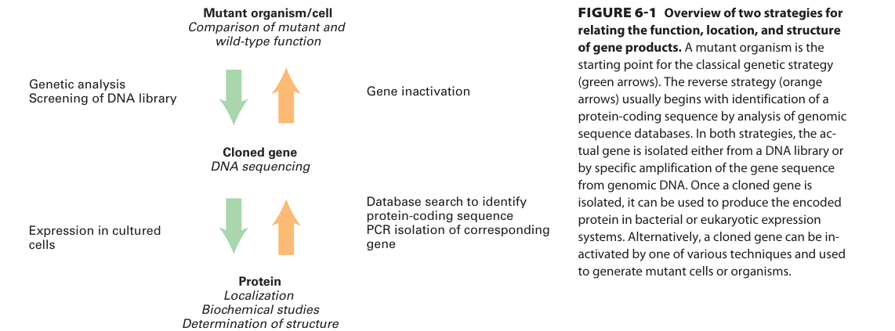
  <figcaption>图 6-1 关联基因产物功能、定位和结构的两种策略概览。突变体生物是经典遗传策略（绿色箭头）的起点。反向策略（橙色箭头）通常以通过分析基因组序列数据库鉴定蛋白质编码序列为起点。在两种策略中，实际基因要么从 DNA 文库中分离，要么通过对基因组 DNA 中的基因序列进行特异性扩增来获得。一旦获得克隆基因，它可以用于在细菌或真核表达系统中产生编码的蛋白质。或者，克隆基因可以通过多种技术之一失活，并用于产生突变细胞或生物。</figcaption>
  <table class="glossary"><caption>图内标签对照</caption>
  <tr><td class="gl-en">Genetic analysis</td><td class="gl-zh">遗传分析</td></tr>
  <tr><td class="gl-en">Screening of DNA library</td><td class="gl-zh">DNA文库筛选</td></tr>
  <tr><td class="gl-en">Expression in cultured cells</td><td class="gl-zh">在培养细胞中表达</td></tr>
  <tr><td class="gl-en">Cloned gene</td><td class="gl-zh">克隆基因</td></tr>
  <tr><td class="gl-en">DNA sequencing</td><td class="gl-zh">DNA测序</td></tr>
  <tr><td class="gl-en">Protein</td><td class="gl-zh">蛋白质</td></tr>
  <tr><td class="gl-en">Localization</td><td class="gl-zh">定位</td></tr>
  <tr><td class="gl-en">Biochemical studies</td><td class="gl-zh">生物化学研究</td></tr>
  <tr><td class="gl-en">Determination of structure</td><td class="gl-zh">结构测定</td></tr>
  <tr><td class="gl-en">Gene inactivation</td><td class="gl-zh">基因失活</td></tr>
  <tr><td class="gl-en">Database search</td><td class="gl-zh">数据库搜索</td></tr>
  <tr><td class="gl-en">PCR</td><td class="gl-zh">PCR（聚合酶链式反应）</td></tr>
  <tr><td class="gl-en">Mutant organism</td><td class="gl-zh">突变体生物</td></tr>
  <tr><td class="gl-en">Wild-type</td><td class="gl-zh">野生型</td></tr>
  </table>
</figure>
<p>一系列常用于分析特定基因在何时何地表达以及其蛋白质在细胞中何处定位的技术。在某些情况下，对蛋白质功能的了解可以带来重大的医学进展，而开发遗传病治疗方法的第一步是鉴定和分离受影响的基因，我们将在此描述这一过程。最后，我们讨论消除正常蛋白质功能以分析该蛋白质在细胞中作用的技术。</p>
<h2 id="sec-6.1">6.1 利用突变遗传分析鉴定和研究基因</h2>
<p>正如第 5 章所述，基因 DNA 序列中编码的信息决定了细胞中每个蛋白质分子的序列——进而决定了其结构和功能。遗传学作为研究细胞和生物体的工具，其强大之处在于研究者能够通过改变某一蛋白质的基因，选择性地改变细胞中该特定类型蛋白质的每一个拷贝。对某一特定过程中存在缺陷的突变体进行遗传分析，可以揭示：(1) 该过程发生所需的基因；(2) 基因产物在该过程中发挥作用的顺序；(3) 不同基因编码的蛋白质是否以及如何相互作用。在我们了解这类遗传学研究如何为复杂的细胞或发育过程的机制提供洞见之前，让我们先回顾一下贯穿我们讨论的一些基本遗传学术语。</p>
<p>基因的不同形式或变体被称为等位基因（alleles）。遗传学家通常将群体（尤其是人类群体）中存在的众多天然遗传变异称为等位基因。突变（mutation）一词通常保留用于指已知是新形成的等位基因，例如在实验生物体经过诱变剂处理后——诱变剂（mutagen）是一种能引起 DNA 序列发生可遗传改变的试剂。</p>
<p>严格来说，个体携带的所有基因的特定等位基因组合构成了其基因型（genotype）。然而，该术语通常以更狭义的方式使用，用于指代所研究的某个或某些特定基因的等位基因。对于实验生物体，野生型（wild type）一词通常用于指定在育种实验中作为参考的标准基因型。因此，正常的、非突变等位基因通常被指定为野生型。由于人类群体中天然存在巨大的等位基因变异，野生型一词通常表示以远高于其他可能替代形式的频率存在的等位基因。</p>
<p>遗传学家严格区分生物体的基因型和表型（phenotype）。表型一词指由给定基因型所导致的个体的所有物理属性或性状。然而在实践中，表型一词通常用于表示由实验研究中特定等位基因所导致的结果。易于观察的表型特征在突变的遗传分析中至关重要。</p>
<p>隐性突变等位基因和显性突变等位基因通常对基因功能具有相反的影响</p>
<p>实验生物体之间的一个基本遗传差异在于其细胞是携带每个染色体的两个拷贝还是仅携带一个拷贝。前者称为二倍体（diploid），后者称为单倍体（haploid）。大多数复杂的多细胞生物（如果蝇、小鼠、人类）是二倍体，而一些简单的单细胞生物是单倍体。某些生物体，特别是酿酒酵母（Saccharomyces cerevisiae），可以以单倍体或二倍体状态存在。某些生物体（包括植物和动物）的正常细胞携带每个染色体的两个以上拷贝，因此被指定为多倍体（polyploid）。此外，癌细胞最初是二倍体细胞，但通过转化为</p>
<p>Wild type Dominant</p>
<figure id="fig-6-2">
  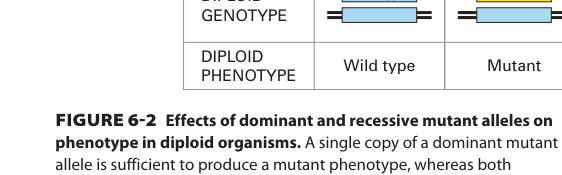
  <figcaption>图 6-2 显性和隐性突变等位基因对二倍体生物表型的影响。单个显性突变等位基因拷贝足以产生突变表型，而隐性突变等位基因的两个拷贝都必须存在才能表现出突变表型。</figcaption>
  <table class="glossary"><caption>图内标签对照</caption>
  <tr><td class="gl-en">Genotype</td><td class="gl-zh">基因型</td></tr>
  <tr><td class="gl-en">Diploid</td><td class="gl-zh">二倍体</td></tr>
  <tr><td class="gl-en">Phenotype</td><td class="gl-zh">表型</td></tr>
  <tr><td class="gl-en">Wild type</td><td class="gl-zh">野生型</td></tr>
  <tr><td class="gl-en">Mutant</td><td class="gl-zh">突变体</td></tr>
  <tr><td class="gl-en">Dominant mutant allele</td><td class="gl-zh">显性突变等位基因</td></tr>
  <tr><td class="gl-en">Recessive mutant allele</td><td class="gl-zh">隐性突变等位基因</td></tr>
  </table>
</figure>
<p>DIPLOID PHENOTYPE Wild type Mutant Wild type Mutant</p>
<p>癌细胞的过程，可以获得一条或多条染色体的额外拷贝，因此被指定为非整倍体（aneuploid）。然而，我们关于遗传技术和分析的讨论主要涉及二倍体生物，包括二倍体酵母。</p>
<p>尽管一个基因的许多不同等位基因可能存在于群体中不同生物体中，但任何个体二倍体生物将携带每个基因的两个拷贝，因此最多只能有两个不同的等位基因。一个拥有两个不同等位基因的二倍体个体对该基因是杂合的（heterozygous），而携带两个相同等位基因的二倍体个体对该基因是纯合的（homozygous）。隐性突变等位基因（recessive mutant allele）的定义是：必须两个等位基因都突变才能观察到突变表型；也就是说，个体必须对该突变等位基因是纯合的才能表现出突变表型。相反，显性突变等位基因（dominant mutant allele）的表型后果可以在携带一个突变等位基因和一个野生型等位基因的杂合个体中观察到（图 6-2）。</p>
<p>一个突变等位基因是隐性的还是显性的，为受影响的基因的功能和致病突变的性质提供了有价值的信息。隐性等位基因通常由使受影响的基因失活的突变引起，导致部分或完全的功能丧失。这类隐性突变可能从染色体上移除基因的一部分或整个基因，破坏基因的表达，或改变编码蛋白的结构，从而改变其功能。相反，显性等位基因通常是由某种功能获得（gain of function）突变引起的。这类显性突变可能增加编码蛋白的活性，赋予其新的功能，或导致其表达产生新的空间或时间模式。</p>
<p>在某些罕见情况下，显性突变与功能丧失相关。例如，某些基因是单倍不足的（haploinsufficient），即移除或失活这种基因的两个等位基因中的一个会导致突变表型，因为产生的基因产物不足。在另一些罕见情况下，一个等位基因的显性突变可能导致蛋白质结构改变，从而干扰另一个等位基因编码的野生型蛋白的功能。这种突变称为显性负效应突变（dominant-negative），产生的表型类似于功能丧失突变所获得的表型。</p>
<p>某些等位基因可以同时表现出隐性和显性特性。在这种情况下，关于一个等位基因是显性还是隐性的陈述必须指明表型。例如，人类血红蛋白基因中指定为 Hb^s 的等位基因具有不止一种表型后果。该等位基因纯合（Hb^s/Hb^s）的个体</p>
<p>Dominant Recessive Recessive</p>
<p>Dominant</p>
<p>Recessive</p>
<p>Mutant</p>
<p>患有镰状细胞病导致的衰弱性贫血，但杂合个体（Hb^s/Hb^a）不会患病。因此，Hb^s 对于镰状细胞病这一性状是隐性的。另一方面，杂合（Hb^s/Hb^a）个体比纯合（Hb^a/Hb^a）个体对疟疾更具抵抗力，这表明 Hb^s 对于疟疾抵抗力这一性状是显性的。必须存在两个拷贝的隐性突变等位基因才能引起突变表型。隐性突变通常导致功能丧失；显性突变通常导致功能获得或功能改变。■</p>
<p>实验生物体中常用的诱变剂是甲磺酸乙酯（EMS）。虽然这种诱变剂可以通过多种方式改变 DNA 序列，但其最常见的效应是对 DNA 中的鸟嘌呤碱基进行化学修饰，最终导致 G·C 碱基对转变为 A·T 碱基对。这种仅涉及单个碱基对的基因序列改变称为点突变（point mutation）。沉默点突变（silent point mutation）不会引起基因编码蛋白的氨基酸序列或活性的任何改变。然而，可观察到的表型后果（由于蛋白质活性改变）可以由导致一个氨基酸被另一个氨基酸取代（错义突变，missense mutations）或引入提前终止密码子（无义突变，nonsense mutations）的点突变引起。碱基的添加或缺失可能改变基因的阅读框（移码突变，frameshift mutations）。由于导致蛋白质活性降低的 DNA 序列改变比导致蛋白质活性升高或质的改变的可能性大得多，因此诱变通常产生的隐性突变远多于显性突变。</p>
<p>育种实验中突变的分离揭示其显性或隐性</p>
<p>遗传学家利用生物体的正常生命周期来检测等位基因的显性或隐性。为了了解这是如何做到的，我们必须首先回顾产生配子（高等植物和动物中的精子和卵细胞）的细胞分裂类型。大多数多细胞生物的身体（体细胞）细胞通过有丝分裂（mitosis）进行分裂，而产生配子的生殖细胞则经历减数分裂（meiosis）。与体细胞一样，减数分裂前的生殖细胞是二倍体，含有每种形态类型染色体的两个同源染色体。构成每对同源染色体的两条同源染色体来自不同的亲本，因此它们的基因可能以不同的等位基因形式存在。图 6-3 描绘了有丝分裂和减数分裂细胞分裂的主要事件。在有丝分裂中，DNA 复制后总是紧随细胞分裂，产生两个</p>
<p>MITOTIC CELL DIVISION</p>
<p>MEIOTIC CELL DIVISION</p>
<p>Paternal homolog</p>
<p>Maternal homolog</p>
<p>Somatic cell (2n)</p>
<p>DNA replication</p>
<p>Replicated chromosomes (4n)</p>
<p>Mitotic apparatus</p>
<p>Cell division</p>
<p>Daughter cells (2n)</p>
<figure id="fig-6-3">
  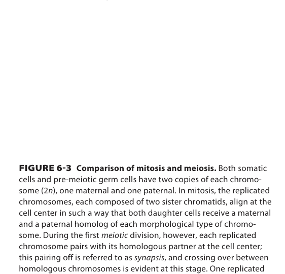
  <figcaption>图 6-3 有丝分裂与减数分裂的比较。体细胞和减数分裂前的生殖细胞都具有每条染色体的两个拷贝（2n），一个来自母方，一个来自父方。在有丝分裂中，已复制的染色体（每条由两个姐妹染色单体组成）在细胞中央排列，使得两个子细胞都获得每种形态类型染色体的一个母方同源染色体和一个父方同源染色体。然而，在减数第一次分裂中，每条已复制的染色体与其同源伙伴在细胞中央配对；这种配对称为联会，在此阶段可以观察到同源染色体之间的交叉互换。一条已复制的染色体……</figcaption>
  <table class="glossary"><caption>图内标签对照</caption>
  <tr><td class="gl-en">Mitosis</td><td class="gl-zh">有丝分裂</td></tr>
  <tr><td class="gl-en">Meiosis</td><td class="gl-zh">减数分裂</td></tr>
  <tr><td class="gl-en">Sister chromatids</td><td class="gl-zh">姐妹染色单体</td></tr>
  <tr><td class="gl-en">Homologous chromosomes</td><td class="gl-zh">同源染色体</td></tr>
  <tr><td class="gl-en">Synapsis</td><td class="gl-zh">联会</td></tr>
  <tr><td class="gl-en">Crossing over</td><td class="gl-zh">交叉互换</td></tr>
  <tr><td class="gl-en">Maternal</td><td class="gl-zh">母本</td></tr>
  <tr><td class="gl-en">Paternal</td><td class="gl-zh">父本</td></tr>
  <tr><td class="gl-en">Germ cells</td><td class="gl-zh">生殖细胞</td></tr>
  <tr><td class="gl-en">Somatic cells</td><td class="gl-zh">体细胞</td></tr>
  </table>
</figure>
<p>Paternal homolog</p>
<p>Maternal homolog</p>
<p>Premeiotic cell (2n)</p>
<p>DNA replication</p>
<p>Replicated chromosomes (4n)</p>
<p>Homologous chromosomes align; synapsis and crossing over</p>
<p>Mitotic apparatus</p>
<p>Meiosis II Meiosis I</p>
<p>Metaphase I</p>
<p>Daughter cells in metaphase II (2n)</p>
<p>1n 1n 1n 1n</p>
<p>每种形态类型的一个染色体然后进入每个子细胞。所产生的细胞经历第二次分裂，其间没有 DNA 复制，因此每种形态类型的一条姐妹染色单体被分配到子细胞中。在第二次减数分裂中，染色单体的排列及其向子细胞的均等分离与有丝分裂相同。在中期 I 中，同源染色体对的排列相对于其他染色体对是随机的，导致每个子细胞中父源和母源染色体的混合。</p>
<p>二倍体子细胞。在减数分裂中，一轮 DNA 复制后紧随两次独立的细胞分裂，产生称为配子的单倍体（1n）细胞，该细胞只含有每对同源染色体中的一条。已复制的同源染色体在第一次减数分裂中向子细胞的分配（即分离）是随机的，且不同染色体彼此独立分离，产生具有不同父源和母源染色体组合的配子。</p>
<p>为了避免不必要的复杂性，遗传学家通常努力用对所研究基因是纯合的品系开始育种实验。在这种纯种品系中，每个个体都将从每个亲本获得相同的等位基因，因此等位基因的组成不会一代一代地改变。当纯种突变品系与纯种野生型品系交配时，所有第一子代（F1）后代将是杂合的（图 6-4）。如果 F1 后代表现出突变性状，则突变等位基因是显性的；如果 F1 后代表现出野生型性状，则突变等位基因是隐性的。F1 个体之间的进一步杂交也将根据突变是显性还是隐性而揭示不同的遗传模式。当对显性等位基因杂合的 F1 个体彼此杂交时，四分之三的 F2 后代会表现出突变性状。相反，当对隐性等位基因杂合的 F1 个体彼此杂交时，只有四分之一的 F2 后代会表现出突变性状。</p>
<p>如前所述，酿酒酵母（S. cerevisiae）是一种重要的实验生物体，可以以单倍体或二倍体状态存在。在这些单细胞真核生物中，单倍体细胞之间的杂交可以确定突变等位基因是显性还是隐性。单倍体酵母细胞携带每个染色体的一个拷贝，可以有两种不同的交配型，称为 a 和 α。相反交配型的单倍体细胞可以交配产生 a/α 二倍体，其携带每个染色体的两个拷贝。如果在一个单倍体菌株中分离到一个具有可观察表型的新突变，可以将该突变菌株与相反交配型的野生型菌株交配，产生对该突变等位基因杂合的 a/α 二倍体。如果这些二倍体表现出突变性状，则突变等位基因是显性的；但如果二倍体表现出野生型性状，则突变等位基因是隐性的。当 a/α 二倍体被置于饥饿条件下时，细胞经历减数分裂，每个细胞产生一个含有四个单倍体孢子的四分体，其中两个是 a 型，两个是 α 型。杂合二倍体细胞的孢子形成产生两个携带突变等位基因的孢子和两个携带野生型等位基因的孢子（图 6-5）。在适当条件下，酵母孢子将萌发，产生两种交配型的营养单倍体菌株。</p>
<p>条件突变可用于研究酵母中的必需基因</p>
<p>用于鉴定和分离突变体的程序，称为遗传筛选（genetic screens），取决于实验生物体</p>
<p>Segregation of dominant mutation</p>
<p>(a)</p>
<p>Mutant</p>
<p>Wild type</p>
<p>A/ A a / a</p>
<p>All</p>
<p>All</p>
<p>Gametes</p>
<p>A</p>
<p>a</p>
<p>First filial generation, F1: all offspring have mutant phenotype</p>
<p>A / a</p>
<p>Gametes</p>
<p>or or</p>
<p>A a A a</p>
<p>Second filial generation, F2: 3/4 of offspring have mutant phenotype</p>
<p>A/ A A / a a / A a / a</p>
<p>Normal</p>
<p>Mutant</p>
<p>Segregation of recessive mutation</p>
<p>(b)</p>
<p>Mutant</p>
<p>Wild type</p>
<p>b/ b B/ B</p>
<p>All</p>
<p>All</p>
<p>Gametes</p>
<p>b</p>
<p>B</p>
<p>First filial generation, F1: no offspring have mutant phenotype</p>
<p>b /B</p>
<p>Gametes</p>
<p>or or</p>
<p>b B b B</p>
<p>Second filial generation, F2: 1/4 of offspring have mutant phenotype</p>
<p>B/ B B / b b / B b/ b</p>
<p>Normal</p>
<p>Mutant</p>
<figure id="fig-6-4">
  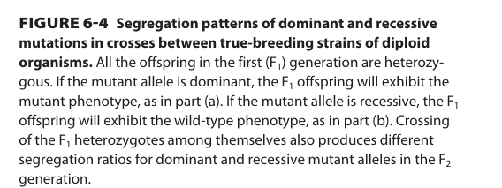
  <figcaption>图 6-4 显性和隐性突变在二倍体生物纯系品系杂交中的分离模式。第一代（F1）的所有后代都是杂合的。如果突变等位基因是显性的，F1 后代表现出突变表型，如（a）部分所示。如果突变等位基因是隐性的，F1 后代表现出野生型表型，如（b）部分所示。F1 杂合子彼此杂交也会在 F2 代中对显性和隐性突变等位基因产生不同的分离比。</figcaption>
  <table class="glossary"><caption>图内标签对照</caption>
  <tr><td class="gl-en">Segregation</td><td class="gl-zh">分离</td></tr>
  <tr><td class="gl-en">Dominant mutation</td><td class="gl-zh">显性突变</td></tr>
  <tr><td class="gl-en">Recessive mutation</td><td class="gl-zh">隐性突变</td></tr>
  <tr><td class="gl-en">Heterozygous</td><td class="gl-zh">杂合</td></tr>
  <tr><td class="gl-en">F1 generation</td><td class="gl-zh">F1代</td></tr>
  <tr><td class="gl-en">F2 generation</td><td class="gl-zh">F2代</td></tr>
  <tr><td class="gl-en">True-breeding</td><td class="gl-zh">纯育</td></tr>
  </table>
</figure>
<p>Mutant (type α) Wild type</p>
<p>(type a)</p>
<p>b B</p>
<p>Haploid cells of opposite mating type</p>
<p>Diploid cells: will not exhibit mutant phenotype if mutation is recessive</p>
<p>B / b</p>
<p>(type a/α)</p>
<p>Sporulation</p>
<p>B</p>
<figure id="fig-6-5">
  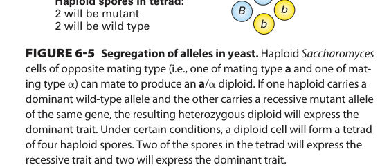
  <figcaption>图 6-5 酵母中等位基因的分离。相反交配型的单倍体 a 细胞和 α 细胞（即一个交配型为 a，另一个为 α）可以交配产生 a/α 二倍体。如果一个单倍体携带显性野生型等位基因，另一个携带同一基因的隐性突变等位基因，则产生的杂合二倍体将表达显性性状。在某些条件下，二倍体细胞会形成含有四个单倍体孢子的四分体。四分体中的两个孢子表达隐性性状，两个表达显性性状。</figcaption>
  <table class="glossary"><caption>图内标签对照</caption>
  <tr><td class="gl-en">Haploid spores in tetrad</td><td class="gl-zh">四分体中的单倍体孢子</td></tr>
  <tr><td class="gl-en">Saccharomyces</td><td class="gl-zh">酿酒酵母（Saccharomyces）</td></tr>
  <tr><td class="gl-en">Mating type</td><td class="gl-zh">交配型</td></tr>
  <tr><td class="gl-en">Diploid</td><td class="gl-zh">二倍体</td></tr>
  <tr><td class="gl-en">Heterozygous</td><td class="gl-zh">杂合</td></tr>
  </table>
</figure>
<p>是单倍体还是二倍体，以及如果是后者，突变是隐性的还是显性的。编码生命必需蛋白质的基因是最有趣和最重要的研究对象之一。由于必需基因突变的表型表达导致个体死亡，因此需要巧妙的遗传筛选来分离和维持携带致死突变的生物体。</p>
<p>在单倍体酵母细胞中，可以通过使用条件突变（conditional mutations）来研究必需基因。最常见的条件突变之一是温度敏感突变（temperature-sensitive mutations），这在可以在一定温度范围内生长的生物体（如细菌和低等真核生物）中很有用。例如，单个错义突变可能导致生成的突变蛋白热稳定性降低，使得该蛋白在一个温度（如 23 °C）下完全有功能，但在另一个温度（如 36 °C）下开始变性从而失活，而正常蛋白在两个温度下都能完全稳定和有功能。观察到突变表型的温度称为非允许温度（nonpermissive）；允许温度（permissive）是指即使突变等位基因存在，也不会观察到突变表型的温度。因此，突变菌株可以在允许温度下维持，然后转接到非允许温度下进行突变表型分析。</p>
<p>酿酒酵母中一个特别重要的温度敏感突变体筛选案例来自 L. H. Hartwell 及其同事在 20 世纪 60 年代末和 70 年代初的研究。他们着手鉴定在细胞周期调控中重要的基因（在细胞周期中，细胞合成蛋白质、复制其 DNA，然后进行有丝分裂细胞分裂）。单个酵母细胞</p>
<p>经过 20-30 次细胞分裂的指数生长，在固体琼脂培养基上形成可见的酵母菌落。由于细胞周期完全阻断的突变体将无法形成菌落，因此需要条件突变体来研究影响这一基本细胞过程的突变。为了筛选这类突变体，研究者首先将酵母细胞暴露于诱变剂，然后鉴定出在 23 °C 下能正常生长但在 36 °C 下不能形成菌落的突变酵母细胞（图 6-6a）。</p>
<p>一旦分离出温度敏感突变体，进一步的分析揭示其中一些确实在细胞分裂中存在缺陷。在酿酒酵母中，细胞分裂通过出芽过程发生，而芽的大小（通过光学显微镜很容易观察）指示细胞在细胞周期中的位置。每个在 36 °C 下不能生长的突变体在非允许温度下培养数小时后用显微镜检查。对许多不同的温度敏感突变体的检查揭示了一组在细胞周期中表现出明显阻断的突变体。因此，这些突变体被指定为 cdc（细胞分裂周期，cell division cycle）突变体。重要的是，这些酵母突变体并不仅仅是不能生长——如果它们携带影响一般细胞代谢的突变，可能会出现这种情况。相反，在非允许温度下，突变体在细胞周期的部分阶段正常生长，但随后停滞在细胞周期的特定阶段，因此可以观察到许多处于该阶段的细胞（图 6-6b）。酵母中的大多数 cdc 突变是隐性的；也就是说，当单倍体 cdc 菌株与野生型单倍体交配时，产生的杂合二倍体既不是温度敏感的，也不是细胞分裂缺陷的。</p>
<p>二倍体中的隐性致死突变可通过近交鉴定并维持在杂合子中</p>
<p>在二倍体生物中，隐性突变导致的表型只能在突变等位基因纯合的个体中观察到。由于二倍体生物中的诱变通常只改变一个基因的一个等位基因，产生杂合突变体，因此遗传筛选必须包括近交步骤以产生突变等位基因纯合的后代。遗传学家 H. Muller 开发了一种在果蝇 Drosophila 中进行此类近交实验的通用高效程序。通过使用此类程序，果蝇和其他二倍体生物中的隐性致死突变可以维持在杂合个体中，其表型后果可以在纯合子中进行分析。</p>
<p>Muller 的方法被 C. Nüsslein-Volhard 和 E. Wieschaus 极其有效地使用，他们系统地筛选了影响果蝇胚胎发生的隐性致死突变。通过这一筛选鉴定出的携带隐性致死突变的死亡纯合胚胎在显微镜下检查了特定的形态学缺陷。目前对多细胞生物发育分子机制的理解，在很大程度上基于对这些果蝇突变体的表征所揭示的胚胎发育的详细图景。</p>
<p>(a)</p>
<p>2</p>
<p>Incubate at 23 °C for 5 h</p>
<p>1</p>
<p>Add mutagen; distribute into smaller aliquots</p>
<p>Yeast in liquid culture</p>
<p>Plate out individual aliquots</p>
<p>3</p>
<p>Colonies</p>
<p>Agar</p>
<p>4</p>
<p>Incubate at 23 °C</p>
<p>Temperature-sensitive for growth; growth at 23 °C, no growth at 36 °C</p>
<p>Replica-plate and incubate</p>
<p>5</p>
<p>23 °C 36 °C</p>
<p>(b)</p>
<p>Wild type</p>
<p>cdc28 mutants</p>
<p>cdc7 mutants</p>
<figure id="fig-6-6">
  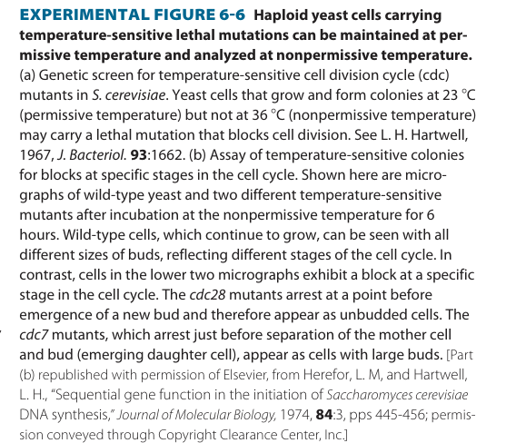
  <figcaption>实验图 6-6 携带温度敏感致死突变的单倍体酵母细胞可以在许可温度下维持，并在非许可温度下分析。（a）酿酒酵母（S. cerevisiae）中温度敏感细胞分裂周期（cdc）突变体的遗传筛选。在 23°C（许可温度）下能生长并形成菌落，但在 36°C（非许可温度）下不能的酵母细胞可能携带阻断细胞分裂的致死突变。参见 L. H. Hartwell, J. Bacteriol. 1967, 93:1662。（b）检测温度敏感菌落在细胞周期特定阶段的阻断。此处显示的是野生型酵母和两个不同的温度敏感突变体在非许可温度下孵育 6 小时后的显微照片。野生型细胞继续生长，可以看到具有各种大小芽体的细胞，反映了细胞周期的不同阶段。相比之下，下方两张显微照片中的细胞在细胞周期的特定阶段表现出阻断。cdc28 突变体停滞在新芽出现之前的阶段，因此表现为无芽细胞。cdc7 突变体停滞在母细胞与芽体（新出现的子细胞）分离之前，表现为具有大芽体的细胞。[部分（b）经 Elsevier 许可转载，来自 L. H. Hartwell, 「Sequential gene function in the initiation of Saccharomyces cerevisiae DNA synthesis,」 Journal of Molecular Biology, 1974, 84:3, pp 445-456；通过 Copyright Clearance Center, Inc. 获得许可。]</figcaption>
  <table class="glossary"><caption>图内标签对照</caption>
  <tr><td class="gl-en">Temperature-sensitive mutation</td><td class="gl-zh">温度敏感突变</td></tr>
  <tr><td class="gl-en">Permissive temperature</td><td class="gl-zh">允许温度</td></tr>
  <tr><td class="gl-en">Nonpermissive temperature</td><td class="gl-zh">非允许温度</td></tr>
  <tr><td class="gl-en">Cell division cycle</td><td class="gl-zh">细胞分裂周期</td></tr>
  <tr><td class="gl-en">cdc mutants</td><td class="gl-zh">cdc突变体</td></tr>
  <tr><td class="gl-en">Bud</td><td class="gl-zh">芽体</td></tr>
  <tr><td class="gl-en">Genetic screen</td><td class="gl-zh">遗传筛选</td></tr>
  </table>
</figure>
<p>互补检验确定不同隐性突变是否位于同一基因中</p>
<p>使用经典遗传学方法研究特定细胞过程的研究者通常会分离出多个产生相同表型的隐性突变。确定这些突变是位于同一基因还是不同基因中的一种常用检验利用了遗传互补（genetic complementation）现象；即通过将两个不同的突变体交配来恢复野生型表型。如果两个隐性突变 a 和 b 位于同一基因中，那么携带一个 a 等位基因和一个 b 等位基因的二倍体生物将表现出突变表型，因为两个等位基因都不能提供该基因的功能性拷贝。相反，如果突变 a 和 b 位于不同的基因中，那么携带每个突变等位基因单个拷贝的杂合子将不会表现出突变表型，因为每个基因的野生型等位基因也存在。在这种情况下，这两个突变被称为彼此互补（complement）。互补分析不能用于显性突变，因为突变等位基因赋予的表型即使在基因的野生型等位基因存在的情况下也会表现出来。</p>
<p>对一组表现出相同表型的突变体进行互补分析，可以区分一组功能相关基因中的各个基因，所有这些基因都必须发挥功能才能产生给定的表型性状。例如，前面描述的酿酒酵母中 cdc 突变的筛选产生了许多似乎停滞在同一细胞周期阶段的隐性温度敏感突变体。为了确定这些突变影响了多少个基因，Hartwell 及其同事进行了互补</p>
<p>检验，按照图 6-7 中概述的一般方案，对所有 cdc 突变体的两两组合进行了测试。这些检验将 100 多个 cdc 突变组织为约 20 个不同的 CDC 基因。随后对 CDC 基因及其编码蛋白的分子表征（如第 19 章详细描述）为理解从酵母到人类的生物体中细胞分裂如何被调控提供了框架。</p>
<p>双突变体可用于评估蛋白质发挥功能的顺序</p>
<p>通过仔细分析与特定细胞过程相关的突变表型，研究者通常可以推断出一组基因及其蛋白质产物发挥功能的顺序。两类一般过程适合这种分析：(1) 生物合成途径，其中前体物质通过一个或多个中间体转化为最终产物；(2) 调控其他过程的信号通路，涉及信息流而非化学中间体。</p>
<p>Mate haploids of opposite mating types and carrying different recessive temperature- sensitive cdc mutations</p>
<p>Test resulting diploids for a temperature- sensitive cdc phenotype</p>
<figure id="fig-6-7">
  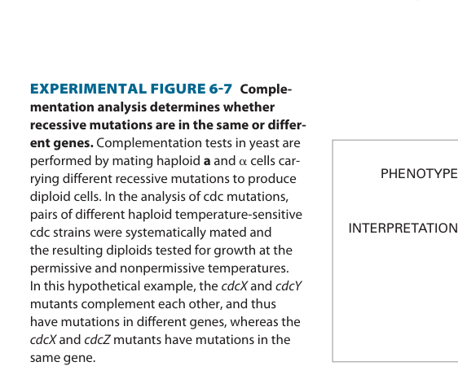
  <figcaption>实验图 6-7 互补分析确定隐性突变是在同一基因还是不同基因中。酵母中的互补测试通过将携带不同隐性突变的单倍体 a 细胞和 α 细胞交配产生二倍体细胞来进行。在 cdc 突变分析中，将不同单倍体温度敏感 cdc 菌株成对系统地交配，并测试所得二倍体在许可和非许可温度下的生长情况。在此假设示例中，cdcX 和 cdcY 突变体彼此互补，因此突变位于不同基因中，而 cdcX 和 cdcZ 突变体的突变位于同一基因中。</figcaption>
  <table class="glossary"><caption>图内标签对照</caption>
  <tr><td class="gl-en">Complementation analysis</td><td class="gl-zh">互补分析</td></tr>
  <tr><td class="gl-en">Recessive mutations</td><td class="gl-zh">隐性突变</td></tr>
  <tr><td class="gl-en">Phenotype</td><td class="gl-zh">表型</td></tr>
  <tr><td class="gl-en">Interpretation</td><td class="gl-zh">解读</td></tr>
  <tr><td class="gl-en">Diploid</td><td class="gl-zh">二倍体</td></tr>
  <tr><td class="gl-en">Haploid</td><td class="gl-zh">单倍体</td></tr>
  </table>
</figure>
<p>生物合成途径的排序 第一种类型过程的一个简单例子是细菌中氨基酸色氨酸等代谢物的生物合成。在这种情况下，色氨酸合成所需的每种酶催化生物合成途径中一个中间体转化为下一个中间体。在大肠杆菌中，编码这些酶的基因在基因组中彼此相邻，构成 trp 操纵子（见图 5-13）。这些酶的不同基因的作用顺序，以及因此该途径中生化反应的顺序，最初是通过每个突变体中积累的中间体类型推断出来的。然而，在复杂合成途径的情况下，对单一步骤缺陷突变体的表型分析可能给出模棱两可的结果，无法确凿地排序各个步骤。在途径的两个步骤中均有缺陷的双突变体对于排序这样的途径特别有用（图 6-8a）。</p>
<p>在第 14 章中，我们讨论了双突变体策略在阐明分泌途径中的经典应用。在该途径中，要分泌到细胞外的蛋白质从它们在粗面内质网上的合成位点</p>
<p>Mutant (type a)</p>
<p>Mutant (type α)</p>
<p>Mutant (type a)</p>
<p>Mutant (type α)</p>
<p>cdcX</p>
<p>cdcY</p>
<p>cdcX cdcZ</p>
<p>cdcX/cdcY</p>
<p>cdcX/cdcZ</p>
<p>(type a/α)</p>
<p>(type a/α)</p>
<p>Plate and incubate at permissive temperature</p>
<p>23 °C 23 °C</p>
<p>Replica-plate and incubate at nonpermissive temperature</p>
<p>36 °C 36 °C</p>
<p>Growth No growth</p>
<p>cdcX/</p>
<p>cdcX/</p>
<p>cdcZ PHENOTYPE:</p>
<p>cdcY</p>
<p>Wild type Mutant</p>
<p>Growth indicates that mutations cdcX and cdcY are in different genes</p>
<p>Absence of growth indicates that mutations cdcX and cdcZ are in the same gene</p>
<p>X Y</p>
<p>X</p>
<p>Z</p>
<p>Both alleles nonfunctional Respective wild-type alleles provide normal function</p>
<p>(a) Analysis of a biosynthetic pathway</p>
<p>A mutation in A accumulates intermediate 1. A mutation in B accumulates intermediate 2.</p>
<p>PHENOTYPE OF DOUBLE MUTANT:</p>
<p>A double mutation in A and B accumulates intermediate 1.</p>
<p>INTERPRETATION: The reaction catalyzed by A precedes the reaction catalyzed by B.</p>
<p>1 2 B A</p>
<p>3</p>
<p>(b) Analysis of a signaling pathway</p>
<p>A mutation in A gives repressed reporter expression. A mutation in B gives constitutive reporter expression.</p>
<p>PHENOTYPE OF DOUBLE MUTANT:</p>
<p>A double mutation in A and B gives repressed reporter expression.</p>
<p>INTERPRETATION: A positively regulates reporter expression and is negatively regulated by B.</p>
<p>A B</p>
<p>Reporter</p>
<p>PHENOTYPE OF DOUBLE MUTANT:</p>
<figure id="fig-6-8">
  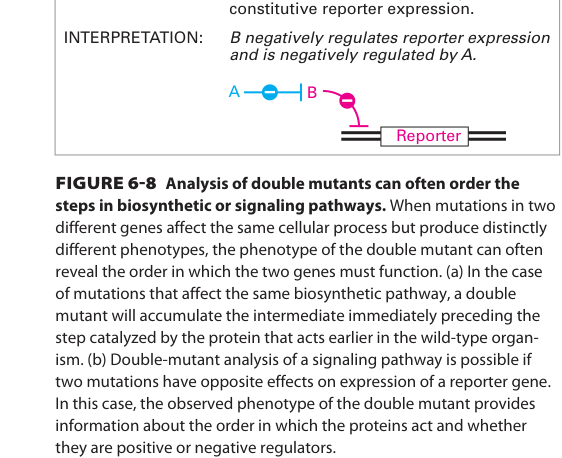
  <figcaption>图 6-8 双突变体分析通常可以确定生物合成或信号通路中步骤的顺序。当两个不同基因的突变影响同一细胞过程但产生明显不同的表型时，双突变体的表型通常可以揭示两个基因必须发挥功能的顺序。（a）对于影响同一生物合成途径的突变，双突变体将积累紧邻野生型生物中作用较早的蛋白质所催化步骤之前的中间产物。（b）如果两个突变对报告基因表达具有相反的影响，则可以对信号通路进行双突变分析。在这种情况下，观察到的双突变体表型提供了关于蛋白质作用顺序以及它们是正调控因子还是负调控因子的信息。</figcaption>
  <table class="glossary"><caption>图内标签对照</caption>
  <tr><td class="gl-en">Double mutant</td><td class="gl-zh">双突变体</td></tr>
  <tr><td class="gl-en">Biosynthetic pathway</td><td class="gl-zh">生物合成途径</td></tr>
  <tr><td class="gl-en">Signaling pathway</td><td class="gl-zh">信号传导途径</td></tr>
  <tr><td class="gl-en">Reporter</td><td class="gl-zh">报告基因</td></tr>
  <tr><td class="gl-en">Constitutive reporter expression</td><td class="gl-zh">组成型报告基因表达</td></tr>
  <tr><td class="gl-en">Negative regulator</td><td class="gl-zh">负调控因子</td></tr>
  <tr><td class="gl-en">Positive regulator</td><td class="gl-zh">正调控因子</td></tr>
  <tr><td class="gl-en">Interpretation</td><td class="gl-zh">解读</td></tr>
  </table>
</figure>
<p>（ER）移动到高尔基复合体，然后到分泌囊泡，最后到达细胞表面。</p>
<p>信号通路的排序 正如我们将在后续章节中学到的，许多真核基因的表达受到由细胞外激素、生长因子或其他信号启动的信号通路的调控。这类信号通路可能包含许多组分，双突变体分析通常可以为这些组分的功能和相互作用提供洞见。从这种分析中获得有用信息的唯一前提是，两个突变必须对同一受调控通路的输出（通过报告基因表达测量）具有非常不同的、甚至相反的效应。最常见的情况是，一个突变即使在信号存在时也抑制特定报告基因的表达，而另一个突变即使在信号不存在时也导致报告基因表达（即组成型表达）。如图 6-8b 所示，两种简单的调控机制与这样的单突变体一致，但双突变体表型可以区分它们。这一通用方法使遗传学家能够描绘出各种不同调控通路中的许多关键步骤，为更具体的生化分析奠定基础。</p>
<p>注意，该技术与刚才描述的互补分析不同，显性和隐性突变体都可以用于双突变体分析。当测试两个隐性突变时，所创建的双突变体必须对两个突变都是纯合的。</p>
<p>遗传抑制和合成致死可以揭示相互作用或冗余的蛋白质</p>
<p>另外两种类型的遗传分析可以为在活细胞中同一细胞过程中发挥功能的蛋白质之间如何相互作用提供额外的线索。这两种方法都适用于许多实验生物体，涉及使用双突变体，其中一个突变的表型效应因第二个突变的存在而改变。</p>
<p>抑制突变 第一种类型的分析基于遗传抑制（genetic suppression）。为了理解这一现象，假设点突变导致蛋白质 A 发生结构改变，从而破坏其与参与同一细胞过程的另一种蛋白质 B 结合的能力。类似地，蛋白质 B 的突变导致小的结构改变，抑制其与蛋白质 A 相互作用的能力。进一步假设，蛋白质 A 和 B 的正常功能依赖于它们的相互作用。从理论上讲，蛋白质 A 的特定结构改变可能被蛋白质 B 的补偿性改变所抑制，从而使突变蛋白能够相互作用。在发生了这种抑制突变（suppressor mutations）的罕见情况下，携带两个突变等位基因的菌株将是正常的，而仅携带一个或另一个突变等位基因的菌株将具有突变表型（图 6-9a）。</p>
<p>在携带突变肌动蛋白等位基因（act1-1）和另一个基因（sac6）中第二个突变的酵母菌株中观察到的遗传抑制，为这两个基因编码的蛋白质在体内直接相互作用提供了早期证据。后来的生化研究表明，这两种蛋白质——Act1 和 Sac6——确实在细胞内构建功能性肌动蛋白结构的过程中相互作用。</p>
<p>合成致死突变 另一种现象称为合成致死（synthetic lethality），产生与抑制相反的表型效应。在这种情况下，一个突变的有害效应被相关基因中的第二个突变大大加剧（而非抑制）。</p>
<p>(a) Suppression</p>
<p>Genotype Phenotype</p>
<p>AB aB Ab ab</p>
<p>Wild type Mutant Mutant Suppressed mutant</p>
<p>INTERPRETATION</p>
<p>A</p>
<p>B</p>
<p>(b) Synthetic lethality 1</p>
<p>Genotype</p>
<p>AB aB Ab ab</p>
<p>Phenotype</p>
<p>Wild type Partial defect</p>
<p>Partial defect</p>
<p>Severe defect</p>
<p>INTERPRETATION</p>
<p>A</p>
<p>B</p>
<p>(c) Synthetic lethality 2</p>
<figure id="fig-6-9">
  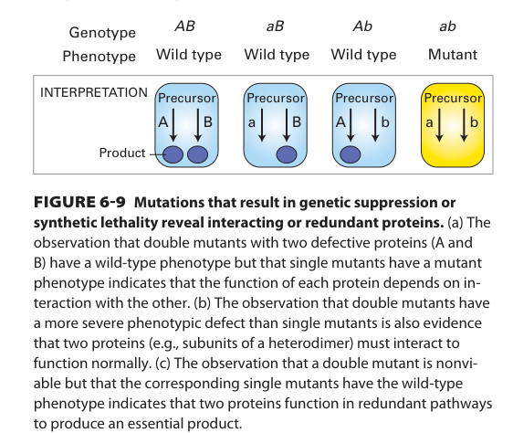
  <figcaption>图 6-9 导致遗传抑制或合成致死的突变揭示了相互作用的或冗余的蛋白质。（a）观察到具有两个缺陷蛋白质（A 和 B）的双突变体具有野生型表型，而单突变体具有突变表型，表明每种蛋白质的功能依赖于与另一种蛋白质的相互作用。（b）观察到双突变体比单突变体具有更严重的表型缺陷，也是两个蛋白质（例如异二聚体的亚基）必须相互作用才能正常发挥功能的证据。（c）观察到双突变体不能存活，而相应的单突变体具有野生型表型，表明两个蛋白质在冗余途径中发挥作用以产生必需产物。</figcaption>
  <table class="glossary"><caption>图内标签对照</caption>
  <tr><td class="gl-en">Genetic suppression</td><td class="gl-zh">遗传抑制</td></tr>
  <tr><td class="gl-en">Synthetic lethality</td><td class="gl-zh">合成致死</td></tr>
  <tr><td class="gl-en">Genotype</td><td class="gl-zh">基因型</td></tr>
  <tr><td class="gl-en">Phenotype</td><td class="gl-zh">表型</td></tr>
  <tr><td class="gl-en">Wild type</td><td class="gl-zh">野生型</td></tr>
  <tr><td class="gl-en">Mutant</td><td class="gl-zh">突变体</td></tr>
  <tr><td class="gl-en">Precursor</td><td class="gl-zh">前体</td></tr>
  <tr><td class="gl-en">Product</td><td class="gl-zh">产物</td></tr>
  <tr><td class="gl-en">Interpretation</td><td class="gl-zh">解读</td></tr>
  <tr><td class="gl-en">Redundant pathways</td><td class="gl-zh">冗余途径</td></tr>
  <tr><td class="gl-en">Heterodimer</td><td class="gl-zh">异源二聚体</td></tr>
  </table>
</figure>
<p>可能发生这种合成致死突变的一种情况如图 6-9b 所示。在这个例子中，异源二聚体蛋白被其任一非相同亚基中的突变部分但不完全失活。然而，在编码两个亚基的基因中携带特定突变的双突变体中，亚基之间几乎没有相互作用，导致严重的表型效应。合成致死突变也可以揭示那些编码在产生必需细胞组分的冗余途径中发挥功能的蛋白质的非必需基因。如图 6-9c 所示，如果仅有一条途径被突变失活，另一条途径将能够提供所需的产物。然而，如果两条途径同时被失活，则必需产物无法合成，双突变体将不能存活。</p>
<p>基因可以通过其在染色体上的图谱位置来鉴定</p>
<p>现在我们将考虑一种基于基因位置的根本不同类型的遗传分析。旨在确定基因在染色体上位置的研究，通常称为遗传图谱研究（genetic mapping studies），可用于鉴定受特定突变影响的基因，或确定两个突变是否位于同一基因中。</p>
<p>在许多生物体中，遗传图谱研究依赖于减数分裂过程中发生的遗传信息交换。如图 6-10a 所示，遗传重组发生在生殖细胞中每对同源染色体的染色体复制之后，但在第一次减数分裂细胞分裂之前。此时，母源和父源染色单体上的同源 DNA 序列可以在称为交叉（crossing over）的过程中彼此交换。我们现在知道，由此产生的同源染色体之间的交叉提供了结构连接，这对于第一次减数分裂细胞分裂中同源染色单体对正确分离到相反两极至关重要（进一步讨论见第 19 章）。</p>
<p>考虑一个个体，其带有两个不同的突变，每个突变来自不同亲本，这两个突变位于同一染色体上彼此靠近的位置。该个体可以根据减数分裂期间两个突变之间是否发生交叉而产生两种不同类型的配子。如果它们之间没有发生交叉，将产生称为亲本型（parental types）的配子，这些配子含有其中一个突变或另一个突变。相反，如果两个突变之间发生交叉，将产生称为重组型（recombinant types）的配子。在这个例子中，重组染色体将含有两个突变或都不含有。重组事件沿染色体长度或多或少随机发生；因此，两个基因越靠近，减数分裂期间它们之间恰好发生重组的可能性就越小。因此，观察到的两个位于同一染色体上的基因之间的重组频率越低，它们必定越靠近。两个位于同一染色体上且足够靠近的基因，如果产生的重组配子显著少于亲本配子，则被认为表现出遗传连锁（genetic linkage）。如果产生的重组配子数量并不显著少于亲本配子数量，则所考虑的两个基因座被认为是非连锁的，它们可能位于同一染色体上相距很远的位置，也可能位于不同的染色体上。</p>
<p>重组作图技术由 A. Sturtevant 于 1911 年设计，当时他是哥伦比亚大学 T. H. Morgan 实验室的一名本科生。该技术最初用于果蝇研究，至今仍用于评估许多实验生物体中同一染色体上两个遗传基因座之间的距离。一个典型的旨在确定两个遗传位置之间图谱距离的实验包括两个步骤。第一步，构建一个在每个位置（即基因座）携带不同突变的品系。第二步，评估该品系的后代以确定</p>
<p>Replicated chromosomes (4n)</p>
<p>m2 m1</p>
<p>Synapsis and crossing over</p>
<p>Metaphase I</p>
<p>Anaphase I</p>
<p>Anaphase II</p>
<p>m2 m2 m1 m1</p>
<figure id="fig-6-10">
  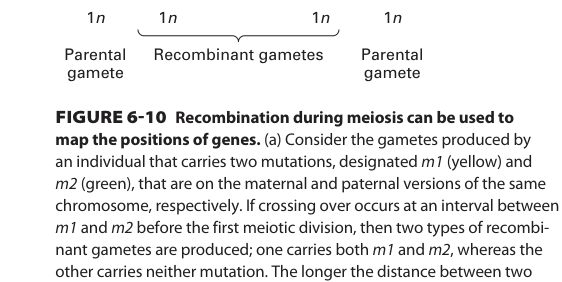
  <figcaption>图 6-10 减数分裂过程中的重组可用于定位基因的位置。（a）考虑由一个携带两个突变（分别标记为 m1（黄色）和 m2（绿色））的个体产生的配子，这两个突变分别位于同一染色体的母方和父方版本上。如果在减数第一次分裂之前，m1 和 m2 之间的区间发生交叉互换，则产生两种类型的重组配子；一种同时携带 m1 和 m2，另一种不携带任何突变。两个突变之间的距离越长……</figcaption>
  <table class="glossary"><caption>图内标签对照</caption>
  <tr><td class="gl-en">Recombinant gametes</td><td class="gl-zh">重组配子</td></tr>
  <tr><td class="gl-en">Parental gamete</td><td class="gl-zh">亲本配子</td></tr>
  <tr><td class="gl-en">Recombination</td><td class="gl-zh">重组</td></tr>
  <tr><td class="gl-en">Meiosis</td><td class="gl-zh">减数分裂</td></tr>
  <tr><td class="gl-en">Crossing over</td><td class="gl-zh">交叉互换</td></tr>
  <tr><td class="gl-en">Genetic mapping</td><td class="gl-zh">遗传作图</td></tr>
  </table>
</figure>
<p>继承亲本型或重组型的相对频率。确定两个基因之间重组频率的典型方法是将这些杂合后代之一与对每个基因都是纯合的另一个个体杂交。对于这样的杂交，重组后代的比例很容易确定，因为重组表型将不同于亲本表型。按照惯例，一个遗传图谱单位（genetic map unit）定义为染色体上两个位置之间的距离，该距离在 100 个总后代中产生 1 个重组个体。对应于这一 1% 重组频率的距离被称为厘摩（centimorgan, cM），以纪念 Sturtevant 的导师 Morgan（图 6-10b）。</p>
<p>对遗传作图方法的完整讨论超出了本入门讨论的范围；然而，重组作图有两个特征需要特别强调。首先，两个基因座之间的遗传交换频率与它们之间的碱基对物理距离成正比，但仅适用于相对靠近的基因座（例如，小于约 10 cM）。对于比这更远的连锁基因座，通过遗传交换频率测量的距离往往会低估物理距离，因为在一个区间内可能发生两次或更多次交叉。</p>
<p>(b) Consider two linked genes A and B with recessive alleles a and b. (a)</p>
<p>Cross of two mutants to construct a doubly heterozygous strain:</p>
<p>A /A b/b × a/a B/B</p>
<p>A</p>
<p>b B</p>
<p>a</p>
<p>Cross of double heterozygote to test strain:</p>
<p>a a</p>
<p>b b</p>
<p>× A</p>
<p>b B</p>
<p>a</p>
<p>A b a b</p>
<p>a b a b</p>
<p>A B</p>
<p>a B a b</p>
<p>a b</p>
<p>Recombinant types</p>
<p>Parental types</p>
<p>Genetic distance between A and B can be determined from frequency of parental and recombinant gametes:</p>
<p>recombinant gametes</p>
<p>Genetic distance in cM = 100 ×</p>
<p>total gametes</p>
<p>一条染色单体上的突变越多，它们被重组分开的可能性就越大，产生的重组配子比例就越高。(b) 在一个典型的作图实验中，构建一个对两个不同基因是杂合的品系。该品系产生的亲本型或重组型配子的频率可以通过与纯合隐性品系进行测交的后代表型来确定。以厘摩（cM）为单位的遗传图谱距离表示为重组配子占总配子的百分比。</p>
<p>解释不同生物体中遗传作图实验所需的第二个重要概念是，尽管遗传距离在不同生物体中以相同的方式定义，但重组频率（即遗传图谱距离）与物理距离之间的关系在不同生物体之间有所不同。例如，1% 的重组频率（即 1 cM 的遗传距离）在酵母中代表约 2.8 kb 的物理距离，而在果蝇中代表约 400 kb，在人类中代表约 780 kb。</p>
<p>遗传作图研究的主要用途之一是定位受目标突变影响的基因。沿染色体长度分布的大量已作图的遗传性状（即遗传标记，genetic markers）的存在，使得可以通过评估未作图突变相对于这些标记基因在减数分裂中的分离来确定其位置。因此，可用的标记越多，突变就能被越精确地作图。在第 6.4 节中，我们将看到如何使用这种方法来鉴定受遗传性人类疾病影响的基因。作图实验的第二个一般用途是确定两个不同的突变是否位于同一基因中。如果两个突变位于同一基因中，它们将在作图实验中表现出紧密连锁，但如果它们位于不同的基因中，它们通常是非连锁的或表现出弱连锁。</p>
<p>KEY CONCEPTS OF SECTION 6.1</p>
<p>Genetic Analysis of Mutations to Identify and Study Genes</p>
<p>- 二倍体生物携带每个基因的两个拷贝（等位基因），而单倍体生物仅携带一个拷贝。</p>
<p>- 隐性突变通常导致功能丧失，如果基因的野生型等位基因存在，这种功能丧失会被掩盖。要观察到突变表型，两个等位基因都必须携带突变。</p>
<p>- 显性突变在基因的野生型等位基因存在时导致突变表型。与显性突变相关的表型通常代表功能获得。</p>
<p>- 在减数分裂中，一个二倍体细胞经历一次 DNA 复制和两次细胞分裂，产生四个单倍体细胞，其中母源和父源染色体及其相关等位基因被随机分配（见图 6-3）。</p>
<p>- 显性和隐性突变在遗传杂交中表现出特征性的分离模式（见图 6-4）。</p>
<p>- 在单倍体酵母中，温度敏感突变对于鉴定和研究生存必需基因特别有用。</p>
<p>- 参与某一过程的功能相关基因的数量可以通过互补分析确定（见图 6-7）。</p>
<p>- 基因在生物合成或信号通路中发挥功能的顺序可以从受影响过程中两个步骤均有缺陷的双突变体的表型推断出来。</p>
<p>- 蛋白质之间功能上重要的相互作用可以从等位基因特异性抑制突变或合成致死突变的表型效应推断出来。</p>
<p>- 遗传作图实验利用减数分裂期间同源染色体之间的交叉来测量同一染色体上两个不同突变之间的遗传距离。</p>
<h2 id="sec-6.2">6.2 DNA克隆与鉴定</h2>
<p>在分子水平上对基因结构和功能的详细研究需要大量纯化的单个基因。多种技术（通常统称为重组DNA技术）被用于DNA克隆，使研究人员能够制备大量相同的DNA分子。重组DNA即任何由不同来源的序列组成的DNA分子。</p>
<p>克隆目标DNA片段的关键是将其连接到能够在宿主细胞内复制的载体DNA分子上。当一个由载体加上插入DNA片段组成的重组DNA分子被引入宿主细胞后，插入的DNA会随载体一同复制，产生大量相同的DNA分子。基本方案可概括如下：</p>
<p>Vector + DNA fragment</p>
<p>↓</p>
<p>Recombinant DNA</p>
<p>↓</p>
<p>Replication of recombinant DNA within host cells</p>
<p>↓</p>
<p>Isolation, sequencing, and manipulation</p>
<p>of purified DNA fragment</p>
<p>尽管研究人员已经设计了多种实验变体，但这一流程图展示了DNA克隆的基本步骤。</p>
<p>在本节中，我们首先描述从大量其他DNA序列中分离特定DNA序列的方法。这一过程通常涉及将基因组切割成片段，然后将每个片段放入载体中，使整个集合能够在不同的宿主细胞中作为重组分子进行增殖。虽然存在许多不同类型的载体，但我们的讨论将主要集中在常用的大肠杆菌宿主细胞中的质粒载体上。随后可采用各种技术从该DNA片段集合中鉴定出目标序列。一旦分离出特定的DNA片段，就可以确定该片段中核苷酸的精确序列。最后，我们讨论聚合酶链反应（PCR）。这种强大且多用途的技术可以多种方式用于产生大量特定序列，并在实验室中操作DNA。克隆DNA片段的各种用途将在后续章节中讨论。</p>
<p>Restriction Enzymes and DNA Ligases Allow Insertion of DNA Fragments into Cloning Vectors</p>
<p>DNA克隆的一个主要目标是获得构成特定基因的生物体DNA的离散小区域。此外，只有相对较小的DNA分子才能插入到任何现有载体中。出于这些原因，构成生物体基因组的极长DNA分子必须被切割成可以插入载体DNA的片段。两类酶——限制酶和DNA连接酶——促进了此类重组DNA分子的产生。</p>
<p>Cutting DNA Molecules into Small Fragments 限制酶是由细菌产生的内切核酸酶，通常识别特定的4–8 bp序列（称为限制位点），并在这些位点切割两条DNA链。限制位点通常是短的回文序列；即当从5′到3′方向读取时，每条DNA链上的限制位点序列是相同的（图6-11）。</p>
<p>对于每种限制酶，细菌也会产生一种修饰酶，通过在宿主DNA的每个潜在切割位点处或附近进行修饰，保护宿主细菌自身的DNA免受切割。修饰</p>
<p>EcoRI</p>
<p>5 3 3 5 G C</p>
<p>A T</p>
<p>A T</p>
<p>T A</p>
<p>T A</p>
<p>C G</p>
<p>Cleavage</p>
<p>EcoRI</p>
<p>Sticky ends</p>
<figure class="table" id="tab-T6-1">
  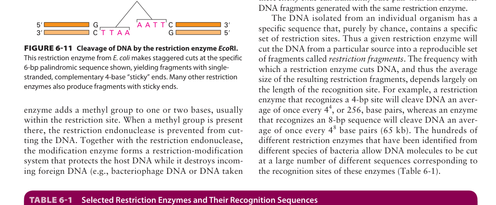
  <figcaption>表 6-1 精选限制性内切酶及其识别序列</figcaption>
  <table class="glossary"><caption>图内标签对照</caption>
  <tr><td class="gl-en">Restriction enzyme</td><td class="gl-zh">限制性内切酶</td></tr>
  <tr><td class="gl-en">EcoRI</td><td class="gl-zh">EcoRI（限制酶）</td></tr>
  <tr><td class="gl-en">E. coli</td><td class="gl-zh">大肠杆菌（E. coli）</td></tr>
  <tr><td class="gl-en">Palindromic sequence</td><td class="gl-zh">回文序列</td></tr>
  <tr><td class="gl-en">Sticky ends</td><td class="gl-zh">粘性末端</td></tr>
  <tr><td class="gl-en">Restriction fragments</td><td class="gl-zh">限制性片段</td></tr>
  <tr><td class="gl-en">Restriction-modification system</td><td class="gl-zh">限制-修饰系统</td></tr>
  <tr><td class="gl-en">Methyl group</td><td class="gl-zh">甲基</td></tr>
  <tr><td class="gl-en">Recognition site</td><td class="gl-zh">识别位点</td></tr>
  <tr><td class="gl-en">Bacteriophage</td><td class="gl-zh">噬菌体</td></tr>
  <tr><td class="gl-en">DNA ligase</td><td class="gl-zh">DNA连接酶</td></tr>
  </table>
</figure>
<figure id="fig-6-11">
  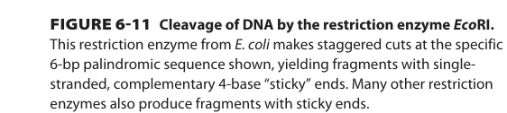
  <figcaption>图 6-11 EcoRI 限制性内切酶对 DNA 的切割。来自大肠杆菌（E. coli）的这种限制性内切酶在特定的 6-bp 回文序列处进行交错切割，产生具有单链互补 4 碱基「粘性末端」的片段。许多其他限制性内切酶也产生具有粘性末端的片段。</figcaption>
  <table class="glossary"><caption>图内标签对照</caption>
  <tr><td class="gl-en">EcoRI</td><td class="gl-zh">EcoRI（限制酶）</td></tr>
  <tr><td class="gl-en">Restriction enzyme</td><td class="gl-zh">限制性内切酶</td></tr>
  <tr><td class="gl-en">Sticky ends</td><td class="gl-zh">粘性末端</td></tr>
  <tr><td class="gl-en">Palindromic sequence</td><td class="gl-zh">回文序列</td></tr>
  </table>
</figure>
<p>Enzyme Source Microorganism Recognition Site* Ends Produced</p>
<p>BamHI Bacillus amyloliquefaciens</p>
<p>Sau3AI Staphylococcus aureus</p>
<p>EcoRI Escherichia coli</p>
<p>HindIII Haemophilus influenzae</p>
<p>SmaI Serratia marcescens</p>
<p>NotI Nocardia otitidis-caviarum</p>
<p>*Many of these recognition sequences are included in a common polylinker sequence (see Figure 6-13).</p>
<p>酶通过在所有可用的限制位点切割未修饰的DNA（例如入侵噬菌体的DNA或在转化过程中被摄入的DNA）来保护细菌细胞。</p>
<p>许多限制酶在相应限制位点的两条DNA链上产生交错切割，生成两端具有单链"尾巴"的片段（见图6-11）。在给定限制位点产生的片段上的尾巴与同一限制酶产生的所有其他片段上的尾巴是互补的。在室温下，这些粘性末端可以暂时与使用相同限制酶产生的其他DNA片段上的粘性末端进行碱基配对。</p>
<p>↓ -G-G-A-T-C-C- -C-C-T-A-G-G- ↑</p>
<p>Sticky</p>
<p>↓ -G-A-T-C- -C-T-A-G- ↑</p>
<p>Sticky</p>
<p>↓ -G-A-A-T-T-C- -C-T-T-A-A-G ↑</p>
<p>Sticky</p>
<p>↓ -A-A-G-C-T-T- -T-T-C-G-A-A- ↑</p>
<p>Sticky</p>
<p>↓ -C-C-C-G-G-G- -G-G-G-C-C-C- ↑</p>
<p>Blunt</p>
<p>↓ -G-C-G-G-C-C-G-C- -C-G-C-C-G-G-C-G- ↑</p>
<p>Sticky</p>
<p>Inserting DNA Fragments into Vectors 具有粘性末端或平末端的DNA片段可以在DNA连接酶的帮助下插入载体DNA。在正常DNA复制过程中，DNA连接酶催化短DNA片段的端到端连接（连接）。为了DNA克隆的目的，使用纯化的DNA连接酶将具有互补末端的限制片段和载体DNA共价连接起来（图6-12）。载体DNA和限制片段通过DNA的标准磷酸二酯键共价连接在一起。除了连接互补的粘性末端外，来自噬菌体T4的DNA连接酶还可以连接任意两个平末端DNA。然而，平末端连接本质上是低效的，需要比粘性末端连接更高浓度的DNA和DNA连接酶。</p>
<p>Isolated DNA Fragments Can Be Cloned into E. coli Plasmid Vectors</p>
<figure id="fig-6-12">
  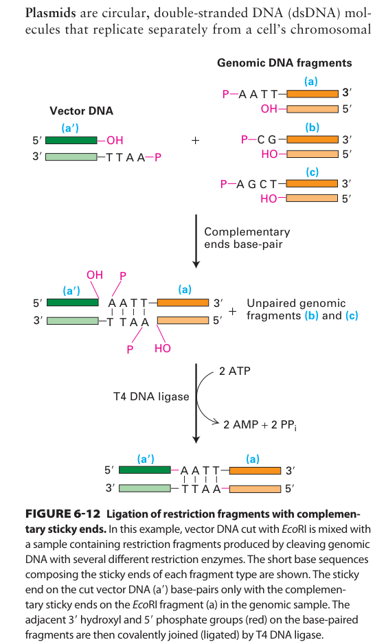
  <figcaption>图 6-12 具有互补粘性末端的限制性片段的连接。在此示例中，用 EcoRI 切割的载体 DNA 与含有用几种不同限制性内切酶切割基因组 DNA 产生的限制性片段的样品混合。展示了每种片段类型的粘性末端组成的短碱基序列。切割载体 DNA 的粘性末端（a'）仅与基因组样品中 EcoRI 片段（a）的互补粘性末端碱基配对。然后，碱基配对片段上相邻的 3' 羟基和 5' 磷酸基团（红色）通过 T4 DNA 连接酶共价连接（连接）。</figcaption>
  <table class="glossary"><caption>图内标签对照</caption>
  <tr><td class="gl-en">Plasmids</td><td class="gl-zh">质粒</td></tr>
  <tr><td class="gl-en">Vector DNA</td><td class="gl-zh">载体DNA</td></tr>
  <tr><td class="gl-en">Genomic DNA fragments</td><td class="gl-zh">基因组DNA片段</td></tr>
  <tr><td class="gl-en">T4 DNA ligase</td><td class="gl-zh">T4 DNA连接酶</td></tr>
  <tr><td class="gl-en">Complementary ends base-pair</td><td class="gl-zh">互补末端碱基配对</td></tr>
  <tr><td class="gl-en">Sticky ends</td><td class="gl-zh">粘性末端</td></tr>
  <tr><td class="gl-en">Ligation</td><td class="gl-zh">连接</td></tr>
  <tr><td class="gl-en">Restriction fragments</td><td class="gl-zh">限制性片段</td></tr>
  <tr><td class="gl-en">ATP</td><td class="gl-zh">ATP（腺苷三磷酸）</td></tr>
  <tr><td class="gl-en">AMP</td><td class="gl-zh">AMP（腺苷一磷酸）</td></tr>
  </table>
</figure>
<p>DNA。这些染色体外DNA天然存在于细菌和低等真核细胞（如酵母）中，与宿主细胞以共生关系存在。与宿主细胞染色体DNA一样，质粒DNA在每次细胞分裂前都会复制。在细胞分裂过程中，质粒DNA的拷贝分配到每个子细胞，确保质粒在宿主细胞的连续世代中持续增殖。</p>
<p>重组DNA技术中最常用的质粒是在大肠杆菌中复制的质粒。研究人员已经对这些质粒进行了工程化改造，以优化其作为DNA克隆载体的用途。例如，从天然存在的大肠杆菌质粒中去除不需要的部分，可得到周长约1.2–3 kb的质粒载体，其包含DNA克隆必需的三个区域：复制起点（ORI）；一个允许选择的标记，通常是药物抗性基因；以及一个可以插入外源DNA片段的区域（图6-13）。</p>
<p>图6-14概述了使用大肠杆菌质粒载体克隆DNA片段的一般步骤。当大肠杆菌细胞与重组载体DNA混合并受到热激等应激处理时，一小部分细胞会摄取质粒DNA，这一过程称为转化。通常，大约10,000个细胞中有1个会掺入一个质粒DNA分子，从而被转化。罕见的转化细胞可以通过使用选择标记轻松筛选出来。例如，如果质粒携带赋予抗生素氨苄青霉素抗性的基因，则可以通过在含氨苄青霉素的培养基中培养来筛选转化细胞。所有由初始转化细胞产生的抗生素抗性子代细胞都将含有具有相同插入DNA的质粒。由于菌落中的所有细胞都源自单个转化的亲本细胞，</p>
<p>O</p>
<p>R</p>
<p>I</p>
<figure id="fig-6-13">
  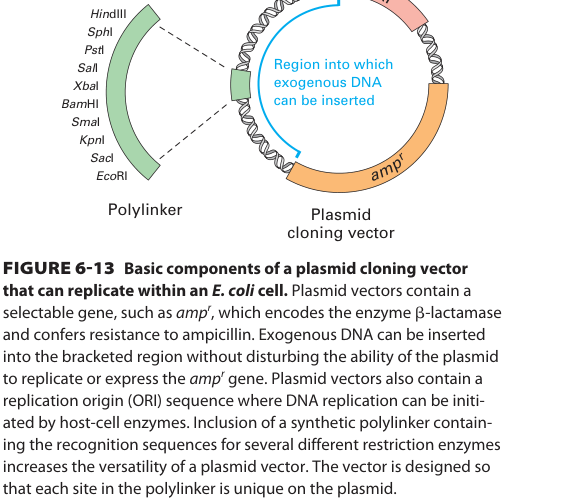
  <figcaption>图 6-13 能在大肠杆菌细胞内复制的质粒克隆载体的基本组件。质粒载体包含一个可选择基因，如 amp^r，它编码 β-内酰胺酶并赋予氨苄青霉素抗性。外源 DNA 可以插入到括号标记的区域中，而不干扰质粒复制或表达 amp^r 基因的能力。质粒载体还包含一个复制起点（ORI）序列，宿主细胞酶可以在该处启动 DNA 复制。包含一个合成的多接头（含有几种不同限制性内切酶的识别序列）增加了质粒载体的通用性。载体设计使得多接头中的每个位点在质粒上是唯一的。</figcaption>
  <table class="glossary"><caption>图内标签对照</caption>
  <tr><td class="gl-en">Plasmid cloning vector</td><td class="gl-zh">质粒克隆载体</td></tr>
  <tr><td class="gl-en">Polylinker</td><td class="gl-zh">多接头</td></tr>
  <tr><td class="gl-en">Exogenous DNA</td><td class="gl-zh">外源DNA</td></tr>
  <tr><td class="gl-en">BamHI</td><td class="gl-zh">BamHI（限制酶）</td></tr>
  <tr><td class="gl-en">EcoRI</td><td class="gl-zh">EcoRI（限制酶）</td></tr>
  <tr><td class="gl-en">HindIII</td><td class="gl-zh">HindIII（限制酶）</td></tr>
  <tr><td class="gl-en">KpnI</td><td class="gl-zh">KpnI（限制酶）</td></tr>
  <tr><td class="gl-en">PstI</td><td class="gl-zh">PstI（限制酶）</td></tr>
  <tr><td class="gl-en">SacI</td><td class="gl-zh">SacI（限制酶）</td></tr>
  <tr><td class="gl-en">SalI</td><td class="gl-zh">SalI（限制酶）</td></tr>
  <tr><td class="gl-en">SmaI</td><td class="gl-zh">SmaI（限制酶）</td></tr>
  <tr><td class="gl-en">SphI</td><td class="gl-zh">SphI（限制酶）</td></tr>
  <tr><td class="gl-en">XbaI</td><td class="gl-zh">XbaI（限制酶）</td></tr>
  <tr><td class="gl-en">Selectable marker</td><td class="gl-zh">选择标记</td></tr>
  <tr><td class="gl-en">Ampicillin resistance</td><td class="gl-zh">氨苄青霉素抗性</td></tr>
  <tr><td class="gl-en">Replication origin</td><td class="gl-zh">复制起点</td></tr>
  <tr><td class="gl-en">β-lactamase</td><td class="gl-zh">β-内酰胺酶</td></tr>
  </table>
</figure>
<p>它们构成一个细胞克隆，插入亲本质粒的初始DNA片段被称为克隆DNA或DNA克隆。</p>
<p>通过添加多接头，大肠杆菌质粒载体的多功能性得到增强。多接头是一个合成生成的序列，包含多个不同限制位点各一个拷贝，这些位点在质粒序列的其他位置不存在（见图6-13）。通常，用两种不同的限制酶切割多接头，以准备接受用对应于相同两种酶的两种不同粘性末端制备的DNA片段。这种策略消除了不需要的副产物，如切割后的质粒载体重新闭合，</p>
<p>Plasmid</p>
<p>vector</p>
<p>+</p>
<p>DNA fragment to be cloned</p>
<p>r</p>
<p>p</p>
<p>m</p>
<p>a</p>
<p>Enzymatically insert DNA into plasmid vector</p>
<p>Recombinant</p>
<p>plasmid</p>
<p>r</p>
<p>p</p>
<p>m</p>
<p>a</p>
<p>Mix E. coli with plasmids in presence of CaCl2; heat-pulse</p>
<p>Culture on nutrient agar plates containing ampicillin</p>
<p>E. coli chromosome</p>
<p>Transformed cell survives</p>
<p>Cells that do not take up plasmid die on ampicillin plates</p>
<p>Plasmid replication</p>
<p>Cell multiplication</p>
<p>Colony of cells, each containing copies of the same recombinant plasmid</p>
<p>并大大提高了克隆DNA片段的效率。</p>
<p>质粒克隆载体可用于增殖长达约20 kb的DNA片段，但比这更长的片段无法在一个细胞分裂周期内可靠地复制。对于某些目的，如分离和操作人类基因组的大片段，需要克隆长达数兆碱基[1兆碱基（Mb）= 100万个碱基对]的DNA片段。为此，已经开发了称为BAC（细菌人工染色体）的专用质粒载体。一种BAC使用源自大肠杆菌内源质粒（称为F因子）的复制起点。F因子及其衍生的克隆载体可以在每个大肠杆菌细胞中以单拷贝稳定维持，即使它们含有长达约2 Mb的插入序列。BAC文库的构建需要用于大片段DNA分离、连接和转化的特殊方法，因为大于约20 kb的DNA片段即使通过标准操作（如移液）也极易发生机械断裂。</p>
<p>Yeast Genomic Libraries Can Be Constructed with Shuttle Vectors and Screened by Functional Complementation</p>
<figure id="fig-6-14">
  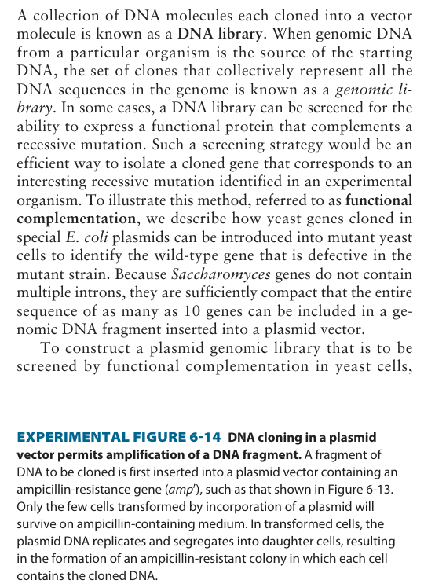
  <figcaption>实验图 6-14 质粒载体中的 DNA 克隆允许 DNA 片段的扩增。待克隆的 DNA 片段首先插入到含有氨苄青霉素抗性基因（amp^r）的质粒载体中，如图 6-13 所示。只有少数通过掺入质粒而被转化的细胞能在含氨苄青霉素的培养基上存活。在转化细胞中，质粒 DNA 复制并分离到子细胞中，导致形成氨苄青霉素抗性菌落，其中每个细胞都含有克隆的 DNA。</figcaption>
  <table class="glossary"><caption>图内标签对照</caption>
  <tr><td class="gl-en">DNA library</td><td class="gl-zh">DNA文库</td></tr>
  <tr><td class="gl-en">Genomic library</td><td class="gl-zh">基因组文库</td></tr>
  <tr><td class="gl-en">Functional complementation</td><td class="gl-zh">功能互补</td></tr>
  <tr><td class="gl-en">Saccharomyces</td><td class="gl-zh">酿酒酵母（Saccharomyces）</td></tr>
  <tr><td class="gl-en">E. coli</td><td class="gl-zh">大肠杆菌（E. coli）</td></tr>
  <tr><td class="gl-en">Plasmid vector</td><td class="gl-zh">质粒载体</td></tr>
  <tr><td class="gl-en">Ampicillin resistance</td><td class="gl-zh">氨苄青霉素抗性</td></tr>
  <tr><td class="gl-en">DNA cloning</td><td class="gl-zh">DNA克隆</td></tr>
  <tr><td class="gl-en">Recessive mutation</td><td class="gl-zh">隐性突变</td></tr>
  <tr><td class="gl-en">Introns</td><td class="gl-zh">内含子</td></tr>
  </table>
</figure>
<p>质粒载体必须能够在大肠杆菌细胞和酵母细胞中复制。这种能够在两种不同宿主中增殖的载体称为穿梭载体。典型的酵母穿梭载体的结构如图6-15a所示。该载体包含允许在大肠杆菌中克隆DNA片段的基本元件，以及其在酵母中增殖所需的序列。</p>
<p>为了增加酵母基因组所有区域被成功克隆并在质粒文库中体现的概率，通常仅对基因组DNA进行部分消化，以产生约10 kb的重叠限制片段。然后将这些片段连接到穿梭载体中，</p>
<p>Polylinker</p>
<p>(a)</p>
<p>ORI</p>
<p>URA3</p>
<p>Shuttle vector</p>
<p>ampr</p>
<p>ARS</p>
<p>CEN</p>
<p>(b)</p>
<p>Yeast genomic DNA</p>
<p>Shuttle vector Partially digest with Sau3A</p>
<p>Cut with BamHI</p>
<p>Ligate</p>
<p>Transform E. coli Screen for ampicillin resistance</p>
<p>Isolate and pool recombinant plasmids from 105 transformed E. coli colonies</p>
<p>Assay yeast genomic library by functional complementation</p>
<p>该载体的多接头已被一种限制酶切割，产生与酵母DNA片段上的粘性末端互补的粘性末端（图6-15b）。由于酵母DNA的10 kb限制片段被随机掺入穿梭载体中，因此至少需要10^5个大肠杆菌菌落（每个含有特定的重组穿梭载体），以确保酵母DNA的每个区域都有很高的概率在文库中至少被代表一次。</p>
<p>图6-16概述了如何筛选这样的酵母基因组文库，以分离与本章前面提到的温度敏感cdc突变之一对应的野生型基因。起始酵母菌株是一个双重突变体，由于ura3−突变而需要尿嘧啶才能生长，并且由于cdc28突变而具有温度敏感性，该突变通过其表型被鉴定（见图6-6b）。从酵母基因组文库中分离的重组质粒与酵母细胞在促进细胞被外源DNA转化的条件下混合。由于转化的酵母细胞携带质粒上的野生型URA3基因拷贝，可以通过它们在不含尿嘧啶的条件下生长的能力来筛选。通常，大约20个培养皿，每个含有约500个酵母转化子，足以代表整个酵母基因组。这组酵母转化子可以在23°C（允许cdc28突变体生长的温度）下维持。然后将20个平板上的整个集合转移到复制平板上，在36°C（cdc突变体的非允许温度）下维持。携带表达野生型CDC28基因拷贝的重组质粒的酵母菌落将能够在36°C下生长。一旦鉴定出耐温的酵母菌落，就可以从培养的酵母细胞中提取质粒DNA并通过DNA测序进行分析，这是我们稍后将讨论的主题。</p>
<p>cDNA Libraries Represent the Sequences of Protein-Coding Genes</p>
<figure id="fig-6-15">
  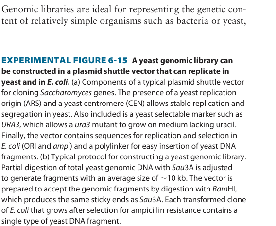
  <figcaption>实验图 6-15 酵母基因组文库可以在能在大肠杆菌和酵母中复制的质粒穿梭载体中构建。（a）用于克隆基因的酿酒酵母典型质粒穿梭载体的组件。酵母复制起点（ARS）和酵母着丝粒（CEN）的存在允许在酵母中稳定复制和分离。还包括一个酵母可选择标记，如 URA3，它允许 ura3 突变体在缺乏尿嘧啶的培养基上生长。最后，载体含有在大肠杆菌中复制和选择的序列（ORI 和 amp^r）以及一个便于插入酵母 DNA 片段的多接头。（b）构建酵母基因组文库的典型方案。用 Sau3A 对总酵母基因组 DNA 进行部分消化，调整以产生平均大小约 10 kb 的片段。载体通过用 BamHI 消化来准备接受基因组片段，BamHI 产生与 Sau3A 相同的粘性末端。在选择氨苄青霉素抗性后生长的每个转化大肠杆菌克隆含有单一类型的酵母 DNA 片段。</figcaption>
  <table class="glossary"><caption>图内标签对照</caption>
  <tr><td class="gl-en">Genomic library</td><td class="gl-zh">基因组文库</td></tr>
  <tr><td class="gl-en">Shuttle vector</td><td class="gl-zh">穿梭载体</td></tr>
  <tr><td class="gl-en">Yeast replication origin</td><td class="gl-zh">酵母复制起点</td></tr>
  <tr><td class="gl-en">Yeast centromere</td><td class="gl-zh">酵母着丝粒</td></tr>
  <tr><td class="gl-en">Selectable marker</td><td class="gl-zh">选择标记</td></tr>
  <tr><td class="gl-en">URA3</td><td class="gl-zh">URA3（选择标记）</td></tr>
  <tr><td class="gl-en">Polylinker</td><td class="gl-zh">多接头</td></tr>
  <tr><td class="gl-en">Partial digestion</td><td class="gl-zh">部分消化</td></tr>
  <tr><td class="gl-en">Sau3A</td><td class="gl-zh">Sau3A（限制酶）</td></tr>
  <tr><td class="gl-en">BamHI</td><td class="gl-zh">BamHI（限制酶）</td></tr>
  </table>
</figure>
<p>Library of yeast genomic DNA carrying URA3 selective marker</p>
<p>23 °C</p>
<p>Temperature-sensitive cdc-mutant yeast; ura3 - (requires uracil)</p>
<p>Transform yeast by treatment with LiOAC, PEG, and heat shock</p>
<p>Plate and incubate at permissive temperature on medium lacking uracil</p>
<p>Only colonies</p>
<p>carrying a URA3 marker</p>
<p>Replica-plate and incubate at nonpermissive temperature</p>
<p>are able to</p>
<p>grow</p>
<p>23 °C</p>
<p>但对高等真核生物存在一定的实验困难。首先，真核生物的基因通常含有广泛的内含子序列，因此可能太大而无法完整地插入质粒载体。结果，单个基因的序列被分割开来，分布在多个克隆中。此外，基因组DNA中内含子和长基因间区域的存在往往使识别实际编码蛋白质序列的基因重要部分变得困难。例如，人类基因组中只有约1.5%代表蛋白质编码基因序列。因此，对于许多研究来说，细胞mRNA（缺乏基因组DNA中存在的非编码区）是生成DNA文库更有用的起始材料。在这种方法中，合成mRNA的DNA拷贝（称为互补DNA，cDNA），并将其克隆到质粒载体中。由此产生的大量cDNA克隆集合，代表细胞类型中表达的所有mRNA，称为cDNA文库。</p>
<p>制备cDNA文库的第一步是从目标细胞类型或组织中分离总mRNA。由于mRNA具有poly(A)尾巴，通过使用连接有短链胸苷酸（oligo-dT）的基质，可以很容易地将它们与细胞提取物中含量多得多的rRNA和tRNA分离。从细胞mRNA混合物制备cDNA文库的一般步骤如图6-17所示。使用逆转录病毒中发现的逆转录酶，从oligo-dT引物开始合成与每个mRNA分子互补的DNA链（步骤1和2）。得到的cDNA-mRNA杂交分子通过几个步骤转化为双链cDNA分子，对应于原始制备中的所有mRNA分子（步骤3–5）。每个双链cDNA在一端含有oligo-dC⋅oligo-dG双链区域，在另一端含有oligo-dT⋅oligo-dA双链区域。对cDNA进行甲基化可保护其免受后续限制酶切割（步骤6）。</p>
<figure id="fig-6-16">
  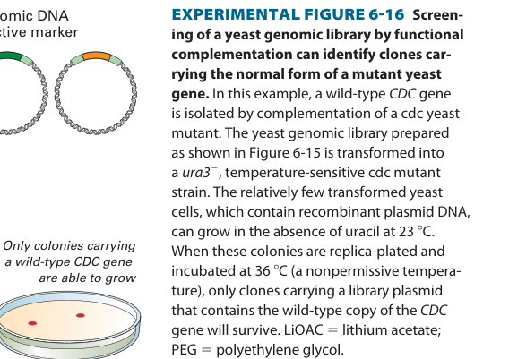
  <figcaption>实验图 6-16 通过功能互补筛选酵母基因组文库可以鉴定携带突变酵母 CDC 基因正常形式的克隆。在此示例中，通过互补 cdc 酵母突变体来分离野生型 CDC 基因。将如图 6-15 制备的酵母基因组文库转化到 ura3^-、温度敏感 cdc 突变菌株中。相对较少的转化酵母细胞（含有重组质粒 DNA）可以在 23°C 下在缺乏尿嘧啶的培养基上生长。当将这些菌落影印接种并在 36°C（非许可温度）下孵育时，只有携带含有野生型 CDC 基因拷贝的文库质粒的克隆能够存活。LiOAC = 醋酸锂；PEG = 聚乙二醇。</figcaption>
  <table class="glossary"><caption>图内标签对照</caption>
  <tr><td class="gl-en">Selective marker</td><td class="gl-zh">选择标记</td></tr>
  <tr><td class="gl-en">CDC gene</td><td class="gl-zh">CDC基因</td></tr>
  <tr><td class="gl-en">Functional complementation</td><td class="gl-zh">功能互补</td></tr>
  <tr><td class="gl-en">Temperature-sensitive</td><td class="gl-zh">温度敏感</td></tr>
  <tr><td class="gl-en">Replica-plating</td><td class="gl-zh">影印接种</td></tr>
  <tr><td class="gl-en">Lithium acetate</td><td class="gl-zh">醋酸锂</td></tr>
  <tr><td class="gl-en">Polyethylene glycol</td><td class="gl-zh">聚乙二醇（PEG）</td></tr>
  </table>
</figure>
<p>36 °C</p>
<p>为了准备双链cDNA进行克隆，使用来自噬菌体T4的DNA连接酶将含有特定限制酶识别位点的短双链DNA分子（称为接头）连接到cDNA的两端（图6-17，步骤7）。如前所述，这种连接酶可以连接缺乏粘性末端的"平末端"双链DNA分子。然后用对连接接头特异性的限制酶处理得到的分子，产生具有粘性末端的cDNA分子（步骤8a）。在另一个步骤中，用相同的限制酶处理质粒DNA以产生适当的粘性末端（步骤8b）。</p>
<p>然后将质粒载体和cDNA集合（都含有互补的粘性末端）混合，并通过DNA连接酶共价连接（图6-17，步骤9）。将得到的DNA分子引入大肠杆菌细胞以产生单个克隆；每个克隆携带源自单个mRNA的cDNA。</p>
<p>由于不同基因以非常不同的速率转录，对应于丰度转录基因的cDNA克隆将在cDNA文库中被代表多次，而对应于稀有转录基因的cDNA将极为罕见或根本不存在。为了有合理的机会包含对应于慢转录基因的克隆，哺乳动物cDNA文库必须含有10^6–10^7个单独的重组克隆。</p>
<p>The Polymerase Chain Reaction Amplifies a Specific DNA Sequence from a Complex Mixture</p>
<p>如果已知特定DNA区域末端的核苷酸序列，则可以通过聚合酶链反应（PCR）直接扩增中间片段。这里我们描述基本的PCR技术及其三种应用场景。</p>
<p>mRNA 5 A A A ....An 3 3 poly(A) tail</p>
<p>Hybridize mRNA with oligo-dT primer</p>
<p>1</p>
<p>T T T T 5 Oligo-dT primer</p>
<p>A A A A T T T T 5</p>
<p>2</p>
<p>Reverse-transcribe RNA into cDNA</p>
<p>A A A A 3 T T T T 5</p>
<p>Remove RNA with alkali Add poly(dG) tail</p>
<p>3</p>
<p>Single-stranded cDNA</p>
<p>3</p>
<p>G G G G</p>
<p>T T T T 5</p>
<p>Hybridize with oligo-dC primer</p>
<p>4</p>
<p>5 3</p>
<p>C C C C</p>
<p>G G G G</p>
<p>T T T T 5</p>
<p>Synthesize complementary strand</p>
<p>5</p>
<p>5 3</p>
<p>Double-stranded cDNA</p>
<p>A A A A 3 T T T T 5 C C C C</p>
<p>G G G G</p>
<p>Protect cDNA by methylation at EcoRI sites</p>
<p>6</p>
<p>CH3</p>
<p>5 3</p>
<p>A A A A 3</p>
<p>T T T T 5 C C C C</p>
<p>G G G G</p>
<p>CH3</p>
<p>EcoRI linker</p>
<p>Ligate cDNA to restriction site linkers</p>
<p>7</p>
<p>G A A T T C C T T A A G</p>
<p>G A A T T C C T T A A G</p>
<p>C C C C G G G G</p>
<p>T T T T A A A A G A A T T C</p>
<p>C T T A A G</p>
<p>8a</p>
<p>Cleave with EcoRI</p>
<p>G T T T T C T T A A A A A A G</p>
<p>C C C C G G G G</p>
<p>A A T T C</p>
<p>Ligate to plasmid Sticky end</p>
<p>9</p>
<p>Transform E. coli Select for ampr</p>
<p>10</p>
<p>Individual clones</p>
<p>PCR依赖于以受控方式交替变性（熔解）双链DNA分子和杂交互补单链的能力。如图6-18所示，典型的PCR程序从</p>
<figure id="fig-6-17">
  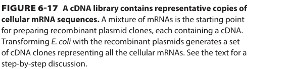
  <figcaption>图 6-17 cDNA 文库含有细胞 mRNA 序列的代表性拷贝。以 mRNA 混合物为起点制备重组质粒克隆，每个克隆含有一个 cDNA。用重组质粒转化大肠杆菌产生一组代表所有细胞 mRNA 的 cDNA 克隆。逐步讨论见正文。</figcaption>
  <table class="glossary"><caption>图内标签对照</caption>
  <tr><td class="gl-en">cDNA library</td><td class="gl-zh">cDNA文库</td></tr>
  <tr><td class="gl-en">mRNA</td><td class="gl-zh">mRNA（信使RNA）</td></tr>
  <tr><td class="gl-en">Reverse transcriptase</td><td class="gl-zh">逆转录酶</td></tr>
  <tr><td class="gl-en">Recombinant plasmid</td><td class="gl-zh">重组质粒</td></tr>
  <tr><td class="gl-en">cDNA clone</td><td class="gl-zh">cDNA克隆</td></tr>
  </table>
</figure>
<p>Plasmid</p>
<p>vector</p>
<p>r</p>
<p>p</p>
<p>m</p>
<p>a</p>
<p>8b</p>
<p>Cut with EcoRI</p>
<p>G G</p>
<p>A A T T C</p>
<p>C T T A A</p>
<p>Plasmid with</p>
<p>sticky ends</p>
<p>ampr</p>
<p>在95°C下将DNA样品热变性为单链开始。接下来，将与目标DNA片段（目标序列）3′端互补的两种合成寡核苷酸以极大过量加入变性DNA中，</p>
<p>Denaturation of DNA Annealing of primers</p>
<p>Cycle 1</p>
<p>Elongation of primers</p>
<p>Denaturation of DNA Annealing of primers</p>
<p>Cycle 2</p>
<p>Elongation of primers</p>
<p>Denaturation of DNA Annealing of primers</p>
<p>Cycle 3</p>
<p>Elongation of primers</p>
<p>Cycles 4, 5, 6, etc.</p>
<p>并将温度降至50–60°C。这些特定的寡核苷酸以非常高的浓度存在，与DNA样品中的互补序列杂交，而样品DNA的长链由于浓度相对较低而保持分离。杂交的寡核苷酸随后在脱氧核苷酸（dNTPs）和耐热DNA聚合酶（如来自水生栖热菌（Thermus aquaticus，一种生活在温泉中的细菌）的聚合酶）存在下作为DNA链合成的引物。这种酶称为Taq聚合酶，可以</p>
<figure id="fig-6-18">
  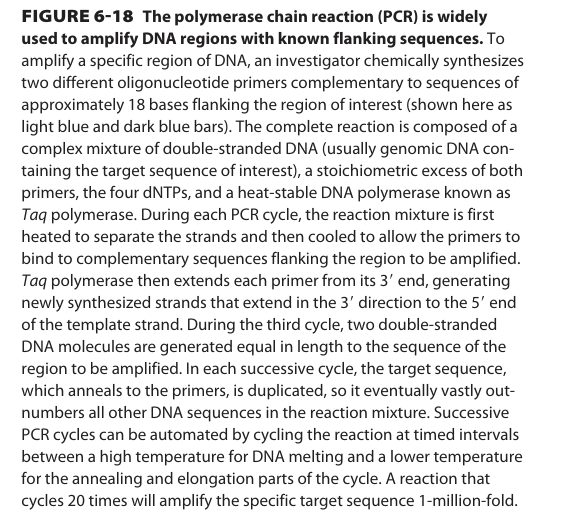
  <figcaption>图 6-18 聚合酶链式反应（PCR）广泛用于扩增具有已知侧翼序列的 DNA 区域。为了扩增特定的 DNA 区域，研究者化学合成两个不同的寡核苷酸引物，它们与目标区域两侧约 18 个碱基的序列互补（此处显示为浅蓝色和深蓝色条）。完整的反应由以下成分组成：双链 DNA（通常是含有目标序列的基因组 DNA）、化学计量过量的两种引物、四种 dNTP 和一种称为 Taq 聚合酶的耐热 DNA 聚合酶。在每个 PCR 循环中，首先加热反应混合物以分离 DNA 链，然后冷却以允许引物与待扩增区域两侧的互补序列结合。然后 Taq 聚合酶从每个引物的 3' 端延伸，产生新合成的链，这些链从 3' 方向延伸到模板链的 5' 端。在第三个循环中，产生两个双链 DNA 分子，其长度等于待扩增区域的序列。在每个连续循环中，与引物退火的目标序列被复制，因此它最终在数量上远远超过反应混合物中的所有其他 DNA 序列。连续的 PCR 循环可以通过在定时间隔内在高温（DNA 解链）和较低温度（循环的退火和延伸部分）之间循环反应来自动化。循环 20 次的反应将把特定目标序列扩增 100 万倍。</figcaption>
  <table class="glossary"><caption>图内标签对照</caption>
  <tr><td class="gl-en">Polymerase chain reaction</td><td class="gl-zh">聚合酶链式反应（PCR）</td></tr>
  <tr><td class="gl-en">PCR</td><td class="gl-zh">PCR</td></tr>
  <tr><td class="gl-en">Oligonucleotide primers</td><td class="gl-zh">寡核苷酸引物</td></tr>
  <tr><td class="gl-en">dNTPs</td><td class="gl-zh">dNTPs（脱氧核苷三磷酸）</td></tr>
  <tr><td class="gl-en">Taq polymerase</td><td class="gl-zh">Taq聚合酶</td></tr>
  <tr><td class="gl-en">DNA melting</td><td class="gl-zh">DNA熔解</td></tr>
  <tr><td class="gl-en">Annealing</td><td class="gl-zh">退火</td></tr>
  <tr><td class="gl-en">Elongation</td><td class="gl-zh">延伸</td></tr>
  <tr><td class="gl-en">Amplification</td><td class="gl-zh">扩增</td></tr>
  </table>
</figure>
<p>即使在加热到95°C后仍保持活性，并可在高达72°C的温度下延伸引物。合成完成后，将整个混合物重新加热到95°C以使新形成的DNA双链变性。再次降温后，由于仍存在过量引物，另一轮合成就开始了。重复的变性（加热）循环，随后是杂交和合成（冷却），迅速扩增目标序列。在每个循环中，引物位点之间序列的拷贝数翻倍；因此，目标序列呈指数增长——20个循环后约增加100万倍——而原始DNA样品中的所有其他序列保持未扩增。</p>
<p>Direct Isolation of a Specific Segment of Genomic DNA 对于已对所有或大部分基因组进行测序的生物体，从总基因组DNA开始的PCR扩增通常是获得特定目标DNA区域进行克隆的最简单方法。在PCR的这种应用中，设计两个寡核苷酸引物与目标基因组区域两侧的序列杂交，并包含被特定限制酶识别的序列（图6-19）。要使寡核苷酸可用作PCR引物，它必须足够长，使其序列在基因组中唯一出现。对于大多数目的，含有约20个核苷酸的寡核苷酸满足这一条件。任意给定的20个核苷酸序列在每4^20（∼10^12）个核苷酸中偶然出现一次，因此通常可以鉴定出目标序列两侧的两个特定20个核苷酸序列，它们各自在基因组中仅出现一次。</p>
<p>在约20个PCR循环扩增目标序列后，用适当的限制酶切割</p>
<p>Region to be amplified</p>
<p>5</p>
<p>3</p>
<p>5 3</p>
<p>5 3</p>
<p>G G A T C C</p>
<p>DNA synthesis</p>
<p>Primer 1</p>
<p>Round 1</p>
<p>3</p>
<p>5</p>
<p>5</p>
<p>3</p>
<p>G G A T C C</p>
<p>3 5</p>
<p>T T C G A A</p>
<p>DNA synthesis</p>
<p>Primer 2 Round 2</p>
<p>3</p>
<p>5</p>
<p>G G A T C C</p>
<p>3</p>
<p>5</p>
<p>T T C G A A</p>
<p>C C T A G G G G A T C C</p>
<p>Primer 1 5 3</p>
<p>DNA synthesis</p>
<p>Round 3</p>
<p>A A G C T T 3</p>
<p>5</p>
<p>T T C G A A</p>
<p>C C T A G G G G A T C C</p>
<p>5</p>
<p>3</p>
<p>BamHI site HindIII site</p>
<p>Continue for ∼ 20 PCR cycles</p>
<p>Cut with restriction enzymes</p>
<p>3 3</p>
<p>A G A T C C 5 G 5 T A G C T</p>
<p>Sticky end Sticky end</p>
<p>Ligate to plasmid vector with sticky ends</p>
<p>产生粘性末端，使片段能够高效连接到其多接头已被相同限制酶切割的质粒载体上。得到的重组质粒（都携带相同的基因组DNA片段）然后可以在大肠杆菌细胞中克隆。通过PCR的某些改进，即使长度超过10 kb的DNA片段也可以用这种方式扩增和克隆。请注意，这种方法不需要克隆大量来自基因组DNA的限制片段并随后筛选以鉴定特定目标片段。实际上，PCR方法颠倒了这种传统方法，从而避免了其最繁琐的方面。PCR方法可用于分离基因序列，以便以后述各种有用方式进行操作。此外，PCR方法可用于从突变生物体中分离基因序列，以确定它们与野生型有何不同。</p>
<figure id="fig-6-19">
  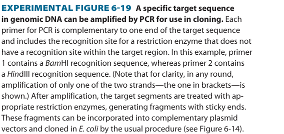
  <figcaption>实验图 6-19 基因组 DNA 中的特定目标序列可以通过 PCR 扩增用于克隆。每个 PCR 引物与目标序列的一端互补，并包含一个限制性内切酶的识别位点，该酶在目标区域内没有识别位点。在此示例中，引物 1 包含 BamHI 识别序列，而引物 2 包含 HindIII 识别序列。（注意，为清晰起见，在任何一轮中，仅显示两条链中一条链的扩增——括号中的那条链。）扩增后，用适当的限制性内切酶处理目标片段，产生具有粘性末端的片段。这些片段可以按常规程序（见图 6-14）掺入互补的质粒载体中并在大肠杆菌中克隆。</figcaption>
  <table class="glossary"><caption>图内标签对照</caption>
  <tr><td class="gl-en">PCR</td><td class="gl-zh">PCR</td></tr>
  <tr><td class="gl-en">Target sequence</td><td class="gl-zh">靶序列</td></tr>
  <tr><td class="gl-en">Primer</td><td class="gl-zh">引物</td></tr>
  <tr><td class="gl-en">Restriction enzyme</td><td class="gl-zh">限制性内切酶</td></tr>
  <tr><td class="gl-en">BamHI</td><td class="gl-zh">BamHI（限制酶）</td></tr>
  <tr><td class="gl-en">HindIII</td><td class="gl-zh">HindIII（限制酶）</td></tr>
  <tr><td class="gl-en">Sticky ends</td><td class="gl-zh">粘性末端</td></tr>
  <tr><td class="gl-en">Cloning</td><td class="gl-zh">克隆</td></tr>
  </table>
</figure>
<p>PCR方法的一种变体允许从细胞mRNA中PCR扩增特定的cDNA序列。这种方法称为逆转录PCR（RT-PCR），从前面描述的从细胞mRNA集合中分离cDNA的相同程序开始。通常，使用与mRNA的3′ poly(A)尾巴杂交的oligo-dT引物作为逆转录酶合成cDNA第一链的引物。然后可以通过使用两个寡核苷酸引物进行PCR扩增，从这种复杂的cDNA混合物中分离出特定的cDNA，这两个引物设计为与相应mRNA的5′和3′端序列匹配。如前所述，这些引物可以设计为包含限制位点，以促进将扩增的cDNA插入合适的质粒载体。</p>
<p>RT-PCR可以以准确测定特定细胞mRNA起始量的方式进行。要进行定量RT-PCR，在特定mRNA序列扩增进行时，测定每个扩增循环产生的双链DNA序列的量。通过从这些量进行外推，可以获得mRNA序列起始量的估计值。这种在组织或整个生物体上使用针对目标基因的引物进行的定量RT-PCR分析，提供了追踪基因表达变化的最准确方法之一。</p>
<p>Tagging of Genes by Insertion Mutations PCR的另一个有用应用是从突变菌株的基因组DNA中扩增"标记"基因。这种方法比通过功能互补筛选文库（见图6-16）来鉴定与特定突变表型相关的基因更为简单。</p>
<p>这种PCR应用的关键是能够通过将已知DNA序列插入实验生物体的基因组中来产生突变。这种插入突变可以通过使用DNA转座子来产生，转座子可以从一个染色体位点移动（或转座）</p>
<p>到另一个。如第8章中更详细讨论的，这些DNA序列天然存在于大多数生物体的基因组中，如果它们转座到蛋白质编码区，可能会导致功能丧失突变。</p>
<p>例如，研究人员已经改造了果蝇的一种DNA转座子（称为P元件），以优化其在实验性产生插入突变中的用途。一旦证明P元件的插入导致具有有趣表型的突变，与插入位点相邻的基因组序列可以通过标准PCR方案的一种变体来扩增，该变体使用与已知P元件序列互补的合成引物，但允许扩增未知的邻近序列。图6-20描述了这样一种方法，首先用限制酶切割含有P元件插入的果蝇基因组DNA，该酶在P元件DNA内进行单次切割。得到的切割DNA片段集合在用DNA连接酶处理后产生环状分子，其中一些含有P元件DNA。然后可以使用与P元件序列匹配并向相反方向延伸的引物通过PCR扩增P元件侧翼的染色体区域。然后可以使用第三个DNA引物确定所得扩增片段的序列。鉴定P元件插入位点的关键序列是</p>
<p>Transposon</p>
<p>Restriction sites:</p>
<p>Cut with restriction enzyme</p>
<p>Ligate to circularize</p>
<p>PCR primers</p>
<p>PCR amplification with primers to transposon</p>
<p>Sequencing</p>
<p>primer</p>
<p>P元件末端与基因组序列之间的连接处。总体而言，这种方法避免了克隆大量DNA片段并筛选以检测与目标突变基因对应的克隆DNA。</p>
<figure id="fig-6-20">
  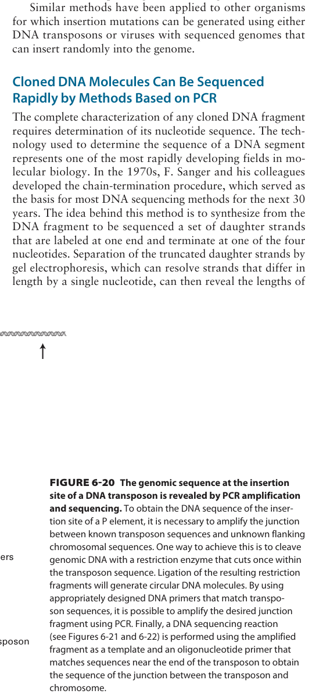
  <figcaption>图 6-20 DNA 转座子插入位点的基因组序列通过 PCR 扩增和测序来揭示。为了获得 P 元件插入位点的 DNA 序列，需要扩增已知转座子序列与未知侧翼染色体序列之间的连接处。实现这一目标的一种方法是使用在转座子序列内切割一次的限制性内切酶切割基因组 DNA。连接所得的限制性片段将产生环状 DNA 分子。通过使用适当设计的与转座子序列匹配的 DNA 引物，可以使用 PCR 扩增所需的连接片段。最后，使用扩增的片段作为模板，以及一个与转座子末端附近序列匹配的寡核苷酸引物，进行 DNA 测序反应（见图 6-21 和 6-22），以获得转座子与染色体之间连接处的序列。</figcaption>
  <table class="glossary"><caption>图内标签对照</caption>
  <tr><td class="gl-en">DNA transposons</td><td class="gl-zh">DNA转座子</td></tr>
  <tr><td class="gl-en">Chain-termination procedure</td><td class="gl-zh">链终止法</td></tr>
  <tr><td class="gl-en">Gel electrophoresis</td><td class="gl-zh">凝胶电泳</td></tr>
  <tr><td class="gl-en">DNA sequencing</td><td class="gl-zh">DNA测序</td></tr>
  <tr><td class="gl-en">P element</td><td class="gl-zh">P元件</td></tr>
  <tr><td class="gl-en">Insertion mutation</td><td class="gl-zh">插入突变</td></tr>
  <tr><td class="gl-en">Sanger sequencing</td><td class="gl-zh">桑格测序</td></tr>
  <tr><td class="gl-en">Nucleotide</td><td class="gl-zh">核苷酸</td></tr>
  </table>
</figure>
<p>所有以G、A、T或C结尾的链。从这些不同长度的链集合中，可以确定原始DNA片段的核苷酸序列。Sanger法经历了许多改进，现在可以完全自动化，但由于每个DNA片段需要单独的测序反应，这种方法产生新DNA序列的总体速率受到一次可以进行的反应总数的限制。</p>
<p>测序技术的突破发生在当设计出方法允许单台测序仪器通过将数十亿个测序反应定位在固体基质表面的微小簇中来同时进行这些反应时。2007年，当这些所谓的新一代</p>
<p>Ligate linkers</p>
<p>Denature, then</p>
<p>anneal to</p>
<p>primers</p>
<p>DNA synthesis</p>
<p>Denature and wash</p>
<p>Anneal</p>
<p>DNA synthesis</p>
<figure id="fig-6-21">
  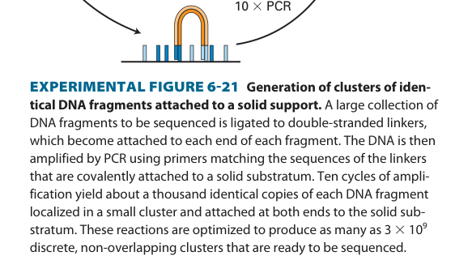
  <figcaption>实验图 6-21 在固相支持物上生成附着于其上的相同 DNA 片段簇。将大量待测序的 DNA 片段连接到双链接头上，接头附着到每个片段的两端。然后使用与共价附着在固相基质上的接头序列匹配的引物通过 PCR 扩增 DNA。十轮扩增产生约一千个每个 DNA 片段的相同拷贝，定位在一个小簇中，两端附着在固相基质上。这些反应被优化以产生多达 3 × 10^9 个离散的、不重叠的簇，准备进行测序。</figcaption>
  <table class="glossary"><caption>图内标签对照</caption>
  <tr><td class="gl-en">PCR</td><td class="gl-zh">PCR</td></tr>
  <tr><td class="gl-en">DNA clusters</td><td class="gl-zh">DNA簇</td></tr>
  <tr><td class="gl-en">Solid support</td><td class="gl-zh">固相支持物</td></tr>
  <tr><td class="gl-en">Linkers</td><td class="gl-zh">接头</td></tr>
  <tr><td class="gl-en">Amplification</td><td class="gl-zh">扩增</td></tr>
  </table>
</figure>
<p>测序仪商业化时，新序列生产能力大幅增加，此后由于技术的改进，它一直在以惊人的速度进一步增长——每几个月翻一番。在一种流行的测序方法中，通过将双链接头连接到待测序的数十亿个不同DNA片段的末端来制备它们（图6-21）。接下来，使用与接头序列匹配的引物通过PCR扩增DNA片段。这种反应与图6-19所示的标准PCR扩增不同之处在于，使用的引物共价连接到固体基质上。因此，随着PCR扩增的进行，每个子代DNA链的一端被共价连接到基质上，在扩增结束时，大约一千个相同的PCR产物以紧密簇的形式连接到表面。</p>
<p>然后可以通过使用特殊显微镜对荧光标记的脱氧核糖核苷酸三磷酸（dNTPs）进行成像来对这些簇进行测序，这些dNTPs由DNA聚合酶逐个掺入到正在生长的DNA链中（图6-22）。首先，切割一条链并洗去，留下单链DNA模板。然后对每个簇中的大约一千个相同模板进行测序，每次一个核苷酸。所有四种dNTPs都被荧光标记并加入测序反应中。在允许它们退火后，对基质进行成像并记录每个簇的颜色。接下来，化学去除荧光标签，允许新的dNTP结合。这个循环重复大约一百次，产生数十亿个一百核苷酸长的序列。整个过程可能需要大约一天，产生约10^11个碱基的序列信息。</p>
<p>为了对长的连续基因组DNA区域甚至生物体的整个基因组进行测序，研究人员通常采用图6-23中概述的策略之一。第一种方法需要分离一组序列重叠的克隆DNA片段。一旦确定了其中一个片段的序列，就可以基于该序列化学合成寡核苷酸，用作测序相邻重叠片段的引物。通过这种方式，通过对其组成的重叠克隆DNA片段进行测序，逐步确定长段DNA的序列。第二种方法称为全基因组鸟枪法测序，绕过了分离跨越基因组的有序DNA片段集合这一耗时的步骤。这种方法简单地涉及对基因组文库中的随机克隆进行测序。选择足够数量的克隆进行测序，使得基因组的每个片段平均被测序约10次。这种覆盖度确保基因组的每个片段被多次测序。然后使用计算机算法通过重叠区域将所有片段对齐，组装整个基因组序列。全基因组鸟枪法测序是对长段DNA进行测序最快且最具成本效益的方法，大多数基因组（包括人类基因组）都已通过这种方法测序。</p>
<figure id="fig-6-22">
  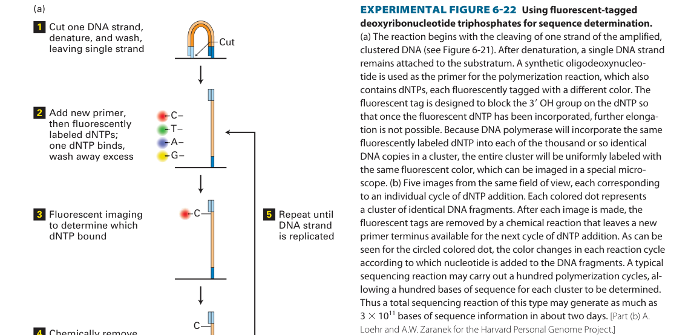
  <figcaption>实验图 6-22 使用荧光标记的脱氧核糖核苷酸三磷酸进行序列测定。（a）反应从切割扩增的成簇 DNA 的一条链开始（见图 6-21）。变性后，一条单链 DNA 保持附着在基质上。使用合成的寡脱氧核苷酸作为聚合反应的引物，反应中还包含 dNTP，每种用不同颜色荧光标记。dNTP 上的荧光标签被设计为封闭 3' OH 基团，使得一旦荧光 dNTP 被掺入，进一步延伸就不可能。由于 DNA 聚合酶会将相同的荧光标记 dNTP 掺入簇中约一千个相同 DNA 拷贝的每一个中，整个簇将被同一荧光颜色均匀标记，可以在特殊显微镜中成像。（b）来自同一视野的五张图像，每张对应一个单独的 dNTP 添加循环。每个彩色点代表一个相同 DNA 片段簇。每张图像制作后，通过化学反应去除荧光标签，留下一个新的引物末端可用于下一个 dNTP 添加循环。如圆圈中的彩色点所示，颜色在每个反应循环中根据添加到 DNA 片段中的核苷酸而变化。一个典型的测序反应可以进行一百个聚合循环，允许确定每个簇的一百个碱基序列。因此，这种类型的总测序反应可以在大约两天内产生多达 3 × 10^11 个碱基的序列信息。[部分（b）A. Loehr 和 A.W. Zaranek 为哈佛个人基因组项目提供。]</figcaption>
  <table class="glossary"><caption>图内标签对照</caption>
  <tr><td class="gl-en">Fluorescent dNTP</td><td class="gl-zh">荧光标记dNTP</td></tr>
  <tr><td class="gl-en">DNA polymerase</td><td class="gl-zh">DNA聚合酶</td></tr>
  <tr><td class="gl-en">Primer</td><td class="gl-zh">引物</td></tr>
  <tr><td class="gl-en">Fluorescent imaging</td><td class="gl-zh">荧光成像</td></tr>
  <tr><td class="gl-en">Sequencing by synthesis</td><td class="gl-zh">合成测序法</td></tr>
  <tr><td class="gl-en">DNA cluster</td><td class="gl-zh">DNA簇</td></tr>
  <tr><td class="gl-en">Fluorophore</td><td class="gl-zh">荧光基团</td></tr>
  </table>
</figure>
<figure id="fig-6-23">
  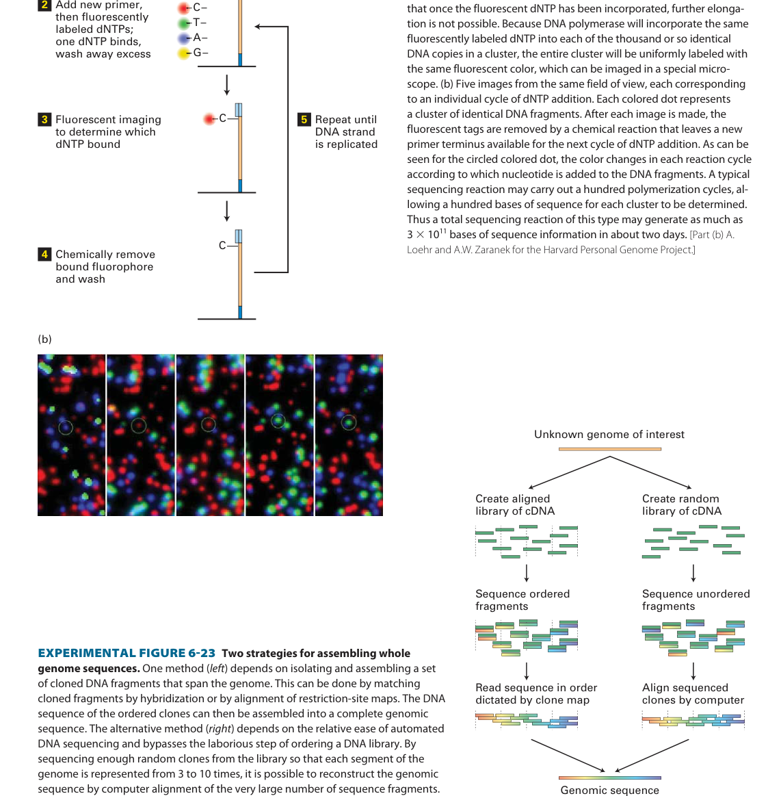
  <figcaption>图 6-23 组装全基因组序列的两种策略。左侧方法依赖于分离和组装一组跨越基因组的克隆 DNA 片段。这可以通过杂交匹配克隆片段或通过限制性位点图谱的比对来完成。然后可以将有序克隆的 DNA 序列组装成完整的基因组序列。右侧替代方法依赖于自动化 DNA 测序的相对容易性，并绕过了对 DNA 文库进行排序的繁琐步骤。通过对文库中足够多的随机克隆进行测序，使得基因组的每个片段被代表 3 到 10 次，可以通过计算机比对大量序列片段来重建基因组序列。</figcaption>
  <table class="glossary"><caption>图内标签对照</caption>
  <tr><td class="gl-en">cDNA library</td><td class="gl-zh">cDNA文库</td></tr>
  <tr><td class="gl-en">Genomic sequence</td><td class="gl-zh">基因组序列</td></tr>
  <tr><td class="gl-en">Clone map</td><td class="gl-zh">克隆图谱</td></tr>
  <tr><td class="gl-en">Shotgun sequencing</td><td class="gl-zh">鸟枪法测序</td></tr>
  <tr><td class="gl-en">Ordered clones</td><td class="gl-zh">有序克隆</td></tr>
  <tr><td class="gl-en">Sequence alignment</td><td class="gl-zh">序列比对</td></tr>
  <tr><td class="gl-en">Whole genome assembly</td><td class="gl-zh">全基因组组装</td></tr>
  <tr><td class="gl-en">Fluorescent dNTP</td><td class="gl-zh">荧光标记dNTP</td></tr>
  <tr><td class="gl-en">Fluorophore</td><td class="gl-zh">荧光基团</td></tr>
  </table>
</figure>
<p>KEY CONCEPTS OF SECTION 6.2</p>
<p>DNA Cloning and Characterization</p>
<p>r 在DNA克隆中，重组DNA分子通过将DNA片段插入载体DNA分子在体外形成。然后将重组DNA分子引入宿主细胞，在其中复制，产生大量重组DNA分子。</p>
<p>r 限制酶（内切核酸酶）通常在特定的4–8 bp回文序列处切割DNA，产生具有自互补单链尾巴（粘性末端）的确定片段。</p>
<p>r 两个具有互补末端的限制片段可以通过DNA连接酶连接形成重组DNA分子（见图6-12）。</p>
<p>r 大肠杆菌克隆载体是小型环状DNA分子（质粒），包含三个功能区：复制起点、选择标记基因和可以插入DNA片段的位点。携带载体的转化细胞在选择培养基上生长成菌落（见图6-14）。</p>
<p>r 基因组文库是一组携带通过切割整个基因组产生的限制片段的克隆。</p>
<p>r 能够在酵母和大肠杆菌中复制的穿梭载体可用于构建酵母基因组文库。特定基因可以通过其互补酵母细胞中相应突变基因的能力来分离（见图6-16）。</p>
<p>r 在cDNA克隆中，表达的mRNA被逆转录为互补DNA或cDNA。cDNA文库是从特定类型细胞或组织中分离的mRNA制备的一组cDNA克隆（见图6-17）。</p>
<p>r 聚合酶链反应（PCR）允许从单个初始模板DNA分子指数扩增特定DNA片段，前提是已知待扩增DNA区域两侧的序列（见图6-19）。</p>
<p>r PCR是一种高度多用途的方法，可编程为扩增特定的基因组DNA序列、cDNA或DNA转座子与侧翼染色体序列之间的连接处序列。</p>
<p>r 长达约100个核苷酸的DNA片段可以通过PCR生成相同片段的簇，并对DNA聚合酶掺入的荧光标记核苷酸前体进行成像来测序（见图6-21和6-22）。</p>
<p>r 全基因组序列可以通过来自基因组文库的大量重叠克隆的序列组装而成（见图6-23）。</p>
<h2 id="sec-6.3">6.3 利用克隆DNA片段研究基因表达</h2>
<p>在上一节中，我们描述了使用重组DNA技术分离特定DNA克隆的基本技术，以及对这些克隆进行进一步鉴定的方法。这里我们考虑如何利用分离出的DNA克隆来研究基因表达。我们将讨论几种广泛使用的通用技术，这些技术依赖于核酸杂交来阐明基因在何时何地表达，以及用于大量生产蛋白质和通过其他方式操作氨基酸序列以确定其表达模式、结构和功能的方法。所有这些基本技术的更具体应用将在后续章节中讨论。</p>
<p>Hybridization Techniques Permit Detection of Specific DNA Fragments and mRNAs</p>
<p>杂交技术依赖于互补的单链DNA或RNA分子通过碱基配对特异性结合（杂交）的能力。如第4章所述，双链DNA可以通过在稀盐溶液中加热而变性（解链）为单链。如果随后降低温度并提高离子浓度，互补的单链将重新结合（杂交）成双链。在核酸混合物中，只有互补的单链（或含有互补区域的链）才会重新结合；而且，它们的重新结合程度几乎不受非互补链存在的影响。</p>
<p>两种非常灵敏的检测复杂混合物中特定DNA或RNA序列的方法，将凝胶电泳分离与放射性或荧光标记的互补DNA探针杂交相结合。第三种方法涉及将标记探针直接杂交到制备好的组织样本上。我们将在其他章节中遇到对这三种技术——它们有众多应用——的引用。</p>
<p>Southern Blotting 第一种用于检测特定序列DNA片段的杂交技术被称为Southern印迹法，以其发明者E. M. Southern命名。该技术能够在限制性内切酶切割整个人类基因组所产生的高度复杂的片段混合物中，检测出单个特定的限制性片段。分离不同大小DNA片段的常用方法是凝胶电泳。在接近中性pH的条件下，DNA分子带有大量负电荷，因此在凝胶电泳中向正极移动。由于凝胶基质限制了随机扩散，相同长度的分子以清晰的条带一起迁移。较小的分子比较大的分子更容易穿过凝胶基质。约200 bp至20 kb以上的较大DNA分子可以在琼脂糖凝胶上进行电泳分离，而约10至2000 bp的较小DNA分子可以在聚丙烯酰胺凝胶上分离。</p>
<p>当全基因组DNA被限制性内切酶消化成片段时，产生的DNA片段混合物十分复杂，以至于即使在凝胶电泳之后，仍然存在大量长度几乎相同的不同片段，无法将任何特定的DNA片段分辨为凝胶上的离散条带。然而，可以通过其与</p>
<p>DNA</p>
<p>用限制性内切酶切割</p>
<p>电泳</p>
<p>滤纸</p>
<p>凝胶</p>
<p>碱性溶液</p>
<figure id="fig-6-24">
  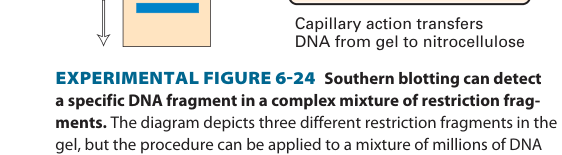
  <figcaption>实验图 6-24 Southern 印迹法可以检测复杂限制性片段混合物中的特定 DNA 片段。该图描绘了凝胶中的三种不同限制性片段，但该程序可应用于数百万个 DNA 片段的混合物。</figcaption>
  <table class="glossary"><caption>图内标签对照</caption>
  <tr><td class="gl-en">Southern blotting</td><td class="gl-zh">Southern印迹</td></tr>
  <tr><td class="gl-en">Capillary action</td><td class="gl-zh">毛细作用</td></tr>
  <tr><td class="gl-en">Nitrocellulose</td><td class="gl-zh">硝酸纤维素膜</td></tr>
  <tr><td class="gl-en">DNA transfer</td><td class="gl-zh">DNA转移</td></tr>
  <tr><td class="gl-en">Gel electrophoresis</td><td class="gl-zh">凝胶电泳</td></tr>
  </table>
</figure>
<p>特定DNA探针杂交的能力，来鉴定作为凝胶上条带迁移的特定片段。为此，凝胶中的限制性片段用碱变性，并通过印迹法转移到硝酸纤维素滤膜或尼龙膜上（图6-24）。该过程保留了片段在凝胶中的分布，在滤膜上形成了凝胶的复制品。（使用印迹膜是因为探针不易扩散到原始凝胶中。）然后将滤膜在杂交条件下与特定的标记DNA探针一起孵育，该探针通常由克隆的限制性片段产生。与探针互补的DNA限制性片段会与之杂交，其在滤膜上的位置可以通过放射自显影（对于放射性标记探针）或荧光成像（对于荧光标记探针）来显示。尽管PCR现在更常用于检测复杂混合物中特定序列的存在，但Southern印迹法在重建那些相距太远而无法在单次反应中通过PCR扩增的基因组序列之间的关系时仍然有用。</p>
<p>Northern Blotting 鉴定克隆基因最基本的方法之一是确定该基因在生物体中的表达时间和位置。特定基因的表达可以通过Northern印迹法检测相应的mRNA来追踪，该方法名称是对相关的Southern印迹法的文字游戏。RNA样品（通常是总细胞RNA）通过用甲醛等破坏碱基对之间氢键的试剂处理而变性，确保所有RNA分子具有伸展的线性构象。各个RNA根据大小通过凝胶电泳分离，并转移到硝酸纤维素滤膜上，变性的伸展RNA会附着在滤膜上。与Southern印迹法一样，然后将滤膜暴露于与目标基因互补的标记DNA探针；最后，对标记的滤膜进行放射自显影。由于可以从Northern印迹中估计样品中特定RNA的量，该程序被广泛用于比较不同条件下细胞中特定mRNA的量。</p>
<p>硝酸纤维素</p>
<p>放射自显影图 凝胶</p>
<p>硝酸纤维素</p>
<p>与标记的DNA或RNA探针杂交</p>
<p>片段。只有与标记探针杂交的片段才会在放射自显影图上产生信号。一种类似的技术，称为Northern印迹法，检测混合物中的特定mRNA。参见E. M. Southern, 1975, J. Mol. Biol. 98:508。</p>
<p>In Situ Hybridization Northern印迹法需要从细胞或细胞混合物中提取mRNA，这意味着细胞被从其生物体或组织内的正常位置移出。因此，细胞的位置及其与邻近细胞的关系都会丢失。为了在精确的基因表达研究中保留这种位置信息，可以对整个或切片组织，甚至整个通透性胚胎进行原位杂交，以检测特定基因编码的mRNA。该技术允许在时间和空间上监测基因转录（图6-25）。</p>
<p>DNA Microarrays Can Be Used to Evaluate the Expression of Many Genes at One Time</p>
<p>利用DNA微阵列分析，可以同时监测数千个基因的表达，这是另一种基于核酸杂交概念的技术。DNA微阵列由数千个独立的、紧密排列的、基因特异性的序列组成，这些序列附着在玻璃显微镜载玻片的表面上。通过将微阵列分析与基因组测序项目的结果相结合，研究人员可以分析生物体在特定生理反应或发育过程中基因表达的整体模式。</p>
<p>Preparation of DNA Microarrays 在制备微阵列的一种方法中，对应于待分析每个基因编码区部分的约1 kb的DNA片段通过PCR单独扩增。使用机器人装置将每个扩增的DNA样品点到玻璃显微镜载玻片的表面上，然后通过化学处理将DNA序列永久附着在玻璃表面并使其变性。一个典型的阵列可以在2 × 2 cm的网格中包含约6000个DNA点。</p>
<p>在另一种方法中，多个DNA寡核苷酸（通常至少20个核苷酸长度）从共价结合在玻璃载玻片表面上的初始核苷酸开始合成。特定</p>
<p>(a) (b)</p>
<figure id="fig-6-25">
  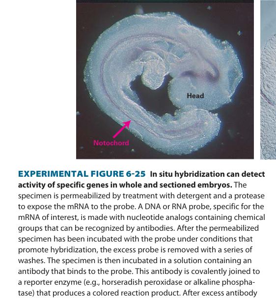
  <figcaption>实验图 6-25 原位杂交可以检测整个和切片胚胎中特定基因的活性。用去污剂和蛋白酶处理标本以使其通透，使 mRNA 暴露于探针。用含有可被抗体识别的化学基团的核苷酸类似物制备对目标 mRNA 特异性的 DNA 或 RNA 探针。在促进杂交的条件下将通透的标本与探针孵育后，通过一系列洗涤去除多余的探针。然后将标本在含有与探针结合的抗体的溶液中孵育。该抗体与一个报告酶（例如辣根过氧化物酶或碱性磷酸酶）共价连接，该酶产生有色反应产物。去除多余抗体后……</figcaption>
  <table class="glossary"><caption>图内标签对照</caption>
  <tr><td class="gl-en">In situ hybridization</td><td class="gl-zh">原位杂交</td></tr>
  <tr><td class="gl-en">Head</td><td class="gl-zh">头部</td></tr>
  <tr><td class="gl-en">Notochord</td><td class="gl-zh">脊索</td></tr>
  <tr><td class="gl-en">mRNA probe</td><td class="gl-zh">mRNA探针</td></tr>
  <tr><td class="gl-en">Reporter enzyme</td><td class="gl-zh">报告酶</td></tr>
  <tr><td class="gl-en">Horseradish peroxidase</td><td class="gl-zh">辣根过氧化物酶</td></tr>
  <tr><td class="gl-en">Alkaline phosphatase</td><td class="gl-zh">碱性磷酸酶</td></tr>
  </table>
</figure>
<p>序列的寡核苷酸的合成可以在载玻片表面上的一个小区域内编程。来自单个基因的多个寡核苷酸序列因此在载玻片的相邻区域中合成。通过这种方法，可以在单个玻璃载玻片上产生代表数千个基因的寡核苷酸。由于构建这些合成寡核苷酸阵列的方法改编自用于制造计算机中微观集成电路的方法，这些类型的寡核苷酸微阵列通常被称为DNA芯片。</p>
<p>Using Microarrays to Compare Gene Expression Under Different Conditions 微阵列表达研究的初始步骤是从所研究细胞表达的mRNA制备cDNA，并为其附着荧光标记。当cDNA制备物在适当条件下施加到微阵列上时，代表已表达基因的DNA点将与其在标记探针混合物中的互补cDNA杂交，随后可以在扫描激光显微镜中检测到。</p>
<p>图6-26描绘了如何应用该方法来检查饥饿的人类成纤维细胞转移到富含血清的生长培养基后观察到的基因表达变化。在这类实验中，来自饥饿成纤维细胞和来自血清培养成纤维细胞的单独cDNA制备物用不同颜色的荧光染料标记。然后将包含8600个哺乳动物基因的DNA微阵列与含有等量两种cDNA制备物的混合物在杂交条件下孵育。洗去未杂交的cDNA后，</p>
<p>(c)</p>
<p>背侧</p>
<p>头部</p>
<p>NT</p>
<p>脊索</p>
<p>腹侧</p>
<p>内胚层</p>
<p>已被移除，加入报告酶的底物。在探针与待检测mRNA杂交的位置形成有色沉淀。(a) 约发育10天的小鼠整胚，用Sonic hedgehog mRNA探针检测。染色标记了脊索（红色箭头），一条沿未来脊髓走行的中胚层杆状结构。(b) 与(a)部分类似的小鼠胚胎横切面。可以看到神经管（NT）的背/腹轴，其下方是表达Sonic hedgehog的脊索（红色箭头），内胚层（蓝色箭头）位于更腹侧。(c) 用气管发育过程中产生的mRNA探针检测的整只果蝇胚胎。可见体节重复模式。前（头）端朝上；腹侧朝左。[Ljiljana Milenkovic and Matthew P. Scott.]</p>
<p>在荧光显微镜下测量每个DNA点的绿色和红色荧光强度，并根据每个基因在载玻片上的已知位置以其名称记录。每个点上红色和绿色荧光信号的相对强度提供了该基因在血清响应中相对表达水平的度量。在这些生长条件下不转录的基因不产生可检测的信号。在两种条件下以相同水平转录的基因与红色和绿色标记的cDNA制备物同等杂交。成纤维细胞中基因表达的微阵列分析显示，在检查的8600个基因中，约500个基因的转录在添加血清后发生了实质性变化。</p>
<p>Cluster Analysis of Multiple Expression Experiments Identifies Co-regulated Genes</p>
<p>关于表现出相似表达变化的基因是否共调控——因而可能在功能上密切相关——的可靠结论很少能从单个微阵列实验中得出。例如，刚刚描述的成纤维细胞中观察到的许多基因表达差异可能是细胞从一种培养基转移到另一种培养基时发生的许多不同细胞生理变化的间接结果。换句话说，在单个微阵列表达实验中看似共调控的基因，可能由于非常不同的原因而经历表达变化，并且实际上可能具有非常不同的生物学功能。解决这个问题的方法是</p>
<p>(a)</p>
<p>无血清的成纤维细胞</p>
<p>添加血清的成纤维细胞</p>
<p>分离总mRNA</p>
<p>逆转录为cDNA，用荧光染料</p>
<p>绿色染料 红色染料</p>
<p>标记</p>
<p>混合</p>
<p>与DNA微阵列杂交</p>
<p>与单个基因DNA杂交的cDNA</p>
<p>洗涤</p>
<p>测量每个点上的绿色和红色荧光</p>
<p>A B</p>
<p>8600个基因的阵列</p>
<p>A</p>
<p>如果点是绿色，则该基因在细胞中添加血清后表达降低</p>
<p>B</p>
<p>如果点是红色，则该基因在细胞中添加血清后表达增加</p>
<p>(b)</p>
<p>将来自一组微阵列表达实验的信息结合起来，以找到在各种条件下或在一段时间内类似调控的基因。</p>
<figure id="fig-6-26">
  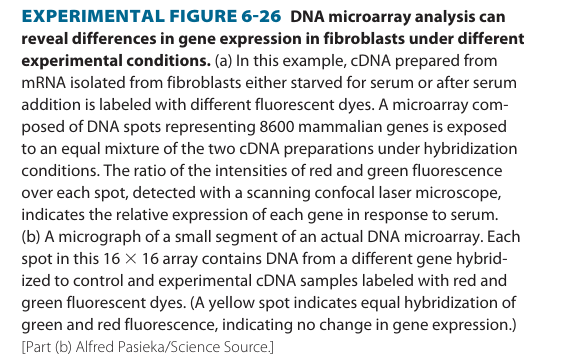
  <figcaption>实验图 6-26 DNA 微阵列分析可以揭示不同实验条件下成纤维细胞中基因表达的差异。（a）在此示例中，从血清饥饿的成纤维细胞或血清添加后的成纤维细胞中分离的 mRNA 制备的 cDNA 用不同的荧光染料标记。将由代表 8600 个哺乳动物基因的 DNA 点组成的微阵列在杂交条件下暴露于两种 cDNA 制备物的等量混合物中。用扫描共聚焦激光显微镜检测到的每个点上红色和绿色荧光强度的比率，指示每个基因响应血清的相对表达。（b）实际 DNA 微阵列一小部分的显微照片。这个 16 × 16 阵列中的每个点包含来自不同基因的 DNA，与用红色和绿色荧光染料标记的对照和实验 cDNA 样品杂交。（黄色点表示绿色和红色荧光的相等杂交，表示基因表达没有变化。）[部分（b）Alfred Pasieka/Science Source。]</figcaption>
  <table class="glossary"><caption>图内标签对照</caption>
  <tr><td class="gl-en">DNA microarray</td><td class="gl-zh">DNA微阵列</td></tr>
  <tr><td class="gl-en">Gene expression</td><td class="gl-zh">基因表达</td></tr>
  <tr><td class="gl-en">Fluorescent dye</td><td class="gl-zh">荧光染料</td></tr>
  <tr><td class="gl-en">cDNA</td><td class="gl-zh">cDNA</td></tr>
  <tr><td class="gl-en">Hybridization</td><td class="gl-zh">杂交</td></tr>
  <tr><td class="gl-en">Serum starvation</td><td class="gl-zh">血清饥饿</td></tr>
  <tr><td class="gl-en">Confocal laser microscope</td><td class="gl-zh">共聚焦激光显微镜</td></tr>
  </table>
</figure>
<p>对多个微阵列表达实验的这种更具信息量的使用，通过检查上述8600个基因在成纤维细胞添加血清后不同时间的相对表达来说明，这产生了超过10^4个单独的数据点。一个与用于确定不同蛋白质序列相关性程序相关的计算机程序，可以组织这些数据并对添加血清后时间过程中显示相似表达的基因进行聚类。值得注意的是，这种聚类分析将编码参与共同细胞过程（如胆固醇生物合成或细胞周期）的蛋白质的基因集合分组在一起（图6-27）。</p>
<p>微阵列分析是医学中一种强大的诊断工具。例如，已发现特定的mRNA集合可以区分预后不良的肿瘤和预后良好的肿瘤。以前无法区分的疾病变异现在是可检测的。分析肿瘤活检中这些区分性mRNA将帮助医生选择最合适的治疗方案。随着更多表征各种病变组织的基因表达模式被识别，DNA微阵列的诊断用途将扩展到其他疾病。■</p>
<p>E. coli Expression Systems Can Produce Large Quantities of Proteins from Cloned Genes</p>
<p>许多蛋白质激素和其他信号或调节蛋白通常在非常低的浓度下表达，这使得它们无法通过标准生化技术进行大规模分离和纯化。这类蛋白质的广泛治疗用途，以及对其结构和功能的基础研究，都依赖于以合理成本大量生产它们的高效程序。将大肠杆菌细胞转化为合成低丰度蛋白质工厂的重组DNA技术，现在被用于商业化生产粒细胞集落刺激因子（G-CSF）、胰岛素、生长激素、促红细胞生成素和其他具有治疗用途的人类蛋白质。例如，G-CSF刺激</p>
<p>每一列代表添加血清后不同时间的不同基因</p>
<figure id="fig-6-27">
  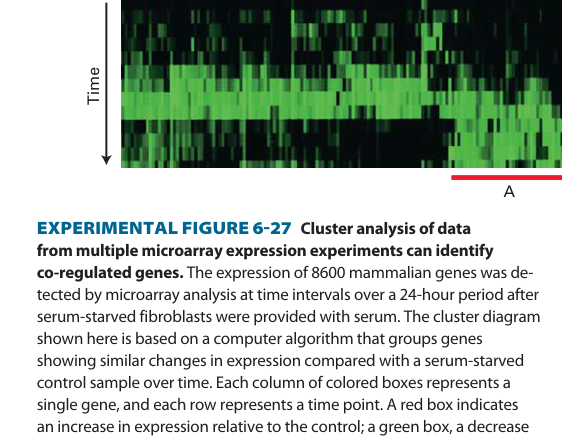
  <figcaption>实验图 6-27 来自多个微阵列表达实验的数据的聚类分析可以鉴定共调控基因。在血清饥饿的成纤维细胞被提供血清后的 24 小时内，通过微阵列分析在时间间隔上检测了 8600 个哺乳动物基因的表达。此处显示的聚类图基于一种计算机算法，该算法将随时间推移与血清饥饿对照样品相比显示相似表达变化的基因分组。每列彩色框代表一个基因，每行代表一个时间点。红色框表示相对于对照表达增加；绿色框表示减少……</figcaption>
  <table class="glossary"><caption>图内标签对照</caption>
  <tr><td class="gl-en">Cluster analysis</td><td class="gl-zh">聚类分析</td></tr>
  <tr><td class="gl-en">Microarray</td><td class="gl-zh">微阵列</td></tr>
  <tr><td class="gl-en">Co-regulated genes</td><td class="gl-zh">共调控基因</td></tr>
  <tr><td class="gl-en">Time course</td><td class="gl-zh">时间进程</td></tr>
  <tr><td class="gl-en">Serum-starved fibroblasts</td><td class="gl-zh">血清饥饿成纤维细胞</td></tr>
  <tr><td class="gl-en">Gene expression</td><td class="gl-zh">基因表达</td></tr>
  </table>
</figure>
<figure id="fig-6-28">
  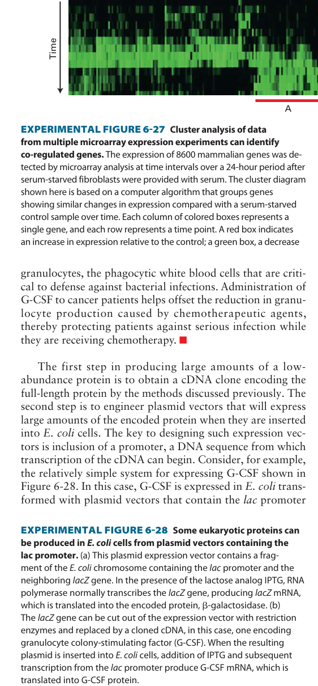
  <figcaption>实验图 6-28 一些真核蛋白可以在含有 lac 启动子的大肠杆菌细胞中从质粒载体产生。（a）此质粒表达载体含有一段大肠杆菌染色体片段，包含 lac 启动子和相邻的 lacZ 基因。在乳糖类似物 IPTG 存在下，RNA 聚合酶正常转录 lacZ 基因，产生 lacZ mRNA，其被翻译为编码的蛋白质 β-半乳糖苷酶。（b）可以用限制性内切酶将 lacZ 基因从表达载体中切出，并用克隆的 cDNA 替换，在此例中为编码粒细胞集落刺激因子（G-CSF）的 cDNA。当所得质粒插入大肠杆菌细胞时，添加 IPTG 和随后从 lac 启动子的转录产生 G-CSF mRNA，其被翻译为 G-CSF 蛋白。</figcaption>
  <table class="glossary"><caption>图内标签对照</caption>
  <tr><td class="gl-en">G-CSF</td><td class="gl-zh">G-CSF（粒细胞集落刺激因子）</td></tr>
  <tr><td class="gl-en">Granulocytes</td><td class="gl-zh">粒细胞</td></tr>
  <tr><td class="gl-en">E. coli</td><td class="gl-zh">大肠杆菌（E. coli）</td></tr>
  <tr><td class="gl-en">lac promoter</td><td class="gl-zh">lac启动子</td></tr>
  <tr><td class="gl-en">Expression vector</td><td class="gl-zh">表达载体</td></tr>
  <tr><td class="gl-en">cDNA clone</td><td class="gl-zh">cDNA克隆</td></tr>
  <tr><td class="gl-en">IPTG</td><td class="gl-zh">IPTG（异丙基-β-D-硫代半乳糖苷）</td></tr>
  <tr><td class="gl-en">β-galactosidase</td><td class="gl-zh">β-半乳糖苷酶</td></tr>
  <tr><td class="gl-en">Chemotherapy</td><td class="gl-zh">化疗</td></tr>
  </table>
</figure>
<p>A D C B E</p>
<p>表达变化；黑色方框表示表达无显著变化。顶部的"树"图显示了如何以分层方式组织各个基因的表达模式，将表达模式随时间变化最相似的基因归为一组。在该实验中鉴定出五个协调调控的基因簇，如底部横条所示。每个簇包含多个基因，其编码的蛋白质在特定细胞过程中发挥作用：胆固醇生物合成（A）、细胞周期（B）、即时早期反应（C）、信号传导和血管生成（D）、以及伤口愈合和组织重塑（E）。[Michael B. Eisen, University of California, Berkeley.]</p>
<p>与编码G-CSF的克隆cDNA相邻。lac启动子的转录仅在向培养基中添加乳糖或乳糖类似物（如异丙基硫代半乳糖苷IPTG）时才会以高速率发生，</p>
<p>(a)</p>
<p>lac启动子</p>
<p>lacZ mRNA</p>
<p>lacZ基因</p>
<p>β-半乳糖苷酶</p>
<p>− IPTG + IPTG</p>
<p>(b)</p>
<p>G-CSF cDNA</p>
<p>质粒表达载体</p>
<p>lacZ基因</p>
<p>转化大肠杆菌</p>
<p>lac启动子</p>
<p>G-CSF mRNA</p>
<p>G-CSF cDNA</p>
<p>G-CSF蛋白</p>
<p>− IPTG + IPTG</p>
<p>被添加到培养基中。在更复杂的大肠杆菌表达系统中，可以产生更大量的所需蛋白质。</p>
<p>为了帮助纯化在大肠杆菌表达系统中产生的真核蛋白，研究人员经常修饰编码重组蛋白的cDNA，以促进其与内源性大肠杆菌蛋白的分离。这种类型的一种常用修饰是在cDNA末端添加一个短核苷酸序列，使表达的蛋白质在C端具有六个组氨酸残基。以这种方式修饰的蛋白质与含有螯合镍原子的亲和基质紧密结合，而大肠杆菌蛋白则不结合这种基质。通过降低周围培养基的pH值，可以将结合的蛋白质从镍原子上释放。在大多数情况下，该程序可产生纯的、有功能的重组蛋白，因为向蛋白质的C端或N端添加短氨基酸序列通常不会干扰蛋白质的生化活性。</p>
<p>Plasmid Expression Vectors Can Be Designed for Use in Animal Cells</p>
<p>尽管细菌表达系统可以成功地用于大量生产某些蛋白质，但细菌并非在所有情况下都能使用。许多旨在检查蛋白质在适当细胞环境中功能的实验，需要在培养的动物细胞中表达经过遗传修饰的蛋白质。为此，基因被克隆到专门的真核表达载体中，并通过称为转染的过程引入培养的动物细胞。两种常用的转染动物细胞方法的不同之处在于重组载体DNA是否整合到宿主细胞基因组DNA中。</p>
<p>在这两种方法中，培养的动物细胞必须经过处理以促进它们初始摄取重组质粒载体。这可以通过将细胞暴露于能穿透质膜、增加其对DNA通透性的脂质制剂来实现。或者，对细胞施加数千伏的短暂电击——一种称为电穿孔的技术——使它们暂时对DNA通透。通常以足够浓度添加质粒DNA，以确保大部分培养细胞将至少接收一个拷贝。研究人员还利用病毒进行转染；病毒可以被修饰以包含目的DNA，然后通过简单地用重组病毒感染宿主细胞来引入。</p>
<p>Transient Transfection 两种转染方法中较简单的一种称为瞬时转染，它使用类似于前面描述的酵母穿梭载体的质粒载体。用于哺乳动物细胞时，质粒载体被设计为携带源自感染哺乳动物细胞的病毒的复制起点、被哺乳动物RNA聚合酶识别的强启动子，以及紧邻启动子编码待表达蛋白质的克隆cDNA（图6-29a）。一旦这样的质粒载体进入哺乳动物细胞，病毒</p>
<p>(a) 瞬时转染</p>
<p>cDNA</p>
<p>启动子</p>
<p>病毒复制起点</p>
<p>载体</p>
<p>通过脂质处理或电穿孔转染培养细胞</p>
<p>蛋白质从质粒DNA中的cDNA表达</p>
<p>(b) 稳定转染（转化）</p>
<p>cDNA</p>
<p>启动子</p>
<p>载体</p>
<p>neor</p>
<p>通过脂质处理或电穿孔转染培养细胞</p>
<p>筛选G-418抗性</p>
<p>G-418抗性克隆</p>
<p>蛋白质从整合的cDNA中表达</p>
<figure id="fig-6-29">
  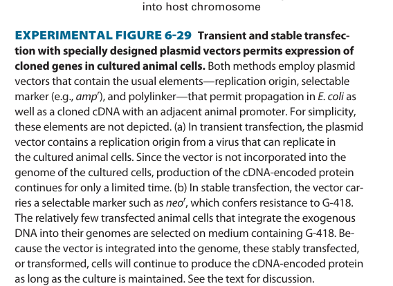
  <figcaption>实验图 6-29 使用专门设计的质粒载体进行瞬时和稳定转染，允许在培养的动物细胞中表达克隆基因。两种方法都使用包含通常元件的质粒载体——复制起点、可选择标记（例如 amp^r）和多接头——允许在大肠杆菌中繁殖，以及带有相邻动物启动子的克隆 cDNA。为简单起见，这些元件未在图中描绘。（a）在瞬时转染中，质粒载体包含一个来自病毒的复制起点，可以在培养的动物细胞中复制。由于载体未整合到培养细胞的基因组中，cDNA 编码蛋白的产生仅持续有限时间。（b）在稳定转染中，载体携带一个可选择标记，如 neo^r，它赋予对 G-418 的抗性。相对较少的将外源 DNA 整合到其基因组中的转染动物细胞在含 G-418 的培养基上被选择。由于载体整合到基因组中，这些稳定转染或转化的细胞将在培养维持期间持续产生 cDNA 编码蛋白。讨论见正文。</figcaption>
  <table class="glossary"><caption>图内标签对照</caption>
  <tr><td class="gl-en">Transient transfection</td><td class="gl-zh">瞬时转染</td></tr>
  <tr><td class="gl-en">Stable transfection</td><td class="gl-zh">稳定转染</td></tr>
  <tr><td class="gl-en">Host chromosome</td><td class="gl-zh">宿主染色体</td></tr>
  <tr><td class="gl-en">Selectable marker</td><td class="gl-zh">选择标记</td></tr>
  <tr><td class="gl-en">G-418</td><td class="gl-zh">G-418（抗生素）</td></tr>
  <tr><td class="gl-en">Viral replication origin</td><td class="gl-zh">病毒复制起点</td></tr>
  <tr><td class="gl-en">Cultured animal cells</td><td class="gl-zh">培养动物细胞</td></tr>
  </table>
</figure>
<p>复制起点使其能够高效复制，产生大量质粒，蛋白质从中表达。然而，在细胞分裂过程中，这种质粒不会被忠实地分配到两个子细胞中，随着时间的推移，培养物中相当大比例的细胞将不含质粒，因此得名瞬时转染。</p>
<p>Stable Transfection (Transformation) 如果引入的载体整合到宿主细胞的基因组中，该基因组就被永久改变，该细胞被称为已转化。整合最可能由正常参与DNA修复和重组的内源性酶完成。一个常用的选择性标记是新霉素磷酸转移酶基因（记为neor），它赋予对与新霉素化学相关的有毒化合物G-418的抗性。通过稳定转染表达克隆cDNA的基本程序在图6-29b中概述。只有那些将表达载体整合到宿主染色体中的细胞才能在高浓度G-418存在下存活并产生克隆。由于整合发生在基因组中的随机位点，各个转化的G-418抗性克隆在转录插入cDNA的速率上会有所不同。因此，通常筛选稳定转染子以鉴定那些以最高水平产生目标蛋白的克隆。</p>
<p>Retroviral Expression Systems 研究人员利用病毒将其遗传物质引入动物细胞并随后插入染色体DNA的基本机制，大大提高了修饰基因在动物细胞中稳定表达的效率。一种这样的病毒表达系统源自一类称为慢病毒的反转录病毒。如图所示</p>
<p>重组慢病毒颗粒</p>
<p>逆转录病毒RNA</p>
<p>克隆蛋白 启动子</p>
<p>基因</p>
<p>neor</p>
<p>LTR LTR</p>
<p>载体质粒</p>
<p>包装质粒</p>
<p>病毒外壳质粒</p>
<p>图6-30，通过瞬时转染引入细胞的三种不同质粒被用于产生重组慢病毒颗粒，适用于将克隆基因高效引入目标动物细胞。第一种质粒称为载体质粒，包含目的克隆基因以及一个选择性标记（如neor），两侧为慢病毒LTR序列。左侧LTR序列指导合成一个RNA分子，该分子两端携带慢病毒LTR序列，因此具有天然逆转录病毒RNA的许多特性。在合适的宿主中，这种携带LTR的RNA可以被包装到病毒颗粒中，然后通过病毒感染引入目标细胞。在目标细胞中，LTR序列指导RNA通过逆转录复制为双链DNA，并按图8-14所示的一系列事件将DNA整合到染色体DNA中。第二种质粒称为包装质粒，携带除主要病毒包膜蛋白外所有包装含LTR病毒RNA为功能性慢病毒颗粒所必需的病毒基因。最后一种质粒允许表达病毒包膜蛋白，当该蛋白被整合到重组慢病毒中时，使所得的杂交病毒颗粒能感染所需的目标细胞类型。在此背景下常用的一种包膜蛋白是水泡性口炎病毒的糖蛋白（VSV-G蛋白），它能轻易替代完整病毒颗粒表面上的正常慢病毒包膜蛋白，并允许所得病毒颗粒感染多种哺乳动物细胞类型，包括造血干细胞、神经元、肌肉和肝细胞。细胞感染后，两侧为病毒LTR序列的克隆基因被逆转录为DNA，该DNA被转运至细胞核并整合到宿主基因组中。如有必要，如稳定转染的情况，可以通过G-418抗性筛选具有稳定整合的克隆基因和neor标记的细胞。许多使特定基因功能失活的技术（见6.5节）需要整个培养细胞群体同时被遗传修饰。工程化慢病毒对此类实验特别有用，因为它们以如此高的效率感染细胞，使得群体中的每个细胞都能接收至少一个慢病毒携带质粒的拷贝。</p>
<p>Gene and Protein Tagging 表达载体可以提供一种研究真核蛋白表达和胞内定位的方法。此类研究通常依赖于报告蛋白的使用，如绿色荧光蛋白（GFP），</p>
<p>病毒外壳蛋白基因</p>
<figure id="fig-6-30">
  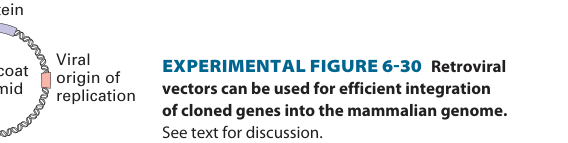
  <figcaption>实验图 6-30 逆转录病毒载体可用于将克隆基因高效整合到哺乳动物基因组中。讨论见正文。</figcaption>
  <table class="glossary"><caption>图内标签对照</caption>
  <tr><td class="gl-en">Retroviral vector</td><td class="gl-zh">逆转录病毒载体</td></tr>
  <tr><td class="gl-en">Viral origin of replication</td><td class="gl-zh">病毒复制起点</td></tr>
  <tr><td class="gl-en">Mammalian genome</td><td class="gl-zh">哺乳动物基因组</td></tr>
  <tr><td class="gl-en">Integration</td><td class="gl-zh">整合</td></tr>
  </table>
</figure>
<p>其可以在细胞中方便地检测到（见图4-16）。这里我们描述两种创建杂合基因的方法，该杂合基因将报告蛋白的表达与目的蛋白的表达联系起来。当杂合基因通过含修饰基因的质粒表达载体转染或通过6.5节描述的转基因动物创建重新引入细胞时，报告蛋白的表达可用于确定基因在何处和何时表达。该方法提供的数据类似于前面描述的原位杂交实验，但通常具有更高的分辨率和灵敏度。</p>
<p>图6-31说明了使用两种不同类型的GFP标记实验来研究线虫（C. elegans）中气味受体蛋白的表达。当</p>
<p>(a) 启动子融合；ODR10启动子与GFP融合</p>
<figure id="fig-6-31">
  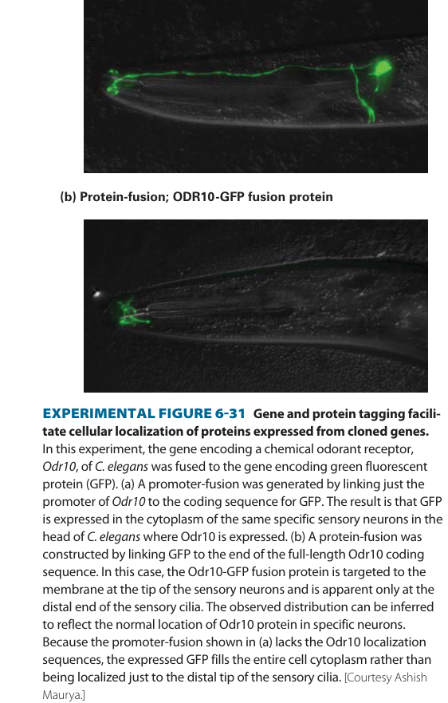
  <figcaption>实验图 6-31 基因和蛋白质标记有助于从克隆基因表达的蛋白质的细胞定位。在此实验中，编码秀丽隐杆线虫（C. elegans）化学气味受体 Odr10 的基因与编码绿色荧光蛋白（GFP）的基因融合。（a）通过仅将 Odr10 的启动子连接到 GFP 的编码序列来生成启动子融合。结果是 GFP 在秀丽隐杆线虫头部中表达 Odr10 的相同特定感觉神经元的细胞质中表达。（b）通过将 GFP 连接到全长 Odr10 编码序列的末端来构建蛋白质融合。在这种情况下，Odr10-GFP 融合蛋白被靶向到感觉神经元末端的膜上，并且仅在感觉纤毛的远端可见。观察到的分布可以推断反映了 Odr10 蛋白在特定神经元中的正常位置。由于（a）中显示的启动子融合缺乏 Odr10 定位序列，表达的 GFP 填充整个细胞质，而不是仅定位到感觉纤毛的远端。[Courtesy Ashish Maurya。]</figcaption>
  <table class="glossary"><caption>图内标签对照</caption>
  <tr><td class="gl-en">Protein-fusion</td><td class="gl-zh">蛋白融合</td></tr>
  <tr><td class="gl-en">ODR10-GFP fusion protein</td><td class="gl-zh">ODR10-GFP融合蛋白</td></tr>
  <tr><td class="gl-en">GFP</td><td class="gl-zh">GFP（绿色荧光蛋白）</td></tr>
  <tr><td class="gl-en">Promoter-fusion</td><td class="gl-zh">启动子融合</td></tr>
  <tr><td class="gl-en">C. elegans</td><td class="gl-zh">秀丽隐杆线虫（C. elegans）</td></tr>
  <tr><td class="gl-en">Odorant receptor</td><td class="gl-zh">气味受体</td></tr>
  <tr><td class="gl-en">Sensory neurons</td><td class="gl-zh">感觉神经元</td></tr>
  <tr><td class="gl-en">Sensory cilia</td><td class="gl-zh">感觉纤毛</td></tr>
  </table>
</figure>
<p>气味受体的启动子直接连接到GFP的编码序列（通常称为启动子融合），GFP在特定神经元中表达，充满这些神经元的细胞质。相反，当杂合基因通过将GFP连接到气味受体的编码序列构建时，所产生的蛋白融合可以通过GFP荧光定位在感觉神经元远端纤毛——即受体蛋白正常定位的位点。</p>
<p>替代GFP标记来检测蛋白质胞内位置的一种方法是，通过在目的基因上附加一段编码短氨基酸序列的短DNA序列来修饰该基因，该短氨基酸序列能被已知的单克隆抗体识别。这种能被抗体结合的短肽称为表位；因此该方法称为表位标记。用含修饰基因的质粒表达载体转染细胞后，表达的表位标记形式蛋白可以通过用对表位特异的单克隆抗体对细胞进行免疫荧光标记来检测。选择使用短表位还是GFP来标记特定蛋白质通常取决于克隆基因能耐受何种类型的修饰而仍然保持功能。</p>
<p>KEY CONCEPTS OF SECTION 6.3</p>
<p>Using Cloned DNA Fragments to Study Gene Expression</p>
<p>r Southern印迹法可以在复杂混合物中检测单个特定的DNA片段，它结合了凝胶电泳、将分离条带转移（印迹）到滤膜上，以及与互补的标记DNA探针杂交（见图6-24）。类似的Northern印迹法技术可以检测混合物中的特定RNA。</p>
<p>r 特定mRNA的存在和分布可以通过原位杂交在活细胞中检测。</p>
<p>r DNA微阵列分析同时检测数千个基因在不同类型细胞中或相同细胞在不同条件下的相对表达水平（见图6-26）。</p>
<p>r 对多个微阵列表达实验的数据进行聚类分析，可以识别在各种条件下类似调控的基因。这种共调控的基因通常编码具有生物学相关功能的蛋白质。</p>
<p>r 源自质粒的表达载体可以从克隆基因中大量生产蛋白质。</p>
<p>r 真核表达载体可用于在酵母或哺乳动物细胞中表达克隆基因。这些方法的一个重要应用是用GFP或用于抗体检测的表位标记蛋白质。</p>
<h2 id="sec-6.4">6.4 定位与鉴定人类疾病基因</h2>
<figure class="table" id="tab-T6-2">
  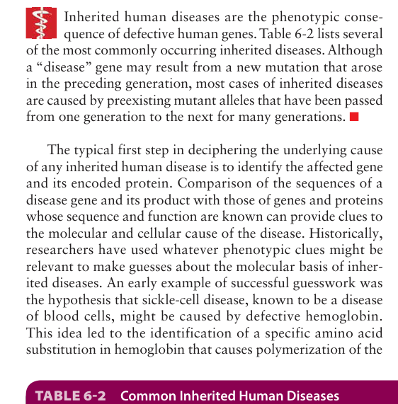
  <figcaption>表 6-2 常见遗传性人类疾病</figcaption>
  <table class="glossary"><caption>图内标签对照</caption>
  <tr><td class="gl-en">Inherited human diseases</td><td class="gl-zh">人类遗传病</td></tr>
  <tr><td class="gl-en">Mutant alleles</td><td class="gl-zh">突变等位基因</td></tr>
  <tr><td class="gl-en">Sickle-cell disease</td><td class="gl-zh">镰刀型细胞贫血病</td></tr>
  <tr><td class="gl-en">Hemoglobin</td><td class="gl-zh">血红蛋白</td></tr>
  <tr><td class="gl-en">Amino acid substitution</td><td class="gl-zh">氨基酸替换</td></tr>
  <tr><td class="gl-en">Cystic fibrosis</td><td class="gl-zh">囊性纤维化</td></tr>
  <tr><td class="gl-en">Huntington's disease</td><td class="gl-zh">亨廷顿病</td></tr>
  <tr><td class="gl-en">Duchenne muscular dystrophy</td><td class="gl-zh">杜氏肌营养不良症</td></tr>
  <tr><td class="gl-en">Monogenic disease</td><td class="gl-zh">单基因病</td></tr>
  </table>
</figure>
<p>Disease Molecular and Cellular Defect Incidence</p>
<p>Autosomal Recessive</p>
<p>Sickle-cell disease Abnormal hemoglobin causes deformation of red blood cells, which can become lodged in capillaries; also confers resistance to malaria.</p>
<p>Cystic fibrosis Defective chloride channel (CFTR) in epithelial cells leads to excessive mucus in lungs.</p>
<p>Phenylketonuria (PKU) Defective enzyme in phenylalanine metabolism (tyrosine hydroxylase) results in excess phenylalanine leading to mental retardation, unless restricted by diet.</p>
<p>Tay-Sachs disease Defective hexosaminidase enzyme leads to accumulation of excess sphingolipids in the lysosomes of neurons, impairing neural development.</p>
<p>Autosomal Dominant</p>
<p>Huntington's disease Defective neural protein (huntingtin) may assemble into aggregates, causing damage to neural tissue.</p>
<p>Hypercholesterolemia Defective LDL receptor leads to excessive cholesterol in blood and early heart attacks.</p>
<p>X-Linked Recessive</p>
<p>Duchenne muscular dystrophy (DMD)</p>
<p>Defective cytoskeletal protein (dystrophin) leads to im- paired muscle function.</p>
<p>Hemophilia A Defective blood clotting factor VIII leads to uncontrolled bleeding.</p>
<p>导致血红蛋白分子缺陷，在遗传了两个拷贝的镰刀型细胞血红蛋白Hbs等位基因的个体中引起红细胞的镰刀状变形。</p>
<p>然而，大多数情况下，导致遗传病的基因必须在没有任何先验知识或关于受影响基因或其编码蛋白质性质的合理假设的情况下被找到。在本节中，我们将看到人类遗传学家如何通过追踪疾病在家族中的分离来找到导致遗传病的基因。疾病的分离可以与许多其他遗传标记的分离相关联，最终导致鉴定受影响基因的染色体位置。这一信息，加上对人类基因组序列的了解，最终可以精确定位受影响的基因和致病突变。</p>
<p>单基因疾病呈现三种遗传模式之一</p>
<p>由单个特定基因突变引起的人类遗传病，称为单基因疾病，根据致病等位基因的性质和染色体位置表现出不同的遗传模式。一种</p>
<p>1/625 of sub-Saharan African origin</p>
<p>1/2500 of European origin</p>
<p>1/10,000 of European origin</p>
<p>1/1000 eastern European Jews</p>
<p>1/10,000 of European origin</p>
<p>1/122 French Canadians</p>
<p>1/3500 males</p>
<p>1–2/10,000 males</p>
<p>特征性模式是常染色体（即22条非性染色体的人类染色体之一）上的显性等位基因所表现出的模式。由于常染色体显性等位基因在杂合子中表达，通常受影响个体的父母中至少有一方也会患病。由显性等位基因引起的疾病通常在生命后期、生育年龄之后才出现。如果不是这样，自然选择在人类进化过程中就会淘汰这些等位基因。常染色体显性遗传病的一个例子是亨廷顿病，这是一种神经退行性疾病，通常在中年到晚年发病。如果父母中任何一方携带突变的HD等位基因，其每个子女（无论性别）都有50%的概率继承该突变等位基因并患病（图6-32a）。</p>
<p>常染色体上的隐性等位基因表现出完全不同的分离模式。父母双方必须是常染色体隐性等位基因的杂合携带者，其子女才有患病风险。杂合父母的每个子女</p>
<p>AHD/A+</p>
<p>A+/A+</p>
<p>+</p>
<p>(a) Autosomal</p>
<p>Affected</p>
<p>dominant: Huntington's disease</p>
<p>Males and females</p>
<p>A+/A+</p>
<p>AHD/A+</p>
<p>Not affected</p>
<p>Affected</p>
<p>ACFTR/A+</p>
<p>ACFTR/A+ +</p>
<p>(b) Autosomal</p>
<p>recessive: cystic fibrosis</p>
<p>Carrier</p>
<p>Carrier</p>
<p>Males and females</p>
<figure id="fig-6-32">
  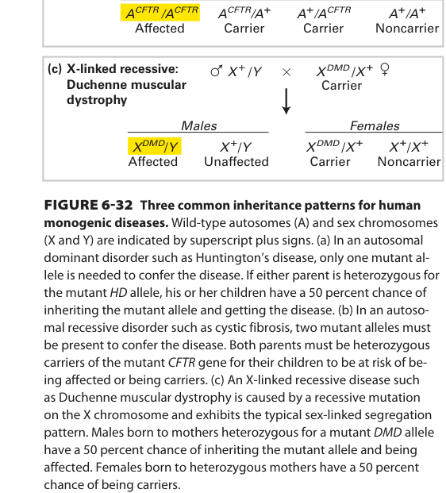
  <figcaption>图 6-32 人类单基因疾病的三种常见遗传模式。野生型常染色体（A）和性染色体（X 和 Y）用上标加号表示。（a）在常染色体显性遗传病（如亨廷顿病）中，只需要一个突变等位基因即可导致疾病。如果父母中一方对突变等位基因是杂合的（HD），其子女有 50% 的概率继承突变等位基因并患病。（b）在常染色体隐性遗传病（如囊性纤维化）中，必须存在两个突变等位基因才能导致疾病。父母双方都必须是突变 CFTR 基因的杂合携带者，其子女才有风险患病或成为携带者。（c）X 连锁隐性遗传病（如杜氏肌营养不良症）由 X 染色体上的隐性突变引起，并表现出典型的性别连锁分离模式。对 DMD 突变等位基因杂合的母亲所生的男性有 50% 的概率继承突变等位基因并患病。杂合母亲所生的女性有 50% 的概率成为携带者。</figcaption>
  <table class="glossary"><caption>图内标签对照</caption>
  <tr><td class="gl-en">Autosomal dominant</td><td class="gl-zh">常染色体显性</td></tr>
  <tr><td class="gl-en">Autosomal recessive</td><td class="gl-zh">常染色体隐性</td></tr>
  <tr><td class="gl-en">X-linked recessive</td><td class="gl-zh">X连锁隐性</td></tr>
  <tr><td class="gl-en">Duchenne muscular dystrophy</td><td class="gl-zh">杜氏肌营养不良症</td></tr>
  <tr><td class="gl-en">DMD</td><td class="gl-zh">DMD（杜氏肌营养不良蛋白）</td></tr>
  <tr><td class="gl-en">CFTR</td><td class="gl-zh">CFTR（囊性纤维化跨膜传导调节因子）</td></tr>
  <tr><td class="gl-en">Carrier</td><td class="gl-zh">携带者</td></tr>
  <tr><td class="gl-en">Affected</td><td class="gl-zh">患病</td></tr>
  <tr><td class="gl-en">Unaffected</td><td class="gl-zh">未患病</td></tr>
  <tr><td class="gl-en">Noncarrier</td><td class="gl-zh">非携带者</td></tr>
  <tr><td class="gl-en">Males</td><td class="gl-zh">男性</td></tr>
  <tr><td class="gl-en">Females</td><td class="gl-zh">女性</td></tr>
  <tr><td class="gl-en">Huntington's disease</td><td class="gl-zh">亨廷顿病</td></tr>
  <tr><td class="gl-en">Cystic fibrosis</td><td class="gl-zh">囊性纤维化</td></tr>
  <tr><td class="gl-en">Pedigree</td><td class="gl-zh">系谱</td></tr>
  </table>
</figure>
<p>有25%的概率同时获得两个隐性等位基因，从而患病；50%的概率获得一个正常和一个突变等位基因，从而成为携带者；25%的概率获得两个正常等位基因。常染色体隐性遗传病的一个明确例子是囊性纤维化，它由称为CFTR的缺陷型氯离子通道基因引起（图6-32b）。有亲缘关系的个体（如一级或二级表亲）携带相同隐性等位基因的概率相对较高。因此，近亲结婚所生的子女比非近亲结婚所生的子女更可能成为罕见常染色体隐性遗传病的纯合子，从而患病。</p>
<p>第三种常见的遗传模式是X连锁隐性等位基因。X染色体上的隐性等位基因通常在男性中表达，因为男性只从母亲那里获得一条X染色体，而在女性中不表达，因为女性从父母双方各获得一条X染色体。这导致了一种独特的性别连锁分离模式，即疾病在男性中的发病率远高于女性。例如，杜氏肌营养不良症（DMD），一种专门影响男性的肌肉退行性疾病，由X染色体上的隐性等位基因引起。DMD表现出典型的性别连锁分离模式，其中杂合、因此表型正常的母亲可以作为携带者，将DMD等位基因（因而也将疾病）传递给50%的男性后代（图6-32c）。</p>
<p>DNA多态性用作人类突变连锁定位的标记</p>
<p>一旦确定了遗传模式，寻找疾病等位基因的下一步就是利用第6.1节中描述的遗传连锁基本原理，将其位置相对于已知遗传标记进行定位。沿染色体长度分布的许多不同已定位的遗传性状或标记的存在，有助于新突变的定位。可用的标记越多，突变的定位就越精确。高分辨率人类遗传图谱所需的遗传标记密度约为每5厘摩（cM）一个标记（如前所述，一个遗传图谱单位，即厘摩，定义为染色体上两个位置之间的距离，该距离在100个后代中产生1个重组个体）。因此，高分辨率遗传图谱需要每条人类染色体上分布约25个已知位置的遗传标记。</p>
<p>在遗传研究中常用的实验生物中，有许多具有易于检测表型的标记可用于突变的遗传定位。对于人类来说，远没有足够的表型标记来进行遗传定位研究。相反，重组DNA技术提供了大量有用的基于DNA的分子标记。由于人类基因组的大部分不编码蛋白质，个体之间存在大量表型上无关紧要的序列变异。事实上，据估计，无关个体之间的核苷酸</p>
<p>差异平均每103个核苷酸中就有1个。由于DNA序列变异（称为DNA多态性）可以通过对个体DNA进行测序而从一代追踪到下一代，它们可以作为连锁研究的理想遗传标记。目前，一组多达104个已知的、位置已在人类基因组中定位的不同多态性被用于人类遗传连锁研究。</p>
<p>单核苷酸多态性（SNPs）构成最丰富的DNA多态性类型，因此可用于构建最高分辨率的遗传图谱（图6-33）。另一种有用的DNA多态性类型由两个、三个或四个碱基序列的可变重复次数组成。这种多态性称为短串联重复序列（STRs）或微卫星，据推测是通过重组或DNA复制过程中模板链或新合成链的滑动形成的。STRs的一个有用特性是不同个体通常具有不同的重复次数。STRs存在多个版本使其更有可能在给定家系中产生信息丰富的分离模式，因此在定位疾病基因位置方面具有更广泛的用途。这些多态性可以通过PCR扩增和DNA测序来检测。</p>
<p>连锁研究可将疾病基因定位到约1厘摩的分辨率</p>
<p>不过多涉及技术细节，让我们看看如何定位赋予特定显性疾病性状（如家族性高胆固醇血症）的等位基因。第一步是从包含患病个体的家族所有成员中获取DNA样本。然后分析每个患病和未患病个体的DNA，确定该个体在大量已知DNA多态性中的基因型（可以使用STR或SNP标记）。然后将家族中每种DNA多态性的分离模式与所研究疾病的分离模式进行比较。不与疾病等位基因连锁的多态性不会显示出任何显著的与疾病共分离的倾向，而与之紧密连锁的多态性几乎总是与疾病共分离，因为将疾病等位基因和多态性分开的重组事件很少发生。对分离数据进行计算机分析，用于计算每种DNA多态性与致病等位基因之间连锁的似然性。在理想情况下，至少需要家族中10个个体的分离模式才能建立统计学上显著的连锁证据。</p>
<p>在实践中，分离数据通常从表现出相同疾病的不同家族中收集并合并。可以检查的家族越多，获得的任何连锁证据的统计显著性就越大，而且可以测量的连锁DNA多态性与疾病</p>
<p>Grandparents Grandparents</p>
<figure id="fig-6-33">
  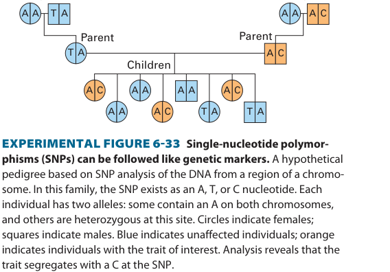
  <figcaption>实验图 6-33 单核苷酸多态性（SNP）可以像遗传标记一样被追踪。基于染色体某区域 DNA 的 SNP 分析的假设家系图。在此家族中，SNP 存在为 A、T 或 C 核苷酸。每个个体有两个等位基因：一些在两条染色体上都含有 A，而另一些在此位点是杂合的。圆圈表示女性；方块表示男性。蓝色表示未患病个体；橙色表示具有目标性状的个体。分析揭示该性状与 SNP 处的 C 共分离。</figcaption>
  <table class="glossary"><caption>图内标签对照</caption>
  <tr><td class="gl-en">Single-nucleotide polymorphisms</td><td class="gl-zh">单核苷酸多态性</td></tr>
  <tr><td class="gl-en">SNPs</td><td class="gl-zh">SNPs</td></tr>
  <tr><td class="gl-en">Genetic markers</td><td class="gl-zh">遗传标记</td></tr>
  <tr><td class="gl-en">Pedigree</td><td class="gl-zh">系谱</td></tr>
  <tr><td class="gl-en">Heterozygous</td><td class="gl-zh">杂合</td></tr>
  <tr><td class="gl-en">Allele</td><td class="gl-zh">等位基因</td></tr>
  </table>
</figure>
<p>等位基因之间距离的精确度就越高。大多数家族研究最多有约100个个体，可以在其中测试疾病基因与一组DNA多态性之间的连锁。这个个体数量将此类定位研究的分辨率实际上限定在约1厘摩，即约7.5×105 bp的物理距离。一种称为连锁不平衡的现象是另一种定位策略的基础，这种策略通常可以提供更高的分辨率。该方法可用于在特定人群中常见、由许多代之前发生的单次突变引起的遗传病。突变发生时祖先染色体携带的DNA多态性统称为该染色体的单倍型。随着疾病等位基因从一代传递到下一代，只有最接近疾病基因的多态性不会通过重组与之分离。经过许多代后，包含疾病基因的区域将显而易见，因为它将是唯一携带历经多代保守的祖先染色体单倍型的染色体区域（图6-34）。通过评估群体中所有患病个体中特定标记的分布，遗传学家可以鉴定与疾病紧密相关的DNA标记，从而将疾病相关基因定位到相对较小的区域。在理想情况下，连锁不平衡研究可以将定位研究的分辨率提高到0.1厘摩以下。该方法的解析能力来自其能够确定多态性和疾病等位基因自疾病等位基因首次出现在祖先染色体上以来，是否曾经被减数分裂重组事件分开过——在某些情况下，这相当于找到与疾病基因如此紧密连锁的标记，以至于即使在数百次减数分裂之后，它们也从未被重组分开过。</p>
<p>Chromosome with different haplotype</p>
<p>New mutation in particular haplotype</p>
<p>Generation</p>
<p>1 m</p>
<p>Meiotic recombination</p>
<p>Generation</p>
<p>2</p>
<p>Generation</p>
<figure id="fig-6-34">
  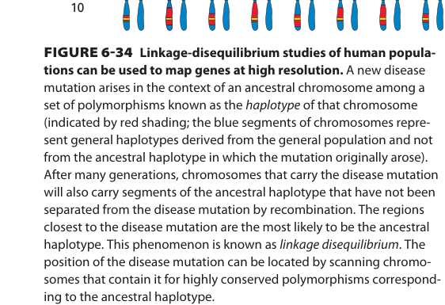
  <figcaption>图 6-34 人类群体的连锁不平衡研究可用于高分辨率定位基因。一个新的疾病突变出现在祖先染色体的背景下，该染色体的多态性集合称为该染色体的单倍型（以红色阴影表示；染色体的蓝色片段代表来自一般群体的通用单倍型，而非突变最初产生的祖先单倍型）。经过许多代后，携带疾病突变的染色体也将携带尚未通过重组与疾病突变分离的祖先单倍型片段。最接近疾病突变的区域最可能是祖先单倍型。这种现象称为连锁不平衡。疾病突变的位置可以通过扫描含有该突变的染色体中与祖先单倍型对应的高度保守多态性来定位。</figcaption>
  <table class="glossary"><caption>图内标签对照</caption>
  <tr><td class="gl-en">Linkage disequilibrium</td><td class="gl-zh">连锁不平衡</td></tr>
  <tr><td class="gl-en">Haplotype</td><td class="gl-zh">单倍型</td></tr>
  <tr><td class="gl-en">Ancestral chromosome</td><td class="gl-zh">祖先染色体</td></tr>
  <tr><td class="gl-en">Recombination</td><td class="gl-zh">重组</td></tr>
  <tr><td class="gl-en">Disease mutation</td><td class="gl-zh">疾病突变</td></tr>
  <tr><td class="gl-en">Polymorphisms</td><td class="gl-zh">多态性</td></tr>
  </table>
</figure>
<p>需要进一步分析以在克隆DNA中定位疾病基因</p>
<p>尽管连锁定位通常可以将人类疾病基因定位到包含约105 bp的区域，但这样大小的区域中可能有多达10个不同的基因。定位研究的最终目标是在克隆的DNA片段中定位目标基因，然后确定该片段的核苷酸序列。染色体遗传图谱和对应于有序质粒克隆集的物理图谱以及核苷酸序列的相对尺度如图6-35所示。</p>
<p>进一步在基因组中定位疾病基因的一种策略是鉴定所研究区域中DNA编码的mRNA。比较正常个体和患病个体组织中的基因表达可能提示特定疾病基因正常表达的组织。例如，一个表型上影响肌肉但不影响其他组织的突变，可能位于仅在肌肉组织中表达的基因中。正常个体和患病个体中mRNA的表达通常通过Northern印迹、微阵列分析或标记DNA或RNA对组织切片的原位杂交</p>
<p>of labeled DNA or RNA to tissue sections. Northern blots, in situ hybridization, or microarray experiments permit comparison of both the level of expression and the sizes of mRNAs in mutant and wild-type tissues. Although the sensi- tivity of in situ hybridization is lower than that of Northern blot analysis, it can be very helpful in identifying an mRNA that is expressed at low levels in a given tissue but at very high levels in a subclass of cells within that tissue. An mRNA that is altered or missing in various individuals affected with a disease compared with wild-type individuals would be an excellent candidate for encoding the protein whose disrupted function causes that disease.</p>
<p>In many cases, point mutations that give rise to disease- causing alleles result in no detectable change in the level of expression or electrophoretic mobility of mRNAs. Thus, if comparison of the mRNAs expressed in normal and affected individuals reveals no detectable differences in the candidate mRNAs, a search for point mutations in the DNA regions encoding the mRNAs is undertaken. Now that highly effi- cient methods for sequencing DNA are available, research- ers frequently determine the sequences of candidate regions of DNA isolated from affected individuals to identify point mutations. The overall strategy is to search for a coding se- quence that consistently shows possibly deleterious altera- tions in DNA from individuals that exhibit the disease. A limitation of this approach is that the region near the af- fected gene may carry naturally occurring polymorphisms unrelated to the gene of interest. Such polymorphisms, not functionally related to the disease, can lead to misidentifica- tion of the DNA fragment carrying the gene of interest. For this reason, the more mutant alleles available for analysis, the more likely that a gene will be correctly identified.</p>
<p>Many Inherited Diseases Result from Multiple Genetic Defects</p>
<p>Most of the inherited human diseases that are now under- stood at the molecular level are monogenic diseases; that is, a clearly discernible disease state is produced by a defect in a single gene. Monogenic diseases caused by mutation in one specific gene exhibit one of the characteristic inheritance patterns shown in Figure 6-32. The genes associated with most of the common monogenic diseases have already been mapped using DNA-based markers as described previously.</p>
<p>However, many other inherited diseases show more com- plicated patterns of inheritance, making the identification of the underlying genetic cause much more difficult. One type of added complexity that is frequently encountered is genetic heterogeneity. In such cases, mutations in any one of several different genes can cause the same disease. For example, reti- nitis pigmentosa, which is characterized by degeneration of the retina usually leading to blindness, can be caused by mu- tations in any one of more than 60 different genes. In human linkage studies, data from multiple families must usually be combined to determine whether a statistically significant linkage exists between a disease gene and known molecu- lar markers. Genetic heterogeneity such as that exhibited by</p>
<p>LEVEL OF RESOLUTION:</p>
<figure id="fig-6-35">
  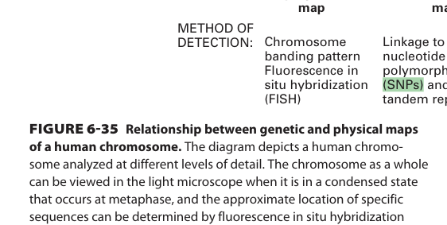
  <figcaption>图 6-35 人类染色体遗传图谱与物理图谱之间的关系。该图描绘了在不同细节水平上分析的人类染色体。当染色体处于有丝分裂中期出现的浓缩状态时，可以在光学显微镜下观察整条染色体，并且可以通过荧光原位杂交（FISH）确定特定序列的大致位置。</figcaption>
  <table class="glossary"><caption>图内标签对照</caption>
  <tr><td class="gl-en">Chromosome banding pattern</td><td class="gl-zh">染色体带型</td></tr>
  <tr><td class="gl-en">Fluorescence in situ hybridization</td><td class="gl-zh">荧光原位杂交</td></tr>
  <tr><td class="gl-en">FISH</td><td class="gl-zh">FISH（荧光原位杂交）</td></tr>
  <tr><td class="gl-en">Linkage to SNPs</td><td class="gl-zh">SNP连锁</td></tr>
  <tr><td class="gl-en">Genetic map</td><td class="gl-zh">遗传图谱</td></tr>
  <tr><td class="gl-en">Physical map</td><td class="gl-zh">物理图谱</td></tr>
  <tr><td class="gl-en">Metaphase</td><td class="gl-zh">中期</td></tr>
  </table>
</figure>
<p>Linkage to single- nucleotide polymorphisms (SNPs) and short tandem repeats (STRs)</p>
<p>来确定。Northern印迹、原位杂交或微阵列实验可以比较突变型和野生型组织中mRNA的表达水平和大小。尽管原位杂交的灵敏度低于Northern印迹分析，但它在鉴定在给定组织中低水平表达但在该组织内某一亚类细胞中高水平表达的mRNA方面非常有帮助。与野生型个体相比，在多个患病个体中改变或缺失的mRNA将是编码其功能破坏导致该疾病的蛋白质的极好候选者。</p>
<p>在许多情况下，导致致病等位基因的点突变不会引起mRNA表达水平或电泳迁移率的可检测变化。因此，如果比较正常个体和患病个体中表达的mRNA未发现候选mRNA的可检测差异，则需对编码mRNA的DNA区域进行点突变搜索。现在高效的DNA测序方法已经可用，研究人员经常确定从患病个体分离的候选DNA区域的序列，以鉴定点突变。总体策略是寻找在患病个体DNA中一致显示可能有害改变的编码序列。这种方法的一个局限性是受影响基因附近的区域可能携带与目标基因无关的天然多态性。这类与疾病功能上无关的多态性可能导致错误鉴定携带目标基因的DNA片段。因此，可用于分析的突变等位基因越多，正确鉴定基因的可能性就越大。</p>
<p>许多遗传病由多重遗传缺陷引起</p>
<p>目前在分子水平上被理解的大多数人类遗传病是单基因疾病；即由单个基因缺陷产生清晰可辨的疾病状态。由单个特定基因突变引起的单基因疾病表现出图6-32中所示的一种特征性遗传模式。大多数常见单基因疾病的相关基因已使用前述基于DNA的标记进行了定位。</p>
<p>然而，许多其他遗传病表现出更复杂的遗传模式，使得鉴定潜在遗传原因变得更加困难。一种经常遇到的额外复杂性是遗传异质性。在这种情况下，几个不同基因中任何一个的突变都可能导致相同的疾病。例如，视网膜色素变性以视网膜退化为特征，通常导致失明，可由60多个不同基因中任何一个的突变引起。在人类连锁研究中，通常必须合并来自多个家族的数据，以确定疾病基因与已知分子标记之间是否存在统计学上显著的连锁。像</p>
<p>Polymorphic markers Plasmid or BAC clones</p>
<p>G A T C G</p>
<p>T T C A G A A T C A G</p>
<p>1 cM</p>
<p>750 kb</p>
<p>T C C A C G</p>
<p>T A T T C G</p>
<p>T A G G</p>
<p>T</p>
<p>Physical</p>
<p>map Linkage</p>
<p>Sequence</p>
<p>map</p>
<p>DNA sequencing Hybridization to plasmid clones</p>
<p>(FISH). At the next level of detail, genetic traits can be mapped relative to DNA-based genetic markers. Local segments of the chromosome can be analyzed at the level of DNA sequences identified by Southern blotting or PCR. Finally, important genetic differences can be most precisely defined by differences in the nucleotide sequence of the chromosomal DNA.</p>
<p>视网膜色素变性所表现出的这种遗传异质性可能会混淆这种方法，因为来自一个家族的定位数据中的任何统计趋势往往会被来自另一个具有不相关致病基因的家族的数据所抵消。</p>
<p>人类遗传学家使用了两种不同的方法来鉴定与视网膜色素变性相关的众多基因。第一种方法依赖于对特别大的家族进行定位研究，这些家族包含足够多的患病个体，能够为已知DNA多态性与单个致病基因之间的连锁提供统计学上显著的证据。这类研究中鉴定的基因表明，导致视网膜色素变性的几种突变位于编码在视网膜中丰富表达的蛋白质的基因中。根据这一线索，遗传学家在筛选其他视网膜色素变性患者时，将注意力集中在那些在视网膜中高表达的基因上。这种利用额外信息将筛选工作聚焦于候选基因子集的方法，导致了在编码视网膜蛋白的许多不同基因中鉴定出额外的罕见致病突变。</p>
<p>糖尿病、心脏病、肥胖症、癌症易感性以及各种至少具有某些遗传特性的精神疾病，给人类疾病的遗传解析带来了进一步的复杂性。这些疾病和许多其他疾病可以被视为多基因疾病，即多个基因的等位基因在个体内共同作用，影响疾病的发生和严重程度。如何系统地定位人类复杂的多基因性状，是当今人类遗传学中最重要和最具挑战性的问题之一。</p>
<p>研究表现遗传异质性或多基因疾病的最有前景的方法之一，是使用称为全基因组关联研究（GWAS）的方法，寻找特定染色体区域的遗传与患病倾向之间的统计相关性。通过GWAS鉴定致病基因</p>
<p>依赖于前面描述的连锁不平衡现象。如果一个导致疾病甚至仅使个体易患疾病的等位基因在人类进化过程中相对近期地起源，那么该致病等位基因将倾向于与其染色体位置附近的特定DNA标记集保持关联。通过检查特定疾病患者群体以及无病对照群体中的大量DNA标记，研究人员可以鉴定倾向于与疾病发生相关的染色体区域。这种方法的力量在于计算机算法，它扫描大量个体的数据，以鉴定疾病与特定基因组区域遗传之间微小但显著的相关性。然后可以使用基因组测序和其他方法鉴定这些区域中可能的致病突变。通过这种方式，可以鉴定在某些（但不一定是所有）患病个体中导致疾病易感性的等位基因。尽管GWAS可以是鉴定候选疾病基因的有力工具，但还需要大量进一步的工作来确定携带特定突变的个体如何可能易患该疾病。</p>
<p>在实验生物中建立人类疾病模型也可能有助于解析肥胖或糖尿病等复杂性状的遗传学。例如，在小鼠中进行大规模受控育种实验可以鉴定与人类类似疾病相关的小鼠基因。这类研究中鉴定的小鼠基因的人类直系同源基因将是参与相应人类疾病的可能候选基因。然后可以检查人类群体的DNA，以确定候选基因的特定等位基因是否倾向于在患病个体中存在而在未患病个体中缺失。这种"候选基因"方法目前正被广泛用于搜索可能导致人类主要多基因疾病的基因。</p>
<p>KEY CONCEPTS OF SECTION 6.4</p>
<p>Locating and Identifying Human Disease Genes</p>
<p>- 人类的遗传病和其他性状表现出三种主要的遗传模式：常染色体显性、常染色体隐性和X连锁隐性（见图6-32）。</p>
<p>- 人类疾病和其他性状的基因可以通过确定其与基因组中位置已知的标记的共分离来定位。基因越接近特定标记，它们共分离的可能性就越大。</p>
<p>- 高精度的人类基因定位需要沿染色体分布数千个分子标记。最有用的标记是个体之间非编码基因组区域中的DNA序列差异（多态性）。</p>
<p>- 在人类基因定位中有用的DNA多态性包括单核苷酸多态性（SNPs）和短串联重复序列（STRs）。</p>
<p>- 连锁定位通常可以将人类疾病基因定位到包含多达10个基因的染色体区域。要在该候选区域内鉴定目标基因，通常需要进行表达分析以及比较野生型和患病个体之间的DNA序列。</p>
<p>- 一些遗传病可能由不同个体中不同基因的突变引起（遗传异质性）。其他疾病的发生和严重程度取决于同一个体中多个基因突变等位基因的存在（多基因性状）。与此类疾病相关的基因可以通过全基因组关联研究寻找疾病与特定染色体位置之间的统计相关性来定位。</p>
<h2 id="sec-6.5">6.5 真核生物中特定基因功能的失活</h2>
<p>近年来，DNA 和蛋白质序列的阐明使得许多基因得以鉴定，这得益于基因组 DNA 中的序列模式以及编码蛋白与已知功能蛋白的序列相似性。如第 8 章所述，通过序列搜索鉴定的蛋白质的一般功能可以通过与已知蛋白质进行类比来预测。然而，在缺乏相应基因突变形式的情况下，这些"新"蛋白质的精确体内作用可能仍不清楚。在本节中，我们描述了在生物体基因组中破坏特定基因正常功能的几种方法。对所得突变表型的分析通常有助于揭示正常基因及其编码蛋白的体内功能。</p>
<p>这些基因失活技术基于三种基本方法：(1) 用其他序列替换正常基因，(2) 引入一个等位基因，其编码蛋白抑制已表达的正常蛋白的功能，以及 (3) 促进基因转录的 mRNA 的降解。在基于第一种方法的技术中，正常内源基因被修饰，但在其他方法中则不被修饰。</p>
<p>研究人员通常希望研究某个基因特定等位基因的效应，而不是观察基因完全失活的效果。例如，测试一个癌基因的显性等位基因对细胞分裂的影响可能需要用该显性等位基因替换正常的基因拷贝之一。直到最近，这种精确的基因组编辑几乎是无法实现的，但现在，一种基于细菌中用于对噬菌体 DNA 进行序列特异性切割的系统的变体已被改造，使得可以在包括哺乳动物在内的多种生物体的细胞中进行小的缺失，甚至特定的序列改变，正如我们将在本节末尾看到的那样。</p>
<p>正常酵母基因可以通过同源重组替换为突变等位基因</p>
<p>修饰酿酒酵母（S. cerevisiae）的基因组特别容易，原因有两个：酵母细胞在某些条件下容易摄取外源 DNA，并且引入的 DNA 在受体细胞中能够高效地与同源染色体位点进行交换。这种特异性的、靶向的相同 DNA 区段的重组允许将酵母染色体中的任何基因替换为突变等位基因。（正如我们在第 6.1 节中看到的，同源染色体之间的重组也在减数分裂过程中自然发生。）</p>
<p>在以这种方式破坏酵母基因的一种常用方法中，PCR 被用来生成一个含有选择标记的破坏构建体，随后将其转染到酵母细胞中。如图 6-36a 所示，用于 PCR 扩增选择标记的两条引物各被设计为包含约 20 个与待替换酵母基因两侧序列相同的核苷酸。由此产生的扩增构建体包含选择标记（例如 kanMX 基因，它如同 neo^r 一样赋予对 G-418 的抗性），其两端各有约 20 bp 与目标酵母基因末端匹配的序列。转化的二倍体酵母细胞中，如果两个拷贝的目标内源基因之一已被破坏构建体替换，则可以通过其对 G-418 的抗性或其他可选择表型来鉴定。这些杂合二倍体酵母细胞通常无论目标基因的功能如何都能正常生长，但从这些细胞产生的半数单倍体孢子将只携带破坏的等位基因（图 6-36b）。如果一个基因对生存能力至关重要，那么携带破坏等位基因的孢子将无法存活。</p>
<p>通过这种方法破坏基因在评估通过分析酿酒酵母全基因组序列鉴定出的蛋白质的作用方面特别有用（见第 8 章）。约 6000 个基因中的每一个都已在二倍体中使用 kanMX 构建体进行了破坏，并且也产生了单倍体孢子中的基因破坏。这些分析表明，约 6000 个酵母基因破坏中有约 4500 个可以存在于可存活的单倍体孢子中，揭示了出乎意料的大量明显非必需的基因。在某些情况下，破坏某个特定基因可能产生微妙的缺陷，这些缺陷不会损害在实验室条件下生长的酵母细胞的生存能力。或者，携带破坏基因的细胞可能由于备用或补偿途径的运作而能够存活。为了研究这种可能性，酵母遗传学家目前正在测试所有可能的双突变组合，以寻找可能揭示具有冗余功能的非必需基因的合成致死效应（见图 6-9c）。</p>
<p>基因可以置于实验调控的启动子控制之下</p>
<p>尽管破坏细胞生长所需的必需基因会产生无法存活的孢子，但这种方法提供的信息</p>
<p>(a)</p>
<p>20-nt 侧翼序列</p>
<p>20-nt 侧翼序列</p>
<p>5' 3' 目标酵母基因</p>
<p>5' 3'</p>
<p>引物 2 DNA 合成</p>
<p>5' 3' 3' 5'</p>
<p>kanMX</p>
<p>引物 1</p>
<p>DNA 合成</p>
<p>PCR</p>
<p>破坏构建体</p>
<p>kanMX</p>
<p>(b)</p>
<p>二倍体细胞</p>
<p>用破坏构建体转化二倍体细胞</p>
<p>同源重组</p>
<p>选择 G-418 抗性</p>
<p>孢子形成</p>
<figure id="fig-6-36">
  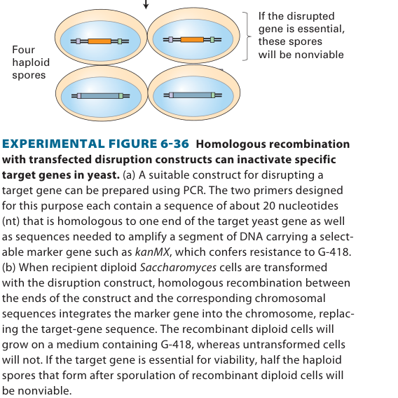
  <figcaption>实验图 6-36 用转染的破坏构建体进行同源重组可以使酵母中的特定靶基因失活。（a）可以使用 PCR 制备用于破坏靶基因的合适构建体。为此目的设计的两个引物各自包含一段约 20 个核苷酸（nt）的序列，该序列与靶酵母基因的一端同源，以及扩增携带可选择标记基因（如 kanMX，其赋予对 G-418 的抗性）的 DNA 片段所需的序列。（b）当用破坏构建体转化受体二倍体酿酒酵母细胞时，构建体末端与相应染色体序列之间的同源重组将标记基因整合到染色体中，替换靶基因序列。重组二倍体细胞将在含 G-418 的培养基上生长，而未转化细胞则不会。如果靶基因对生存力是必需的，那么在重组二倍体细胞孢子形成后形成的单倍体孢子中，一半将不能存活。</figcaption>
  <table class="glossary"><caption>图内标签对照</caption>
  <tr><td class="gl-en">Homologous recombination</td><td class="gl-zh">同源重组</td></tr>
  <tr><td class="gl-en">Gene disruption</td><td class="gl-zh">基因破坏</td></tr>
  <tr><td class="gl-en">Haploid spores</td><td class="gl-zh">单倍体孢子</td></tr>
  <tr><td class="gl-en">Selectable marker</td><td class="gl-zh">选择标记</td></tr>
  <tr><td class="gl-en">kanMX</td><td class="gl-zh">kanMX（选择标记）</td></tr>
  <tr><td class="gl-en">G-418</td><td class="gl-zh">G-418（抗生素）</td></tr>
  <tr><td class="gl-en">Saccharomyces</td><td class="gl-zh">酿酒酵母（Saccharomyces）</td></tr>
  <tr><td class="gl-en">Diploid</td><td class="gl-zh">二倍体</td></tr>
  <tr><td class="gl-en">Sporulation</td><td class="gl-zh">孢子形成</td></tr>
  <tr><td class="gl-en">Essential gene</td><td class="gl-zh">必需基因</td></tr>
  </table>
</figure>
<p>很少涉及所编码蛋白在酵母细胞中的实际作用。为了更多地了解特定基因如何促进细胞生长和生存能力，研究人员必须能够在生长中的细胞群体中选择性地失活该基因。一种实现此目的的方法使用受调控的启动子来选择性关闭一个必需基因的转录。</p>
<p>用于此目的的一个有用启动子是酵母 GAL1 启动子，它在半乳糖上生长的细胞中活跃，但在葡萄糖上生长的细胞中完全失活。在这种方法中，一个必需基因（基因 X）的编码序列被连接到 GAL1 启动子上，并插入酵母穿梭载体（见图 6-15a）。然后将重组载体引入基因 X 已被破坏的单倍体酵母细胞中。转化的单倍体细胞将在半乳糖培养基上生长，因为载体上的正常基因 X 拷贝在半乳糖存在下得以表达。然而，当细胞转移到含葡萄糖的培养基中时，基因 X 不再被转录；随着细胞分裂，编码蛋白 X 的量逐渐下降，最终达到一种模拟功能丧失突变的耗竭状态。转移到葡萄糖培养基后这些细胞表型的变化可能提示哪些细胞过程依赖于必需基因 X 编码的蛋白。</p>
<p>在这种方法的早期应用中，研究人员探索了 Hsp70 基因在酵母中的功能。在所有四个冗余 Hsp70 基因均被破坏的单倍体细胞中，除非细胞携带一个含有可在半乳糖培养基上从 GAL1 启动子表达的 Hsp70 基因拷贝的载体，否则无法存活。在转移到葡萄糖培养基后，携带载体的细胞最终因 Hsp70 活性不足而停止生长。对这些垂死细胞的仔细检查揭示了它们的分泌蛋白不再能进入内质网（ER）。这项研究首次提供了 Hsp70 蛋白在分泌蛋白转位进入 ER 中发挥意想不到作用的证据，这一过程将在第 13 章中详细讨论。</p>
<p>特定基因可以在小鼠生殖系中被永久性失活</p>
<p>许多用于破坏酵母基因的方法可以应用于高等真核生物的基因。这些被改变的基因可以通过同源重组引入生殖系以产生基因敲除动物，或简称为"敲除"。特定基因被破坏的敲除小鼠是研究哺乳动物发育、行为和生理学的强大实验系统。它们也可用于研究某些人类遗传疾病的分子基础。</p>
<p>敲除小鼠通过两阶段程序产生。在第一阶段，含有特定目标基因的破坏等位基因的 DNA 构建体被引入胚胎干（ES）细胞。这些细胞来源于囊胚，可以在培养中生长许多代</p>
<p>（见图 21-7）。在一小部分转染细胞中，引入的 DNA 与目标基因发生同源重组，尽管在非同源染色体位点的重组发生频率要高得多。为了能够选择发生同源重组和基因靶向插入的细胞，引入 ES 细胞的重组 DNA 构建体包含两个选择标记基因（图 6-37）。其中一个基因（neo^r）赋予对 G-418 的抗性，被插入到目标基因（X）内部，从而破坏它。另一个选择标记基因，来自单纯疱疹病毒的胸苷激酶基因（tk^HSV），被插入到构建体中目标基因序列的外部。在重组 DNA 构建体与染色体同源位点之间发生重组的 ES 细胞将含有 neo^r 但不会整合 tk^HSV。由于 tk^HSV 赋予对细胞毒性核苷酸类似物更昔洛韦的敏感性，所需的重组 ES 细胞可以通过它们在 G-418 和更昔洛韦同时存在下的存活能力来筛选。在这些细胞中，基因 X 的一个等位基因将被破坏。</p>
<p>在敲除小鼠生产的第二阶段，基因 X 敲除突变杂合的 ES 细胞被注射到受体野生型小鼠囊胚中，随后囊胚被移植到假孕雌性小鼠体内（图 6-38）。所产生的后代将是嵌合体，含有来自移植的 ES 细胞和宿主细胞两者的组织。如果 ES 细胞同时是一个可见标记性状（例如毛色）的纯合子，则可以轻松鉴定出 ES 细胞存活并增殖的嵌合后代。然后将嵌合小鼠与对该标记性状的另一个等位基因纯合的小鼠交配，以确定敲除突变是否已被整合到生殖系中。最后，将各为敲除等位基因杂合的小鼠交配，将产生敲除突变纯合的后代。</p>
<p>敲除小鼠模拟某些人类疾病的发展可以通过囊性纤维化来说明。通过第 6.4 节讨论的方法，导致这种疾病的隐性突变被证明位于一个称为 CFTR 的基因中，该基因编码一个氯离子通道。利用克隆的野生型人类 CFTR 基因，研究人员分离了同源的小鼠基因，并随后在其中引入了突变。然后使用基因敲除技术产生纯合突变小鼠，这些小鼠表现出与患有囊性纤维化的人类相似的症状（即表型），包括上皮细胞功能紊乱。这些敲除小鼠目前正被用作研究这种遗传疾病和开发有效疗法的模型系统。■</p>
<p>体细胞重组可以使特定组织中的基因失活</p>
<p>研究人员通常有兴趣研究敲除突变在小鼠特定组织中的效应，</p>
<p>(a) 携带敲除突变的 ES 细胞的形成</p>
<p>neo^r tk^HSV</p>
<p>基因 X 替换构建体</p>
<p>非同源重组</p>
<p>同源重组</p>
<p>ES 细胞</p>
<p>ES 细胞</p>
<p>ES 细胞 DNA</p>
<p>ES 细胞 DNA 基因 X</p>
<p>其他基因</p>
<p>基因靶向插入</p>
<p>随机插入</p>
<p>基因 X 突变</p>
<p>基因 X 无突变</p>
<p>细胞对 G-418 和更昔洛韦均有抗性</p>
<p>细胞对 G-418 有抗性但对更昔洛韦敏感</p>
<p>(b) 重组 ES 细胞的正选择和负选择</p>
<p>非重组细胞</p>
<p>随机插入的重组体</p>
<p>基因靶向插入的重组体</p>
<p>用 G-418 处理（正选择）</p>
<p>用更昔洛韦处理（负选择）</p>
<p>基因 X 靶向破坏的 ES 细胞</p>
<p>或在发育的特定阶段，或两者兼有。然而，携带生殖系敲除的小鼠可能在许多组织中存在缺陷，或在达到感兴趣的发育阶段之前死亡。为了解决这个问题，小鼠遗传学家设计了一种巧妙的技术，在特定类型的体细胞中或在发育过程中的特定时间使目标基因失活。</p>
<p>该技术利用位点特异性 DNA 重组位点（称为 loxP 位点）和催化它们之间重组的酶 Cre。loxP-Cre 重组系统来源于噬菌体 P1，但这种位点特异性的</p>
<figure id="fig-6-37">
  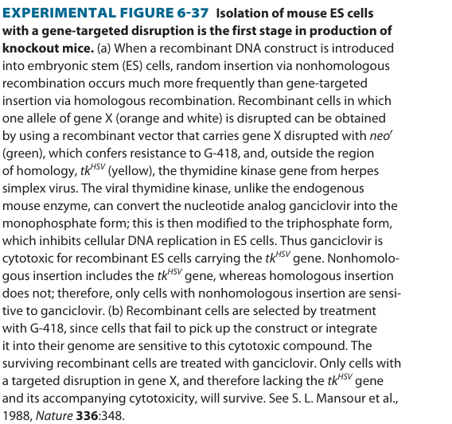
  <figcaption>实验图 6-37 分离具有基因靶向破坏的小鼠 ES 细胞是产生敲除小鼠的第一阶段。（a）当重组 DNA 构建体被引入胚胎干（ES）细胞时，通过非同源重组的随机插入比通过同源重组的基因靶向插入发生得更频繁。可以通过使用携带被 neo^r（绿色）破坏的基因 X（橙色和白色）的重组载体来获得基因 X 的一个等位基因被破坏的重组细胞，neo^r 赋予对 G-418 的抗性，以及在同源区域之外的 HSV tk（黄色），即来自单纯疱疹病毒的胸苷激酶基因。病毒胸苷激酶与内源性小鼠酶不同，可以将核苷酸类似物更昔洛韦转化为单磷酸形式；然后被修饰为三磷酸形式，抑制 ES 细胞中的细胞 DNA 复制。因此，更昔洛韦对携带 HSV tk 基因的重组 ES 细胞具有细胞毒性。非同源插入包括 HSV tk 基因，而同源插入不包括；因此，只有非同源插入的细胞对更昔洛韦敏感。（b）通过用 G-418 处理选择重组细胞，因为未能摄取构建体或将其整合到基因组中的细胞对这种细胞毒性化合物敏感。存活的重组细胞用更昔洛韦处理。只有基因 X 中具有靶向破坏、因此缺乏 HSV tk 基因及其伴随的细胞毒性的细胞才能存活。参见 S. L. Mansour et al., Nature 1988, 336:348。</figcaption>
  <table class="glossary"><caption>图内标签对照</caption>
  <tr><td class="gl-en">Embryonic stem cells</td><td class="gl-zh">胚胎干细胞</td></tr>
  <tr><td class="gl-en">ES cells</td><td class="gl-zh">ES细胞</td></tr>
  <tr><td class="gl-en">Gene-targeted disruption</td><td class="gl-zh">基因靶向破坏</td></tr>
  <tr><td class="gl-en">Homologous recombination</td><td class="gl-zh">同源重组</td></tr>
  <tr><td class="gl-en">Nonhomologous recombination</td><td class="gl-zh">非同源重组</td></tr>
  <tr><td class="gl-en">Knockout mice</td><td class="gl-zh">基因敲除小鼠</td></tr>
  <tr><td class="gl-en">neo</td><td class="gl-zh">neo（新霉素抗性基因）</td></tr>
  <tr><td class="gl-en">HSV tk</td><td class="gl-zh">HSV tk（单纯疱疹病毒胸苷激酶）</td></tr>
  <tr><td class="gl-en">Ganciclovir</td><td class="gl-zh">更昔洛韦</td></tr>
  <tr><td class="gl-en">G-418</td><td class="gl-zh">G-418（抗生素）</td></tr>
  <tr><td class="gl-en">Negative selection</td><td class="gl-zh">负筛选</td></tr>
  <tr><td class="gl-en">Positive selection</td><td class="gl-zh">正筛选</td></tr>
  </table>
</figure>
<p>重组系统在置于小鼠细胞中时也能发挥作用。该技术的一个基本特征是 Cre 的表达受细胞类型特异性启动子的控制。在通过图 6-39 描绘的程序产生的 loxP-Cre 小鼠中，目标基因（X）的失活仅发生在 cre 基因的启动子活跃的细胞中。</p>
<p>该技术的一项早期应用提供了强有力的证据，证明某种特定的神经递质受体对学习和记忆至关重要。先前的药理学和生理学研究表明，正常学习需要海马体（大脑的一个区域）中的 NMDA 类谷氨酸受体。但是，编码 NMDA 受体亚基的基因被敲除的小鼠在新生期死亡，无法分析该受体在学习中的作用。按照图 6-39 中的方案，研究人员产生了在海马体中受体亚基基因被失活但在其他组织中表达的小鼠。这些小鼠存活到成年，并表现出学习和记忆缺陷，从而确认了这些受体在小鼠将经验编码为记忆的能力中的作用。</p>
<p>显性负效等位基因可以抑制某些基因的功能</p>
<p>在二倍体生物中，如第 6.1 节所述，隐性等位基因的表型效应仅在纯合个体中表达，而显性等位基因在杂合子中表达。因此，一个个体必须携带两个拷贝的隐性等位基因，但只需一个拷贝的显性等位基因，即可表现出相应的表型。</p>
<p>将 ES 细胞注射到早期胚胎的囊胚腔中</p>
<p>1</p>
<p>棕色小鼠 (A/A, X–/X+)</p>
<p>黑色小鼠 (a/a, X+/X+)</p>
<p>4.5 天囊胚</p>
<p>通过手术将胚胎移植到假孕雌性体内</p>
<p>2</p>
<p>代孕母鼠</p>
<p>可能的后代</p>
<p>嵌合体</p>
<p>黑色</p>
<p>选择嵌合小鼠与野生型黑色小鼠交配</p>
<p>×</p>
<p>a/X+ 可能的生殖细胞：</p>
<p>所有生殖细胞：</p>
<p>A/X+; A/X–; a/X+</p>
<p>ES 细胞来源的后代将是棕色</p>
<p>3</p>
<p>a/a, X+/X+ A/a, X+/X+ A/a, X–/X+</p>
<p>ES 细胞来源生殖细胞的后代</p>
<p>筛选棕色后代 DNA 以鉴定 X–/X+ 杂合子</p>
<p>4</p>
<p>5</p>
<p>将 X–/X+ 杂合子交配</p>
<p>筛选后代 DNA 以鉴定 X–/X– 纯合子</p>
<p>6</p>
<p>敲除小鼠</p>
<p>我们已经看到，如何通过将同一敲除突变杂合的个体进行交配，可以产生对给定隐性敲除突变纯合的小鼠品系（见图 6-38）。然而，在培养的动物细胞实验中，通常很难破坏一个基因的两个拷贝以产生突变表型。此外，产生两个基因拷贝均被突变的品系的困难通常因存在功能相似的</p>
<figure id="fig-6-38">
  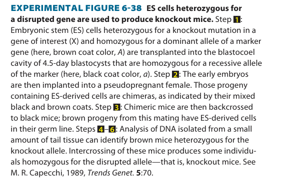
  <figcaption>实验图 6-38 对破坏基因杂合的 ES 细胞用于产生敲除小鼠。步骤 1：将目标基因（X）敲除突变杂合、标记基因 A 的显性等位基因（此处为棕色毛色）纯合的胚胎干（ES）细胞移植到 4.5 天囊胚的囊胚腔中，该囊胚对标记基因的隐性等位基因（此处为黑色毛色，a）是纯合的。步骤 2：然后将早期胚胎植入假孕雌性小鼠体内。那些含有 ES 衍生细胞的后代是嵌合体，如其混合的黑色和棕色毛皮所示。步骤 3：然后将嵌合小鼠与黑色小鼠回交；此交配产生的棕色后代在其生殖系中具有 ES 衍生细胞。步骤 4-6：从少量尾部组织分离的 DNA 分析可以鉴定对敲除等位基因杂合的棕色小鼠。这些小鼠的互交产生一些对破坏等位基因纯合的个体——即敲除小鼠。参见 M. R. Capecchi, Trends Genet. 1989, 5:70。</figcaption>
  <table class="glossary"><caption>图内标签对照</caption>
  <tr><td class="gl-en">Knockout mice</td><td class="gl-zh">基因敲除小鼠</td></tr>
  <tr><td class="gl-en">ES cells</td><td class="gl-zh">ES细胞</td></tr>
  <tr><td class="gl-en">Chimera</td><td class="gl-zh">嵌合体</td></tr>
  <tr><td class="gl-en">Blastocyst</td><td class="gl-zh">囊胚</td></tr>
  <tr><td class="gl-en">Germ line</td><td class="gl-zh">生殖系</td></tr>
  <tr><td class="gl-en">Coat color marker</td><td class="gl-zh">毛色标记</td></tr>
  <tr><td class="gl-en">Heterozygous</td><td class="gl-zh">杂合</td></tr>
  <tr><td class="gl-en">Homozygous</td><td class="gl-zh">纯合</td></tr>
  <tr><td class="gl-en">Backcross</td><td class="gl-zh">回交</td></tr>
  <tr><td class="gl-en">Intercross</td><td class="gl-zh">互交</td></tr>
  </table>
</figure>
<p>相关基因而加剧，这些基因也必须被失活才能揭示可观察的表型。</p>
<p>对于某些基因，产生纯合敲除突变体的困难可以通过使用携带显性负效突变的等位基因来避免。这些等位基因是遗传显性的；也就是说，即使在携带野生型基因拷贝的细胞中，它们也能产生突变表型。然而，与其他类型的显性等位基因不同，显性负效等位基因产生的表型等同于功能丧失突变的表型。</p>
<p>对于多种基因，已经鉴定出了有用的显性负效等位基因，它们可以通过转染引入培养细胞，或引入小鼠或其他生物的生殖系中。在这两种情况下，引入的基因通过非同源重组整合到基因组中。这种随机插入的基因称为转基因；携带它们的细胞或生物体称为转基因的。携带显性负效等位基因的转基因通常被设计为由受调控的启动子控制，这允许突变蛋白在特定组织或特定时间表达。如上所述，外源 DNA 通过非同源重组的随机整合发生的频率远高于通过同源重组的插入。因此，转基因小鼠的生产是一个高效且直接的过程（图 6-40）。</p>
<p>可以通过引入显性负效等位基因来功能性失活的基因包括那些编码属于 GTPase 超家族的小（单体）GTP 结合蛋白的基因。正如我们将在后面几章中看到的，这些蛋白质（例如 Ras、Rac 和 Rab）充当细胞内开关。这些小 GTPase 从无活性的 GDP 结合状态转变为有活性的 GTP 结合状态，取决于它们与相应的鸟嘌呤核苷酸交换因子（GEF）的相互作用。一个永久结合 GEF 蛋白的突变小 GTPase 将阻断内源野生型小 GTPase 向活性</p>
<p>loxP 小鼠</p>
<p>Cre 小鼠</p>
<p>×</p>
<p>所有细胞携带内源基因 X，loxP 位点位于外显子 2 两侧</p>
<p>基因 X 敲除杂合；所有细胞携带 cre 基因</p>
<p>cre 细胞类型特异性</p>
<p>1 2 3</p>
<p>loxP</p>
<p>loxP</p>
<p>启动子</p>
<p>表达 Cre 的细胞</p>
<p>不表达 Cre 的细胞</p>
<p>2</p>
<p>1 2 3</p>
<p>1</p>
<p>基因功能正常</p>
<p>3</p>
<p>2</p>
<p>loxP-Cre 小鼠</p>
<p>所有细胞携带一个拷贝的 loxP 修饰基因 X、一个拷贝的基因 X 敲除和 cre 基因</p>
<p>1 3</p>
<p>基因功能被破坏</p>
<p>将外源 DNA 注射到一个原核中</p>
<p>原核</p>
<p>受精小鼠卵，在雄性和雌性原核融合之前</p>
<p>将注射后的卵移植到代孕母鼠体内</p>
<p>约 10-30% 的后代将在其所有组织和生殖系的染色体中含有外源 DNA</p>
<p>繁殖表达外源 DNA 的小鼠以在生殖系中扩增 DNA</p>
<figure id="fig-6-39">
  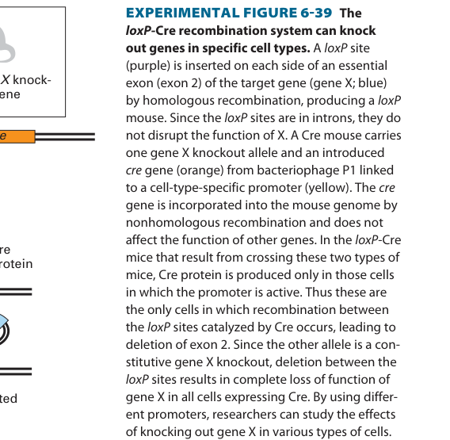
  <figcaption>实验图 6-39 loxP-Cre 重组系统可以在特定细胞类型中敲除基因。通过同源重组将 loxP 位点（紫色）插入到靶基因（基因 X；蓝色）的一个必需外显子（外显子 2）的两侧，产生 loxP 敲除基因小鼠。由于 loxP 位点位于内含子中，它们不干扰基因 X 的功能。Cre 小鼠携带一个基因 X 敲除等位基因和一个来自噬菌体 P1 的引入 cre 基因（橙色），该基因与细胞类型特异性启动子（黄色）连接。cre 基因通过非同源重组整合到小鼠基因组中，不影响其他基因的功能。在由这两种类型小鼠杂交产生的 loxP-Cre 小鼠中，Cre 蛋白仅在启动子活跃的细胞中产生。因此，这些是唯一发生由 Cre 催化的 loxP 位点之间重组的细胞，导致外显子 2 的缺失。由于另一个等位基因是组成型基因 X 敲除，loxP 位点之间的缺失导致所有表达 Cre 的细胞中基因 X 功能完全丧失。通过使用不同的启动子，研究人员可以研究在各种类型细胞中敲除基因 X 的效果。</figcaption>
  <table class="glossary"><caption>图内标签对照</caption>
  <tr><td class="gl-en">Cre-loxP system</td><td class="gl-zh">Cre-loxP系统</td></tr>
  <tr><td class="gl-en">Cre protein</td><td class="gl-zh">Cre蛋白</td></tr>
  <tr><td class="gl-en">loxP site</td><td class="gl-zh">loxP位点</td></tr>
  <tr><td class="gl-en">Conditional knockout</td><td class="gl-zh">条件性基因敲除</td></tr>
  <tr><td class="gl-en">Cell-type-specific promoter</td><td class="gl-zh">细胞类型特异性启动子</td></tr>
  <tr><td class="gl-en">Homologous recombination</td><td class="gl-zh">同源重组</td></tr>
  <tr><td class="gl-en">Exon</td><td class="gl-zh">外显子</td></tr>
  <tr><td class="gl-en">Knockout allele</td><td class="gl-zh">敲除等位基因</td></tr>
  <tr><td class="gl-en">Bacteriophage P1</td><td class="gl-zh">噬菌体P1</td></tr>
  </table>
</figure>
<p>GTP 结合状态的转变，从而抑制它们执行其开关功能（图 6-41）。</p>
<p>RNA 干扰通过破坏相应 mRNA 导致基因失活</p>
<figure id="fig-6-40">
  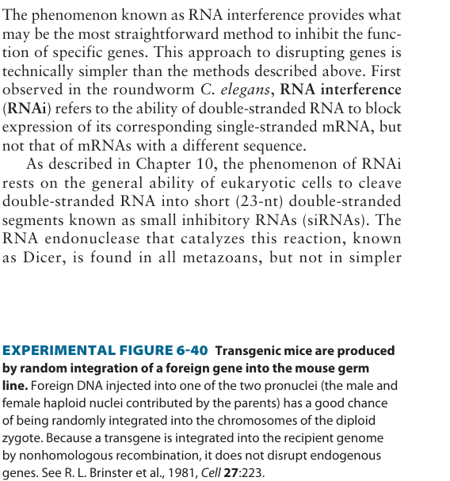
  <figcaption>实验图 6-40 转基因小鼠通过将外源基因随机整合到小鼠生殖系中来产生。注射到两个原核之一（父方和母方贡献的单倍体细胞核）中的外源 DNA 有很大机会被随机整合到二倍体合子的染色体中。由于转基因通过非同源重组整合到受体基因组中，它不破坏内源性基因。参见 R. L. Brinster et al., Cell 1981, 27:223。</figcaption>
  <table class="glossary"><caption>图内标签对照</caption>
  <tr><td class="gl-en">RNA interference</td><td class="gl-zh">RNA干扰</td></tr>
  <tr><td class="gl-en">RNAi</td><td class="gl-zh">RNAi（RNA干扰）</td></tr>
  <tr><td class="gl-en">C. elegans</td><td class="gl-zh">秀丽隐杆线虫（C. elegans）</td></tr>
  <tr><td class="gl-en">Double-stranded RNA</td><td class="gl-zh">双链RNA</td></tr>
  <tr><td class="gl-en">siRNAs</td><td class="gl-zh">siRNAs（小干扰RNA）</td></tr>
  <tr><td class="gl-en">Dicer</td><td class="gl-zh">Dicer（核酸内切酶）</td></tr>
  <tr><td class="gl-en">Transgenic mice</td><td class="gl-zh">转基因小鼠</td></tr>
  <tr><td class="gl-en">Pronuclei</td><td class="gl-zh">原核</td></tr>
  <tr><td class="gl-en">Zygote</td><td class="gl-zh">受精卵</td></tr>
  <tr><td class="gl-en">Nonhomologous recombination</td><td class="gl-zh">非同源重组</td></tr>
  <tr><td class="gl-en">Transgene</td><td class="gl-zh">转基因</td></tr>
  </table>
</figure>
<p>活性 无活性</p>
<p>(a) 仅表达小 GTPase 野生型等位基因的细胞</p>
<p>GTP</p>
<p>GDP</p>
<p>GTP</p>
<p>GDP</p>
<p>GTP</p>
<p>野生型</p>
<p>GEF</p>
<p>(b) 同时表达野生型等位基因和显性负效等位基因的细胞</p>
<p>GDP GDP</p>
<figure id="fig-6-41">
  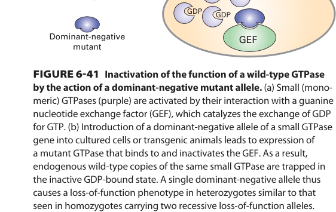
  <figcaption>图 6-41 通过显性负效突变等位基因的作用使野生型 GTPase 的功能失活。（a）小（单体）GTPase（紫色）通过与其鸟嘌呤核苷酸交换因子（GEF）的相互作用被激活，GEF 催化 GDP 与 GTP 的交换。（b）将小 GTPase 基因的显性负效等位基因引入培养细胞或转基因动物中，导致表达一种突变 GTPase，该 GTPase 结合并使 GEF 失活。结果，内源性野生型相同小 GTPase 的拷贝被捕获在失活的 GDP 结合状态。因此，单个显性负效等位基因在杂合子中引起类似于携带两个隐性功能丧失等位基因的纯合子中所见的表型。</figcaption>
  <table class="glossary"><caption>图内标签对照</caption>
  <tr><td class="gl-en">Dominant-negative mutant</td><td class="gl-zh">显性失活突变体</td></tr>
  <tr><td class="gl-en">GTPase</td><td class="gl-zh">GTPase（GTP酶）</td></tr>
  <tr><td class="gl-en">GEF</td><td class="gl-zh">GEF（鸟嘌呤核苷酸交换因子）</td></tr>
  <tr><td class="gl-en">GDP</td><td class="gl-zh">GDP（鸟苷二磷酸）</td></tr>
  <tr><td class="gl-en">GTP</td><td class="gl-zh">GTP（鸟苷三磷酸）</td></tr>
  <tr><td class="gl-en">Loss-of-function</td><td class="gl-zh">功能丧失</td></tr>
  <tr><td class="gl-en">Guanine nucleotide exchange factor</td><td class="gl-zh">鸟嘌呤核苷酸交换因子</td></tr>
  </table>
</figure>
<p>在真核生物如酵母中也是如此。siRNA 分子反过来可以在由称为 RISC 的蛋白复合物催化的反应中，导致匹配序列的 mRNA 分子被切割。RISC 介导 siRNA 的一条链与其在目标 mRNA 上的互补序列之间的识别和杂交；随后，RISC 复合物中的特异性核酸酶切割 mRNA-siRNA 杂交体。该模型解释了 RNAi 的特异性（因为它依赖于碱基配对）及其在沉默基因功能方面的效力（因为互补 mRNA 被核酸降解永久性破坏）。Dicer 和 RISC 的正常功能都是允许由称为微 RNA 或 miRNA 的小内源 RNA 分子进行基因调控。</p>
<p>研究人员可以利用微 RNA 途径，通过两种通用方法之一产生特定序列的 siRNA，来有意沉默感兴趣的秀丽隐杆线虫基因。在第一种方法中，通过对目标基因序列的有义和反义拷贝进行体外转录，产生对应于目标基因序列的双链 RNA（图 6-42a）。然后将该 dsRNA 注射到成虫的生殖腺中，在发育中的胚胎中由 Dicer 将其转化为 siRNA。与 RISC 复合物协同作用，siRNA 分子导致相应的 mRNA 分子被迅速破坏。由此产生的线虫表现出的表型类似于破坏目标基因本身所导致的表型。在某些情况下，仅将几个特定 dsRNA 分子插入一个细胞就足以灭活许多拷贝的相应 mRNA。图 6-42b 说明了注射的 dsRNA</p>
<p>(a) 双链 RNA 的体外生产</p>
<p>有义转录本</p>
<p>反义转录本</p>
<p>N</p>
<p>S</p>
<p>E</p>
<p>E</p>
<p>N</p>
<p>S</p>
<p>E</p>
<p>S</p>
<p>S</p>
<p>E</p>
<p>5' 5' 3' 3'</p>
<p>E</p>
<p>N</p>
<p>S</p>
<p>N</p>
<p>S</p>
<p>E</p>
<p>E</p>
<p>S</p>
<p>E</p>
<p>S</p>
<p>感兴趣的基因</p>
<p>感兴趣的基因</p>
<p>dsRNA</p>
<p>3'</p>
<p>5'</p>
<p>5'</p>
<p>3'</p>
<p>Dicer</p>
<p>siRNA</p>
<p>(b)</p>
<figure id="fig-6-42">
  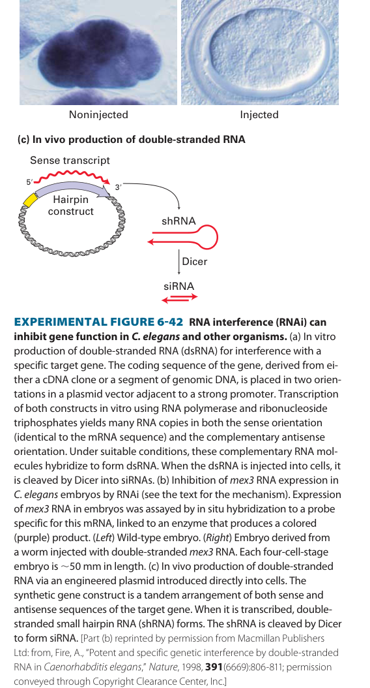
  <figcaption>实验图 6-42 RNA 干扰（RNAi）可以在秀丽隐杆线虫（C. elegans）和其他生物中抑制基因功能。（a）体外生产双链 RNA（dsRNA）以干扰特定靶基因。基因的编码序列（来自 cDNA 克隆或基因组 DNA 片段）以两种方向放置在质粒载体中，邻近一个强启动子。使用 RNA 聚合酶和核糖核苷三磷酸体外转录两种构建体，产生正义方向（与 mRNA 序列相同）和互补反义方向的大量 RNA 拷贝。在合适条件下，这些互补 RNA 分子杂交形成 dsRNA。当 dsRNA 被注射到细胞中时，它被 Dicer 切割成 siRNA。（b）通过 RNAi 抑制秀丽隐杆线虫胚胎中 mex3 RNA 的表达（机制见正文）。通过原位杂交检测胚胎中 mex3 RNA 的表达，使用与产生有色（紫色）产物的酶连接的对此 mRNA 特异性的探针。（左）野生型胚胎。（右）来自注射了 mex3 双链 RNA 的蠕虫的胚胎。每个四细胞阶段胚胎长度约 50 mm。（c）通过直接引入细胞的工程化质粒在体内生产双链 RNA。合成基因构建体是靶基因的正义和反义序列的串联排列。当其被转录时，形成双链小发夹 RNA（shRNA）。shRNA 被 Dicer 切割形成 siRNA。[部分（b）经 Macmillan Publishers Ltd 许可转载，来自 Fire, A., 「Potent and specific genetic interference by double-stranded RNA in Caenorhabditis elegans,」 Nature, 1998, 391(6669):806-811；通过 Copyright Clearance Center, Inc. 获得许可。]</figcaption>
  <table class="glossary"><caption>图内标签对照</caption>
  <tr><td class="gl-en">RNA interference</td><td class="gl-zh">RNA干扰</td></tr>
  <tr><td class="gl-en">RNAi</td><td class="gl-zh">RNAi</td></tr>
  <tr><td class="gl-en">siRNA</td><td class="gl-zh">siRNA（小干扰RNA）</td></tr>
  <tr><td class="gl-en">Dicer</td><td class="gl-zh">Dicer</td></tr>
  <tr><td class="gl-en">shRNA</td><td class="gl-zh">shRNA（短发夹RNA）</td></tr>
  <tr><td class="gl-en">Sense transcript</td><td class="gl-zh">正义转录本</td></tr>
  <tr><td class="gl-en">Antisense</td><td class="gl-zh">反义</td></tr>
  <tr><td class="gl-en">Hairpin construct</td><td class="gl-zh">发夹构建体</td></tr>
  <tr><td class="gl-en">Double-stranded RNA</td><td class="gl-zh">双链RNA</td></tr>
  <tr><td class="gl-en">C. elegans</td><td class="gl-zh">秀丽隐杆线虫（C. elegans）</td></tr>
  <tr><td class="gl-en">In situ hybridization</td><td class="gl-zh">原位杂交</td></tr>
  <tr><td class="gl-en">Noninjected</td><td class="gl-zh">未注射</td></tr>
  <tr><td class="gl-en">Injected</td><td class="gl-zh">已注射</td></tr>
  </table>
</figure>
<p>干扰相应内源 mRNA 在秀丽隐杆线虫胚胎中产生的能力。在该实验中，胚胎中的 mRNA 水平通过如前所述的原位杂交，使用荧光标记探针进行测定。</p>
<p>第二种方法是在体内产生特异性的双链 RNA。一种有效的方法是表达一个合成基因，该基因被设计为包含对应于目标基因的有义和反义序列的串联区段（图 6-42c）。当该基因被转录时，会形成一个双链 RNA"发夹"结构，称为小发夹 RNA 或 shRNA。然后 shRNA 将被 Dicer 切割形成 siRNA 分子。慢病毒表达载体对于将用于表达 shRNA 构建体的合成基因引入动物细胞特别有用。</p>
<p>两种 RNAi 方法都适用于系统性研究，在这些研究中，研究人员使生物体中每个已知基因失活并观察出了什么问题。例如，在秀丽隐杆线虫的初步研究中，对 16,700 个基因（约占基因组的 86%）的 RNA 干扰产生了 1722 个可见的异常表型。其功能失活导致特定异常表型的基因可以被分组为集合；每个集合的成员可能控制相同的信号或事件。然后可以弄清楚集合中基因之间的调控关系——例如，控制肌肉发育的基因。</p>
<p>RNAi 介导的基因失活在许多生物体中都已成功，包括果蝇、多种植物、斑马鱼、非洲爪蟾和小鼠，这些生物体现在正在进行大规模 RNAi 筛选。例如，慢病毒载体已被设计用于通过 RNAi 灭活在培养的哺乳动物细胞中表达的 10,000 多个不同基因。失活基因的功能可以从转染了慢病毒载体的细胞克隆的生长或形态缺陷中推断出来。</p>
<p>工程化的 CRISPR–Cas9 系统实现精确的基因组编辑</p>
<p>一项最近开发的技术通过称为基因组编辑的过程，允许对基因组 DNA 序列进行精确的改变。该方法基于一种天然的机制，该机制进化出来以保护细菌细胞免受外源 DNA（如噬菌体 DNA）的侵害。这种机制称为 CRISPR（成簇规律间隔短回文重复序列），以在约半数已测序的细菌基因组中发现的奇怪的串联重复序列阵列命名。重复序列阵列的两侧是一组保守的基因，称为 Cas（CRISPR 相关）基因，它们与编码核酸酶的基因表现出相似性。</p>
<p>理解 CRISPR 序列功能的突破来自于观察到阵列中的一组重复序列元件通常与噬菌体基因组中的短片段匹配。随后证明，CRISPR 元件和相关的 Cas 基因赋予细菌细胞在精确的</p>
<p>位点切割噬菌体 DNA 的能力，该位点对应于 CRISPR 阵列中的重复序列。通过 CRISPR 获得对噬菌体的免疫分两个阶段进行。在第一阶段，携带 CRISPR 系统的被噬菌体感染的细菌将噬菌体 DNA 切割成短片段，并将这些片段添加到 CRISPR 阵列中，使它们散布在高度保守的重复序列之间。在第二阶段，CRISPR 阵列的转录和所得 RNA 的加工产生成熟的二分 RNA 分子，这些分子同时携带保守的重复序列和噬菌体来源的间隔序列。重复序列与一个称为 tracrRNA 的第二 RNA 分子组装，后者为结合 Cas 蛋白以形成干扰复合物提供支架，而噬菌体来源的序列通过碱基配对将复合物引导至特定靶序列。一旦靶向到特定的 DNA 序列，Cas 蛋白中的核酸酶就在与引导序列碱基配对的区域相邻的位点切割目标 DNA 分子的两条链。</p>
<p>尽管 CRISPR 元件仅在原核生物中发现，研究人员提出引导 RNA 和 Cas 蛋白如果在真核细胞中表达，应该能够执行其功能。为了使 CRISPR 在几乎任何细胞类型中都能发挥作用，已经开发了由核酸酶 Cas9 和一个工程化引导 RNA 组成的最小系统（图 6-43a）。Cas9 包含基因组编辑所需的所有酶活性，包括两个独立的核酸内切酶活性——每条 DNA 链各一个。引导 RNA 由两个区域组成：第一个区域由两个互补序列组成，形成双链发夹结构，旨在与 Cas9 结合；第二个区域约 20 nt，提供靶向活性，旨在与基因组 DNA 中的特定位点完美匹配。当 Cas9 和引导 RNA 均在受体细胞中表达时，Cas9 将在引导 RNA 序列指定的染色体位点切割两条 DNA 链（图 6-43b,c）。Cas9 和特异性引导 RNA 表达质粒的转染已被证明可在来自多种生物体的细胞中产生特异性 DNA 切割，包括果蝇、秀丽隐杆线虫、斑马鱼、小鼠、大鼠和人类。一种特别有效的修改生物体生殖系的方法始于将 Cas9 mRNA 和引导 RNA 显微注射到小鼠受精卵中。在特定靶序列中产生的双链断裂通常由一组酶修复，这些酶在称为非同源末端连接的过程中将游离的 DNA 末端重新连接在一起（图 6-43d）。通常，在切割位点会缺失几个碱基对，因为核酸酶可以在末端连接反应完成之前从游离 DNA 末端移除碱基。如果切割位点在基因编码序列内部，几个碱基的缺失通常会导致移码突变，从而使目标基因失活。</p>
<p>这种基因组编辑方法的一个重要改进是添加一段 DNA 片段，通常约 100 nt 长，与切割位点两侧的序列匹配。当存在同源 DNA 时，游离末端可以通过使用添加的 DNA 片段进行同源重组来修复</p>
<p>引导 RNA 表达 Cas9 表达</p>
<p>(a) (b)</p>
<p>NLS 密码子优化</p>
<p>tracrRNA</p>
<p>支架 靶序列</p>
<p>Cas9</p>
<p>物种特异性启动子</p>
<p>物种特异性启动子</p>
<p>转录和翻译</p>
<p>转录</p>
<p>Cas9</p>
<p>功能性嵌合引导 RNA</p>
<p>* *</p>
<p>(gRNA)</p>
<p>基因组 DNA</p>
<p>(c)</p>
<p>感兴趣的基因 靶序列</p>
<p>启动子</p>
<p>Cas9 结合 gRNA 靶序列</p>
<p>Cas9</p>
<p>不同的 Cas9 核酸酶位点切割靶 DNA</p>
<p>Cas9</p>
<p>* *</p>
<p>Cas9 诱导的靶序列双链断裂</p>
<p>(d)</p>
<p>同源定向修复 (HDR)</p>
<p>非同源末端连接</p>
<p>同源性</p>
<p>非同源末端连接</p>
<p>HDR 模板</p>
<p>特异性改变</p>
<p>同源重组</p>
<p>短缺失破坏开放阅读框</p>
<p>mRNA</p>
<p>将特异性改变引入基因组 DNA</p>
<p>诱导的提前终止密码子</p>
<p>mRNA</p>
<p>(b) 支架 RNA</p>
<p>Cas9</p>
<p>细菌 DNA</p>
<p>引导 RNA</p>
<p>*</p>
<p>*</p>
<figure id="fig-6-43">
  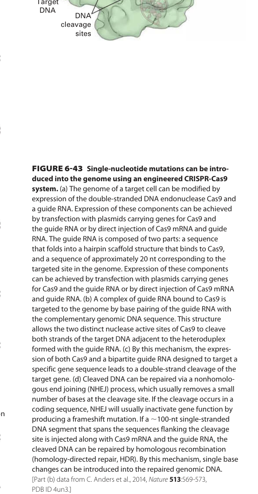
  <figcaption>图 6-43 使用工程化的 CRISPR-Cas9 系统可以将单核苷酸突变引入基因组。（a）靶细胞的基因组可以通过表达双链 DNA 核酸内切酶 Cas9 和 guide RNA 来修饰。这些组分的表达可以通过用携带 Cas9 和 guide RNA 基因的质粒转染来实现，或通过直接注射 Cas9 mRNA 和 guide RNA 来实现。guide RNA 由两部分组成：折叠成与 Cas9 结合的发夹支架结构的序列，以及约 20 nt 的对应于基因组中靶向位点的序列。（b）与 Cas9 结合的 guide RNA 复合物通过 guide RNA 与互补基因组 DNA 序列的碱基配对靶向基因组。这种结构允许 Cas9 的两个不同核酸酶活性位点切割与 guide RNA 形成的异源双链体相邻的靶 DNA 的两条链。（c）通过这种机制，表达 Cas9 和设计用于靶向特定基因序列的双组分 guide RNA 导致靶基因的双链切割。（d）切割的 DNA 可以通过非同源末端连接（NHEJ）过程修复，该过程通常在切割位点去除少量碱基。如果切割发生在编码序列中，NHEJ 通常会通过产生移码突变使基因功能失活。如果与 Cas9 mRNA 和 guide RNA 一起注射一段约 100 nt 的单链 DNA 片段，该片段跨越切割位点侧翼序列，则切割的 DNA 可以通过同源重组（同源定向修复，HDR）修复。通过这种机制，可以将单碱基变化引入修复的基因组 DNA 中。[部分（b）数据来自 C. Anders et al., 2014, Nature 513:569-573, PDB ID 4un3。]</figcaption>
  <table class="glossary"><caption>图内标签对照</caption>
  <tr><td class="gl-en">CRISPR-Cas9</td><td class="gl-zh">CRISPR-Cas9系统</td></tr>
  <tr><td class="gl-en">Cas9</td><td class="gl-zh">Cas9（核酸内切酶）</td></tr>
  <tr><td class="gl-en">Guide RNA</td><td class="gl-zh">引导RNA</td></tr>
  <tr><td class="gl-en">Target DNA</td><td class="gl-zh">靶DNA</td></tr>
  <tr><td class="gl-en">DNA cleavage sites</td><td class="gl-zh">DNA切割位点</td></tr>
  <tr><td class="gl-en">Double-strand break</td><td class="gl-zh">双链断裂</td></tr>
  <tr><td class="gl-en">Nonhomologous end joining</td><td class="gl-zh">非同源末端连接</td></tr>
  <tr><td class="gl-en">NHEJ</td><td class="gl-zh">NHEJ</td></tr>
  <tr><td class="gl-en">Homology-directed repair</td><td class="gl-zh">同源定向修复</td></tr>
  <tr><td class="gl-en">HDR</td><td class="gl-zh">HDR</td></tr>
  <tr><td class="gl-en">Frameshift mutation</td><td class="gl-zh">移码突变</td></tr>
  <tr><td class="gl-en">Single-nucleotide mutation</td><td class="gl-zh">单核苷酸突变</td></tr>
  <tr><td class="gl-en">Genome editing</td><td class="gl-zh">基因组编辑</td></tr>
  </table>
</figure>
<p>（见图 6-43d）。通过适当设计引导 RNA 以指定切割位点，并在添加的同源 DNA 片段中引入适当的序列改变，可以产生目标 DNA 中精确的单碱基改变。在这种基因组编辑方法的一次引人注目的示范中，导致白内障形成的 Crygc（gamma-晶状体蛋白基因）中的一个单碱基突变，通过向突变小鼠受精卵注射 Cas9 mRNA、一个引导切割至突变位点的引导 RNA，以及一个跨越切割位点并含有野生型 Crygc 序列的 90 nt DNA 片段，被纠正回野生型（见本章首页照片）。该实验还说明了 CRISPR-Cas9 靶向的显著选择性，因为纠正突变等位基因要求引导 RNA 区分突变型和野生型等位基因，而这两者仅相差一个碱基对。</p>
<p>在第 6.4 节中，我们看到人类遗传作图和关联研究已经鉴定了大量遗传变异，其中许多代表使人们易患某种遗传疾病的单核苷酸多态性。现在，使用 CRISPR-Cas9 系统在哺乳动物生殖系中产生特异性单碱基改变的能力，为在良好控制的实验生物（如小鼠）中创建等效等位基因开辟了可能性。</p>
<p>关键概念 第 6.5 节</p>
<p>真核生物中特定基因功能的失活</p>
<p>- 一旦一个基因被克隆，关于其正常体内功能的重要线索可以从突变该基因的观察到的表型效应中推断出来。</p>
<p>- 基因可以在酵母中通过同源重组将一个选择标记基因插入野生型基因的一个拷贝中来破坏，产生杂合突变体。当这样的杂合子形成孢子时，将产生两个无法存活的单倍体孢子（见图 6-36）。</p>
<p>- 酵母基因可以通过使用 GAL1 启动子在细胞转移到葡萄糖培养基时关闭基因转录，以受控方式使其失活。</p>
<p>- 在小鼠中，修饰的基因可以通过同源重组在其原始基因组位置整合到生殖系中，产生敲除（见图 6-38 和 6-39）。敲除小鼠可以为人类遗传疾病（如囊性纤维化）提供模型。</p>
<p>- loxP-Cre 重组系统允许生产在特定组织中基因被敲除的小鼠。</p>
<p>- 在转基因细胞或生物体的生产中，外源 DNA 通过非同源重组整合到宿主基因组中（见图 6-40）。以这种方式引入显性负效等位基因可以在不改变基因序列的情况下功能性失活该基因。</p>
<p>- 在许多生物体中，包括秀丽隐杆线虫，双链 RNA 触发所有具有相同序列的 mRNA 分子的破坏（见图 6-42）。这种现象称为 RNAi（RNA 干扰），提供了一种在不改变基因结构的情况下功能性失活基因的特异性和强效手段。</p>
<p>- 一种进化来精确靶向和切割外源 DNA 的细菌系统，称为 CRISPR，已被改造用于许多生物体中，以便将特异性改变引入基因组 DNA。通过 CRISPR-Cas9 在特定位点切割染色体 DNA 通常导致切割位点的短缺失。如果通过转染提供一个适当设计的 DNA 片段，则可以在切割位点引入特异性 DNA 改变，如点突变（见图 6-43）。</p>
<p>访问 LaunchPad 以获取学习工具并了解更多关于本章内容的信息。t 未来的展望 t 分析数据 t 扩展参考文献 t 额外的学习工具，包括视频、动画和测验</p>
<p>关键术语</p>
<p>Northern 印迹 247</p>
<p>表型 224</p>
<p>质粒 236</p>
<p>点突变 225</p>
<p>聚合酶链反应 (PCR) 239</p>
<p>等位基因 224</p>
<p>克隆 237</p>
<p>互补 DNA (cDNA) 239</p>
<p>CRISPR 266</p>
<p>DNA 克隆 234</p>
<p>DNA 文库 237</p>
<p>DNA 微阵列 247</p>
<p>显性 225</p>
<p>功能性互补 237</p>
<p>基因敲除 261</p>
<p>基因型 224</p>
<p>杂合子 225</p>
<p>纯合子 225</p>
<p>杂交 246</p>
<p>原位杂交 247</p>
<p>连锁 232</p>
<p>诱变剂 224</p>
<p>突变 224</p>
<p>隐性 225</p>
<p>重组 DNA 234</p>
<p>重组 232</p>
<p>限制酶 234</p>
<p>RNA 干扰 (RNAi) 264</p>
<p>分离 227</p>
<p>Southern 印迹 246</p>
<p>转染 251</p>
<p>转化 236</p>
<p>转基因 263</p>
<p>载体 234</p>
<p>野生型 224</p>
<p>复习概念</p>
<p>1. 遗传突变可以为复杂的细胞或发育过程的机制提供见解。根据特定突变是隐性还是显性，你对遗传突变的分析可能会有什么不同？</p>
<p>2. 什么是温度敏感突变？为什么温度敏感突变对于揭示基因功能很有用？</p>
<p>3. 描述互补分析如何用于揭示两个突变是在同一基因还是在不同基因中。解释为什么互补分析对显性突变不起作用。</p>
<p>4. Jane 分离了一株酵母突变株，在平板上生长时形成红色菌落而非正常的白色。为了确定突变基因，她决定使用含有赖氨酸选择标记的 DNA 文库进行功能性互补。除了未知的基因突变外，该酵母还缺乏合成亮氨酸和赖氨酸所必需的基因。Jane 应该将她的酵母培养在什么培养基上以确保它们获得了文库质粒？她如何知道文库质粒何时互补了她的酵母突变？</p>
<p>5. 限制酶和 DNA 连接酶在 DNA 克隆中发挥重要作用。为什么产生限制酶的细菌不会切割自己的 DNA？描述限制性位点的一些一般特征。用限制酶切割 DNA 后可以产生哪三种类型的 DNA 末端？DNA 连接酶催化什么反应？</p>
<p>6. 细菌质粒通常用作克隆载体。描述质粒载体的基本特征。质粒作为克隆载体有哪些优势和应用？</p>
<p>7. DNA 文库是克隆的集合，每个克隆含有一个不同的 DNA 片段，插入到克隆载体中。cDNA 文库和基因组 DNA 文库之间有什么区别？假设你想将基因 X（一个仅在神经元中表达的基因）克隆到载体中，使用文库作为插入片段的来源。你手头有以下文库：来自皮肤细胞的基因组文库、来自皮肤细胞的 cDNA 文库、来自神经元的基因组文库和来自神经元的 cDNA 文库。你可以使用哪个，为什么？</p>
<p>8. 1993 年，Kary Mullis 因其发明 PCR 过程而获得诺贝尔化学奖。描述 PCR 反应每个循环中的三个步骤。为什么热稳定 DNA 聚合酶的发现对 PCR 的发展如此重要？</p>
<p>9. Southern 和 Northern 印迹是基于核酸杂交的强大分子生物学工具。这些技术有何相同之处？它们有何不同？给出每种印迹技术的具体应用。</p>
<p>10. 许多外源蛋白已在细菌和哺乳动物细胞中表达。描述表达外源基因所需的重组质粒的基本特征。如何修饰外源蛋白以便于其纯化？在哺乳动物细胞中表达蛋白质相对于在细菌中表达有什么优势？</p>
<p>11. Northern 印迹、RT-PCR 和微阵列可用于分析基因表达。一个实验室研究酵母细胞，比较它们在两种不同糖类（葡萄糖和半乳糖）中的生长。一位学生正在比较 HMG2 基因在这两种条件下的表达。他可以使用哪种（些）技术，为什么？另一位学生想要比较 4 号染色体上所有基因的表达，这些基因约有 800 个。她可以使用哪种（些）技术，为什么？</p>
<p>12. 在确定与新发现基因相对应的蛋白质的身份时，通常有助于了解该基因的组织表达模式。例如，研究人员发现一个名为 SERPINA6 的基因在肝脏、肾脏和胰腺中表达，但在其他组织中不表达。研究人员可以使用什么技术来找出哪些组织表达特定基因？</p>
<p>13. DNA 多态性可用作 DNA 标记。描述 SNP 和 STR 多态性之间的差异。这些标记如何用于 DNA 作图研究？</p>
<p>14. 连锁不平衡作图有时如何提供比经典连锁作图高得多的基因定位分辨率？</p>
<p>15. 遗传连锁研究通常只能大致定位疾病基因的染色体位置。表达分析和 DNA 序列分析如何帮助在连锁作图确定的区域内定位疾病基因？</p>
<p>16. 选择性修改小鼠基因组的能力已经彻底改变了小鼠遗传学。概述在特定遗传位点产生敲除小鼠的程序。如何使用 loxP-Cre 系统条件性敲除一个基因？敲除小鼠的一个重要医学应用是什么？</p>
<p>17. 两种不改变基因序列而功能性失活基因的方法涉及显性负效等位基因和 RNA 干扰（RNAi）。描述每种方法如何抑制基因的表达。</p>
<p>参考文献</p>
<p>突变遗传分析以鉴定和研究基因</p>
<p>Hartwell, L. H. 1967. Macromolecular synthesis of temperature-sensitive mutants of yeast. J. Bacteriol. 93:1662.</p>
<p>Nüsslein-Volhard, C., and E. Wieschaus. 1980. Mutations affecting segment number and polarity in Drosophila. Nature 287:795–801.</p>
<p>Tong, A. H., et al. 2001. Systematic genetic analysis with ordered arrays of yeast deletion mutants. Science 294:2364–2368.</p>
<p>DNA 克隆与鉴定</p>
<p>Maniatis, T., et al. 1978. The isolation of structural genes from libraries of eucaryotic DNA. Cell 15:687–701.</p>
<p>Nasmyth, K. A., and S. I. Reed. 1980. Isolation of genes by complementation in yeast: molecular cloning of a cell-cycle gene. P. Natl. Acad. Sci. USA 77:2119–2123.</p>
<p>Nathans, D., and H. O. Smith. 1975. Restriction endonucleases in the analysis and restructuring of DNA molecules. Annu. Rev. Biochem. 44:273–293.</p>
<p>使用克隆 DNA 片段研究基因表达</p>
<p>Pellicer, A., et al. 1978. The transfer and stable integration of the HSV thymidine kinase gene into mouse cells. Cell 41:133–141.</p>
<p>Saiki, R. K., et al. 1988. Primer-directed enzymatic amplification of DNA with a thermostable DNA polymerase. Science 239:487–491.</p>
<p>定位和鉴定人类疾病基因</p>
<p>Botstein, D., et al. 1980. Construction of a genetic linkage map in man using restriction fragment length polymorphisms. Am. J. Genet. 32:314–331.</p>
<p>Donis-Keller, H., et al. 1987. A genetic linkage map of the human genome. Cell 51:319–337.</p>
<p>Hastbacka, T., et al. 1994. The diastrophic dysplasia gene encodes a novel sulfate transporter: positional cloning by fine-structure linkage disequilibrium mapping. Cell 78:1073.</p>
<p>真核生物中特定基因功能的失活</p>
<p>Capecchi, M. R. 1989. Altering the genome by homologous recombination. Science 244:1288–1292.</p>
<p>Fire, A., et al. 1998. Potent and specific genetic interference by double-stranded RNA in Caenorhabditis elegans. Nature 391:806–811.</p>
<p>Jinek, M., et al. 2012. A programmable dual-RNA-guided DNA endonuclease in adaptive bacterial immunity. Science 337:816–821.</p>
<p>Zamore, P. D., et al. 2000. RNAi: double-stranded RNA directs the ATP-dependent cleavage of mRNA at 21 to 23 nucleotide intervals. Cell 101:25–33.</p>
<p>Zimmer, A. 1992. Manipulating the genome by homologous recombination in embryonic stem cells. Annu. Rev. Neurosci. 15:115.</p>
<p>具有嵌入膜蛋白的脂双层分子模型。整合膜蛋白具有不同的外质、胞质和跨膜结构域。此处展示的是胰岛素受体的部分，该受体调节细胞代谢。[Ramon Andrade 3Dciencia/Science Photo Library/Science Source.]</p>
<p>膜参与细胞结构和功能的许多方面。质膜定义细胞并将内部与外部隔开。在真核生物中，膜还定义细胞内的细胞器，如细胞核、线粒体和溶酶体。这些生物膜都具有相同的基本结构：一个其中嵌入了蛋白质的磷脂双层（图 7-1）。通过阻止大多数水溶性物质在膜上的自由移动，磷脂双层作为通透性屏障，有助于维持细胞或细胞器内部与外部之间的特征性差异；反过来，嵌入的蛋白质赋予膜特定的功能，例如物质从一侧到另一侧的受调控运输。每种细胞膜都有其自己的一套蛋白质，使其能够执行许多不同的功能。</p>
<p>原核生物是最简单和最小的细胞，长约 1-2 μm，被单一质膜包围；在大多数情况下，它们不含任何膜限制的内部亚区室（见图 1-11）。然而，这单一质膜含有数百种不同类型的蛋白质，这些蛋白质对细胞功能至关重要。</p>
<p>大纲</p>
<p>7.1 脂双层：组成和结构组织</p>
<p>7.2 膜蛋白：结构和基本功能</p>
<p>第 7 章</p>
<p>生物膜结构</p>
<p>其中一些蛋白质催化 ATP 合成和 DNA 复制起始等。其他包括许多类型的膜转运蛋白，它们使特定的离子、糖类、氨基酸和维生素能够穿过原本不可渗透的磷脂双层进入细胞，并允许特定的代谢产物排出。质膜中的受体蛋白是允许细胞识别其环境中存在的化学信号并相应调整其代谢或基因表达模式的蛋白质。</p>
<p>真核生物也具有一个布满许多不同蛋白质的质膜，这些蛋白质执行多种功能，包括膜转运、细胞信号传导和将细胞连接成组织。此外，真核细胞——通常比原核生物大得多——具有多种内部膜包裹的细胞器（见图 1-12）。每种类型的细胞器膜都有独特的蛋白质组件，使其能够执行其特有的细胞功能，例如 ATP 生成（在线粒体中）和 DNA 合成（在细胞核中）。许多质膜蛋白还结合细胞骨架的组分，细胞骨架是一个密集的蛋白质纤维网络，纵横交错于胞质中</p>
<p>7.3 磷脂、鞘脂和胆固醇：合成和细胞内运动</p>
<div class="footer">分子细胞生物学（第8版）中文翻译 · 非营利学习用途</div>
</article>
<div id="lightbox" onclick="this.style.display='none'"><span class="close">&times;</span></div>
<script>
function lightbox(src){var lb=document.getElementById('lightbox');lb.querySelector('img').src=src;lb.style.display='flex';}
document.addEventListener('keydown',function(e){if(e.key==='Escape')document.getElementById('lightbox').style.display='none';});
(function(){
  var handles=document.querySelectorAll('.data-table .resize-handle');
  var startX,startW,col,table;
  handles.forEach(function(h){
    h.addEventListener('mousedown',function(e){
      e.preventDefault();e.stopPropagation();
      col=h.parentNode;table=col.closest('table');
      startX=e.clientX;startW=col.offsetWidth;
      document.body.classList.add('resizing');
      document.addEventListener('mousemove',onMove);
      document.addEventListener('mouseup',onUp);
    });
  });
  function onMove(e){
    var dx=e.clientX-startX;
    var newW=Math.max(40,startW+dx);
    var idx=Array.from(table.querySelectorAll('thead th')).indexOf(col);
    var cg=table.querySelector('colgroup');
    if(cg&&cg.children[idx])cg.children[idx].style.width=newW+'px';
    table.style.tableLayout='auto';
  }
  function onUp(){
    document.body.classList.remove('resizing');
    document.removeEventListener('mousemove',onMove);
    document.removeEventListener('mouseup',onUp);
  }
})();
/* 阅读索引：折叠切换 + 滚动监视 */
(function(){
  var toc=document.getElementById('toc');
  var toggle=document.getElementById('toc-toggle');
  if(toggle){
    toggle.addEventListener('click',function(){
      if(window.innerWidth<=1050){
        toc.classList.toggle('open');
        toggle.textContent=toc.classList.contains('open')?'◀':'▶';
      }else{
        toc.classList.toggle('hidden');
        toggle.textContent=toc.classList.contains('hidden')?'▶':'◀';
      }
    });
  }

  var tocLinks=document.querySelectorAll('#toc a');
  var targets=[];
  tocLinks.forEach(function(a){
    var id=a.getAttribute('href');
    if(!id)return;
    var el=document.getElementById(id.replace('#',''));
    if(el)targets.push({el:el,link:a});
  });
  function onScroll(){
    var scrollY=window.scrollY+120;
    var active=null;
    for(var i=targets.length-1;i>=0;i--){
      if(targets[i].el.offsetTop<=scrollY){active=targets[i].link;break;}
    }
    tocLinks.forEach(function(a){a.classList.remove('active');});
    if(active)active.classList.add('active');
  }
  window.addEventListener('scroll',onScroll,{passive:true});
  onScroll();

  tocLinks.forEach(function(a){
    a.addEventListener('click',function(e){
      e.preventDefault();
      var id=this.getAttribute('href').replace('#','');
      var el=document.getElementById(id);
      if(el){el.scrollIntoView({behavior:'smooth',block:'start'});}
      if(window.innerWidth<=1050)toc.classList.remove('open');
    });
  });
  /* 移动端点击正文关闭侧栏 */
  document.addEventListener('click',function(e){
    if(!toc.classList.contains('open'))return;
    if(!toc.contains(e.target)&&e.target!==toggle)toc.classList.remove('open');
  });
})();
</script>
</body></html>